import pandas as pd
from datetime import datetime
import numpy as np
import matplotlib.pyplot as plt
import seaborn as sns
sns.set_theme()
#plt.style.use('seaborn-white')
#plt.style.use('ggplot')AML Mini-Challenge - Credit Card Affinity Modelling
Dominik Filliger & Noah Leuenberger
The task can be found here.
Setup
Helper Functions
def plot_categorical_variables(df, categorical_columns, fill_na_value='NA'):
"""
Plots count plots for categorical variables in a DataFrame, filling NA values with a specified string.
Parameters:
- df: pandas.DataFrame containing the data.
- categorical_vars: list of strings, names of the categorical variables in df to plot.
- fill_na_value: string, the value to use for filling NA values in the categorical variables.
"""
# Fill NA values in the specified categorical variables
for var in categorical_columns:
if df[var].isna().any():
df[var] = df[var].fillna(fill_na_value)
total = float(len(df))
fig, axes = plt.subplots(nrows=len(categorical_columns), figsize=(14, len(categorical_columns) * 4.5))
if len(categorical_columns) == 1: # If there's only one categorical variable, wrap axes in a list
axes = [axes]
for i, var in enumerate(categorical_columns):
ax = sns.countplot(x=var, data=df, ax=axes[i], order=df[var].value_counts().index)
axes[i].set_title(f'Distribution of {var}')
axes[i].set_ylabel('Count')
axes[i].set_xlabel(var)
for p in ax.patches:
height = p.get_height()
ax.text(p.get_x() + p.get_width() / 2.,
height + 3,
'{:1.2f}%'.format((height / total) * 100),
ha="center")
plt.tight_layout()
plt.show()
def plot_numerical_distributions(df, numerical_columns, kde=True, bins=30):
"""
Plots the distribution of all numerical variables in a DataFrame.
Parameters:
- df: pandas.DataFrame containing the data.
"""
# Determine the number of rows needed for subplots based on the number of numerical variables
nrows = len(numerical_columns)
# Create subplots
fig, axes = plt.subplots(nrows=nrows, ncols=1, figsize=(8, 5 * nrows))
if nrows == 1: # If there's only one numerical variable, wrap axes in a list
axes = [axes]
for i, var in enumerate(numerical_columns):
sns.histplot(df[var], ax=axes[i], kde=kde, bins=bins)
axes[i].set_title(f'Distribution of {var}')
axes[i].set_xlabel(var)
axes[i].set_ylabel('Frequency')
plt.tight_layout()
plt.show()
def plot_date_monthly_counts(df, date_column, title):
"""
Plots the monthly counts of a date column in a DataFrame.
Parameters:
- df: pandas.DataFrame containing the data.
- date_column: string, name of the date column in df to plot.
- title: string, title of the plot.
"""
df[date_column] = pd.to_datetime(df[date_column])
df['month'] = df[date_column].dt.to_period('M')
monthly_counts = df['month'].value_counts().sort_index()
monthly_counts.plot(kind='bar', figsize=(14, 6))
plt.title(title)
plt.xlabel('Month')
plt.ylabel('Count')
plt.show()
def add_percentage_labels(ax, hue_order):
for p in ax.patches:
height = p.get_height()
width = p.get_width()
x = p.get_x()
y = p.get_y()
label_text = f'{height:.1f}%'
label_x = x + width / 2
label_y = y + height / 2
ax.text(label_x, label_y, label_text, ha='center', va='center', fontsize=9, color='white', weight='bold')from collections import OrderedDict
data_reduction = OrderedDict()Data Import & Wrangling
def remap_values(df, column, mapping):
# assert that all values in the column are in the mapping except for NaN
assert df[column].dropna().isin(mapping.keys()).all()
df[column] = df[column].map(mapping, na_action='ignore')
return df
def map_empty_to_nan(df, column):
if df[column].dtype != 'object':
return df
df[column] = df[column].replace(r'^\s*$', np.nan, regex=True)
return df
def read_csv(file_path, sep=";", dtypes=None):
df = pd.read_csv(file_path, sep=sep, dtype=dtypes)
for col in df.columns:
df = map_empty_to_nan(df, col)
return dfAccounts
accounts_df = read_csv("data/account.csv")
# Translated frequency from Czech to English
# according to https://sorry.vse.cz/~berka/challenge/PAST/index.html
accounts_df = remap_values(accounts_df, 'frequency', {
"POPLATEK MESICNE": "MONTHLY_ISSUANCE",
"POPLATEK TYDNE": "WEEKLY_ISSUANCE",
"POPLATEK PO OBRATU": "ISSUANCE_AFTER_TRANSACTION"
})
accounts_df['date'] = pd.to_datetime(accounts_df['date'], format='%y%m%d')
accounts_df.rename(columns={'date': 'account_created',
'frequency': 'account_frequency'}, inplace=True)
data_reduction["Total number of accounts"] = len(accounts_df)
accounts_df.info()<class 'pandas.core.frame.DataFrame'>
RangeIndex: 4500 entries, 0 to 4499
Data columns (total 4 columns):
# Column Non-Null Count Dtype
--- ------ -------------- -----
0 account_id 4500 non-null int64
1 district_id 4500 non-null int64
2 account_frequency 4500 non-null object
3 account_created 4500 non-null datetime64[ns]
dtypes: datetime64[ns](1), int64(2), object(1)
memory usage: 140.8+ KB# todo add some basic eda here
accounts_df.head()| account_id | district_id | account_frequency | account_created | |
|---|---|---|---|---|
| 0 | 576 | 55 | MONTHLY_ISSUANCE | 1993-01-01 |
| 1 | 3818 | 74 | MONTHLY_ISSUANCE | 1993-01-01 |
| 2 | 704 | 55 | MONTHLY_ISSUANCE | 1993-01-01 |
| 3 | 2378 | 16 | MONTHLY_ISSUANCE | 1993-01-01 |
| 4 | 2632 | 24 | MONTHLY_ISSUANCE | 1993-01-02 |
accounts_df.nunique()account_id 4500
district_id 77
account_frequency 3
account_created 1535
dtype: int64plot_categorical_variables(accounts_df, ['account_frequency'])
plot_numerical_distributions(accounts_df, ['account_created'])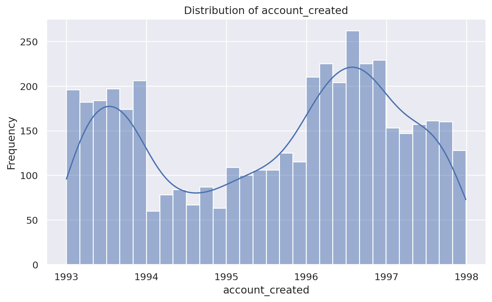
Clients
clients_df = read_csv("data/client.csv")
def parse_birth_number(birth_number):
birth_number_str = str(birth_number)
# Extract year, month, and day from birth number from string
# according to https://sorry.vse.cz/~berka/challenge/PAST/index.html
year = int(birth_number_str[:2])
month = int(birth_number_str[2:4])
day = int(birth_number_str[4:6])
# Determine sex based on month and adjust month for female clients
# according to https://sorry.vse.cz/~berka/challenge/PAST/index.html
if month > 50:
sex = "Female"
month -= 50
else:
sex = "Male"
# Validate date
assert 1 <= month <= 12
assert 1 <= day <= 31
assert 0 <= year <= 99
if month in [4, 6, 9, 11]:
assert 1 <= day <= 30
elif month == 2:
assert 1 <= day <= 29
else:
assert 1 <= day <= 31
# Assuming all dates are in the 1900s
birth_date = datetime(1900 + year, month, day)
return pd.Series([sex, birth_date])
clients_df[['sex', 'birth_date']] = clients_df['birth_number'].apply(parse_birth_number)
# Calculate 'age' assuming the reference year is 1999
clients_df['age'] = clients_df['birth_date'].apply(lambda x: 1999 - x.year)
# Drop 'birth_number' column as it is no longer needed
clients_df = clients_df.drop(columns=['birth_number'])
clients_df.info()<class 'pandas.core.frame.DataFrame'>
RangeIndex: 5369 entries, 0 to 5368
Data columns (total 5 columns):
# Column Non-Null Count Dtype
--- ------ -------------- -----
0 client_id 5369 non-null int64
1 district_id 5369 non-null int64
2 sex 5369 non-null object
3 birth_date 5369 non-null datetime64[ns]
4 age 5369 non-null int64
dtypes: datetime64[ns](1), int64(3), object(1)
memory usage: 209.9+ KB# todo add some basic eda here
clients_df.head()| client_id | district_id | sex | birth_date | age | |
|---|---|---|---|---|---|
| 0 | 1 | 18 | Female | 1970-12-13 | 29 |
| 1 | 2 | 1 | Male | 1945-02-04 | 54 |
| 2 | 3 | 1 | Female | 1940-10-09 | 59 |
| 3 | 4 | 5 | Male | 1956-12-01 | 43 |
| 4 | 5 | 5 | Female | 1960-07-03 | 39 |
clients_df.describe()| client_id | district_id | birth_date | age | |
|---|---|---|---|---|
| count | 5369.000000 | 5369.000000 | 5369 | 5369.000000 |
| mean | 3359.011920 | 37.310114 | 1953-09-12 09:32:21.143602176 | 45.801639 |
| min | 1.000000 | 1.000000 | 1911-08-20 00:00:00 | 12.000000 |
| 25% | 1418.000000 | 14.000000 | 1940-11-25 00:00:00 | 31.000000 |
| 50% | 2839.000000 | 38.000000 | 1954-05-06 00:00:00 | 45.000000 |
| 75% | 4257.000000 | 60.000000 | 1968-06-09 00:00:00 | 59.000000 |
| max | 13998.000000 | 77.000000 | 1987-09-27 00:00:00 | 88.000000 |
| std | 2832.911984 | 25.043690 | NaN | 17.282283 |
plot_numerical_distributions(clients_df, ['birth_date', 'age'])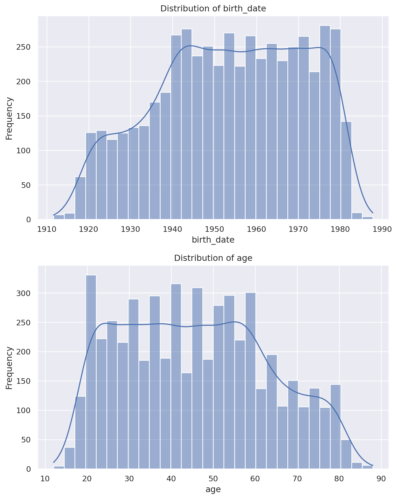
Dispositions
dispositions_df = read_csv("data/disp.csv")
dispositions_df.info()<class 'pandas.core.frame.DataFrame'>
RangeIndex: 5369 entries, 0 to 5368
Data columns (total 4 columns):
# Column Non-Null Count Dtype
--- ------ -------------- -----
0 disp_id 5369 non-null int64
1 client_id 5369 non-null int64
2 account_id 5369 non-null int64
3 type 5369 non-null object
dtypes: int64(3), object(1)
memory usage: 167.9+ KBdispositions_df.head()| disp_id | client_id | account_id | type | |
|---|---|---|---|---|
| 0 | 1 | 1 | 1 | OWNER |
| 1 | 2 | 2 | 2 | OWNER |
| 2 | 3 | 3 | 2 | DISPONENT |
| 3 | 4 | 4 | 3 | OWNER |
| 4 | 5 | 5 | 3 | DISPONENT |
dispositions_df.describe()| disp_id | client_id | account_id | |
|---|---|---|---|
| count | 5369.000000 | 5369.000000 | 5369.000000 |
| mean | 3337.097970 | 3359.011920 | 2767.496927 |
| std | 2770.418826 | 2832.911984 | 2307.843630 |
| min | 1.000000 | 1.000000 | 1.000000 |
| 25% | 1418.000000 | 1418.000000 | 1178.000000 |
| 50% | 2839.000000 | 2839.000000 | 2349.000000 |
| 75% | 4257.000000 | 4257.000000 | 3526.000000 |
| max | 13690.000000 | 13998.000000 | 11382.000000 |
plot_categorical_variables(dispositions_df, ['type'])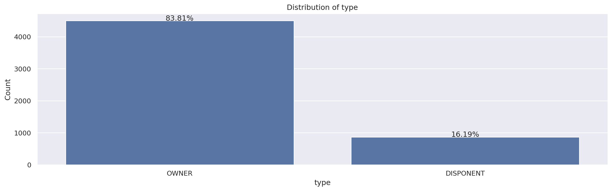
As the goal of this model is to address accounts and not client directly we will focus on the clients which own an account and focus solely on them.
dispositions_df = dispositions_df[dispositions_df['type'] == 'OWNER']Orders
orders_df = read_csv("data/order.csv")
# Translated from Czech to English
# according to https://sorry.vse.cz/~berka/challenge/PAST/index.html
orders_df = remap_values(orders_df, 'k_symbol', {
"POJISTNE": "Insurance_Payment",
"SIPO": "Household",
"LEASING": "Leasing",
"UVER": "Loan_Payment"
})
orders_df['account_to'] = orders_df['account_to'].astype('category')
orders_df = orders_df.rename(columns={'amount': 'debited_amount'})
orders_df.info()<class 'pandas.core.frame.DataFrame'>
RangeIndex: 6471 entries, 0 to 6470
Data columns (total 6 columns):
# Column Non-Null Count Dtype
--- ------ -------------- -----
0 order_id 6471 non-null int64
1 account_id 6471 non-null int64
2 bank_to 6471 non-null object
3 account_to 6471 non-null category
4 debited_amount 6471 non-null float64
5 k_symbol 5092 non-null object
dtypes: category(1), float64(1), int64(2), object(2)
memory usage: 573.9+ KBorders_df.head()| order_id | account_id | bank_to | account_to | debited_amount | k_symbol | |
|---|---|---|---|---|---|---|
| 0 | 29401 | 1 | YZ | 87144583 | 2452.0 | Household |
| 1 | 29402 | 2 | ST | 89597016 | 3372.7 | Loan_Payment |
| 2 | 29403 | 2 | QR | 13943797 | 7266.0 | Household |
| 3 | 29404 | 3 | WX | 83084338 | 1135.0 | Household |
| 4 | 29405 | 3 | CD | 24485939 | 327.0 | NaN |
orders_df.describe()| order_id | account_id | debited_amount | |
|---|---|---|---|
| count | 6471.000000 | 6471.000000 | 6471.000000 |
| mean | 33778.197497 | 2962.302890 | 3280.635698 |
| std | 3737.681949 | 2518.503228 | 2714.475335 |
| min | 29401.000000 | 1.000000 | 1.000000 |
| 25% | 31187.500000 | 1223.000000 | 1241.500000 |
| 50% | 32988.000000 | 2433.000000 | 2596.000000 |
| 75% | 34785.500000 | 3645.500000 | 4613.500000 |
| max | 46338.000000 | 11362.000000 | 14882.000000 |
orders_df.nunique()order_id 6471
account_id 3758
bank_to 13
account_to 6446
debited_amount 4412
k_symbol 4
dtype: int64There appear to be as many order ids as there are rows.
plot_categorical_variables(orders_df, ['k_symbol', 'bank_to'])
plot_numerical_distributions(orders_df, ['debited_amount'])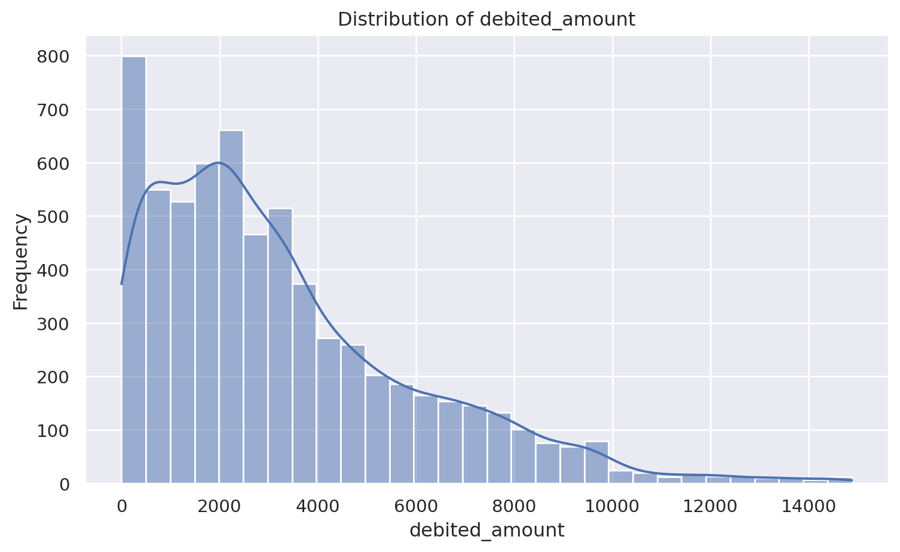
Transactions
# column 8 is the 'bank' column which contains NaNs and must be read as string
transactions_df = read_csv("data/trans.csv", dtypes={8: str})
transactions_df['date'] = pd.to_datetime(transactions_df['date'], format='%y%m%d')
# Translated type, operations and characteristics from Czech to English
# according to https://sorry.vse.cz/~berka/challenge/PAST/index.html
transactions_df = remap_values(transactions_df, 'type', {
"VYBER": "Withdrawal", # Also withdrawal as it is against the documentation present in the dataset
"PRIJEM": "Credit",
"VYDAJ": "Withdrawal"
})
transactions_df = remap_values(transactions_df, 'operation', {
"VYBER KARTOU": "Credit Card Withdrawal",
"VKLAD": "Credit in Cash",
"PREVOD Z UCTU": "Collection from Another Bank",
"VYBER": "Withdrawal in Cash",
"PREVOD NA UCET": "Remittance to Another Bank"
})
transactions_df = remap_values(transactions_df, 'k_symbol', {
"POJISTNE": "Insurance Payment",
"SLUZBY": "Payment on Statement",
"UROK": "Interest Credited",
"SANKC. UROK": "Sanction Interest",
"SIPO": "Household",
"DUCHOD": "Old-age Pension",
"UVER": "Loan Payment"
})
# Set the amount to negative for withdrawals and positive for credits
transactions_df['amount'] = np.where(transactions_df['type'] == "Credit", transactions_df['amount'], -transactions_df['amount'])
transactions_df.rename(columns={'type': 'transaction_type'}, inplace=True)
transactions_df.info()<class 'pandas.core.frame.DataFrame'>
RangeIndex: 1056320 entries, 0 to 1056319
Data columns (total 10 columns):
# Column Non-Null Count Dtype
--- ------ -------------- -----
0 trans_id 1056320 non-null int64
1 account_id 1056320 non-null int64
2 date 1056320 non-null datetime64[ns]
3 transaction_type 1056320 non-null object
4 operation 873206 non-null object
5 amount 1056320 non-null float64
6 balance 1056320 non-null float64
7 k_symbol 521006 non-null object
8 bank 273508 non-null object
9 account 295389 non-null float64
dtypes: datetime64[ns](1), float64(3), int64(2), object(4)
memory usage: 80.6+ MBtransactions_df.head()| trans_id | account_id | date | transaction_type | operation | amount | balance | k_symbol | bank | account | |
|---|---|---|---|---|---|---|---|---|---|---|
| 0 | 695247 | 2378 | 1993-01-01 | Credit | Credit in Cash | 700.0 | 700.0 | NaN | NaN | NaN |
| 1 | 171812 | 576 | 1993-01-01 | Credit | Credit in Cash | 900.0 | 900.0 | NaN | NaN | NaN |
| 2 | 207264 | 704 | 1993-01-01 | Credit | Credit in Cash | 1000.0 | 1000.0 | NaN | NaN | NaN |
| 3 | 1117247 | 3818 | 1993-01-01 | Credit | Credit in Cash | 600.0 | 600.0 | NaN | NaN | NaN |
| 4 | 579373 | 1972 | 1993-01-02 | Credit | Credit in Cash | 400.0 | 400.0 | NaN | NaN | NaN |
transactions_df.describe()| trans_id | account_id | date | amount | balance | account | |
|---|---|---|---|---|---|---|
| count | 1.056320e+06 | 1.056320e+06 | 1056320 | 1.056320e+06 | 1.056320e+06 | 2.953890e+05 |
| mean | 1.335311e+06 | 2.936867e+03 | 1997-01-04 07:29:27.037261952 | 1.866397e+02 | 3.851833e+04 | 4.567092e+07 |
| min | 1.000000e+00 | 1.000000e+00 | 1993-01-01 00:00:00 | -8.740000e+04 | -4.112570e+04 | 0.000000e+00 |
| 25% | 4.302628e+05 | 1.204000e+03 | 1996-01-16 00:00:00 | -3.019000e+03 | 2.240250e+04 | 1.782858e+07 |
| 50% | 8.585065e+05 | 2.434000e+03 | 1997-04-10 00:00:00 | -1.460000e+01 | 3.314340e+04 | 4.575095e+07 |
| 75% | 2.060979e+06 | 3.660000e+03 | 1998-02-28 00:00:00 | 2.000000e+02 | 4.960362e+04 | 7.201341e+07 |
| max | 3.682987e+06 | 1.138200e+04 | 1998-12-31 00:00:00 | 7.481200e+04 | 2.096370e+05 | 9.999420e+07 |
| std | 1.227487e+06 | 2.477345e+03 | NaN | 1.121353e+04 | 2.211787e+04 | 3.066340e+07 |
plot_categorical_variables(transactions_df, ['transaction_type', 'operation', 'k_symbol'])
plot_numerical_distributions(transactions_df, ['date', 'amount', 'balance'])
Looking at the distributions of the transaction table we can see that the count of transactions per year increase over time. So we can conclude that the bank has a growing client base.
However, the other plots are not very useful. For one the transaction amount seems to be very sparse, ranging from values between -80000 and 80000.
The balance distribution also showcases that there are accounts with a negative balance after a transaction, which would only make sense if debt is also included in this value.
According to description of the field balance: “balance after transaction”
# Getting a list of unique years from the dataset
transactions_df['year'] = transactions_df['date'].dt.year
transactions_df['month'] = transactions_df['date'].dt.month
months = ['Jan', 'Feb', 'Mar', 'Apr', 'May', 'Jun', 'Jul', 'Aug', 'Sep', 'Oct', 'Nov', 'Dec']
years = sorted(transactions_df['year'].unique())
# Creating a figure with subplots for each year: one row for each year with two plots (box plot and bar chart)
fig, axs = plt.subplots(len(years) * 2, 1, figsize=(15, 6 * len(years)), sharex=True, gridspec_kw={'height_ratios': [3, 1] * len(years)})
for i, year in enumerate(years):
# Filter transactions for the current year
yearly_transactions = transactions_df[transactions_df['year'] == year]
# Preparing data for the box plot: a list of amounts for each month for the current year
amounts_per_month_yearly = [yearly_transactions[yearly_transactions['month'] == month]['amount'] for month in range(1, 13)]
# Preparing data for the bar chart for the current year
monthly_summary_yearly = yearly_transactions.groupby('month').agg(TotalAmount=('amount', 'sum'), TransactionCount=('amount', 'count')).reset_index()
# Box plot for transaction amounts by month for the current year
axs[i*2].boxplot(amounts_per_month_yearly, patch_artist=True)
# now with seaborn
# sns.boxplot(data=yearly_transactions, x='month', y='amount', ax=axs[i*2])
axs[i*2].set_title(f'Transaction Amounts Per Month in {year} (Box Plot)')
axs[i*2].set_yscale('symlog')
axs[i*2].set_ylabel('Transaction Amounts (log scale)')
axs[i*2].grid(True, which='both')
# Bar chart for transaction count by month for the current year
axs[i*2 + 1].bar(monthly_summary_yearly['month'], monthly_summary_yearly['TransactionCount'], color='tab:red', alpha=0.6)
axs[i*2 + 1].set_ylabel('Transaction Count')
axs[i*2 + 1].grid(True, which='both')
# Setting x-ticks and labels for the last bar chart (shared x-axis for all)
axs[-1].set_xticks(range(1, 13))
axs[-1].set_xticklabels(months)
axs[-1].set_xlabel('Month')
plt.tight_layout()
plt.show()
# Importing required libraries for visualization
import matplotlib.pyplot as plt
import pandas as pd
# Assuming 'transactions' DataFrame already contains 'year' and 'month' columns
# and is ready for visualization
# Getting a list of unique years and defining month labels
years = sorted(transactions_df['year'].unique())
months = ['Jan', 'Feb', 'Mar', 'Apr', 'May', 'Jun', 'Jul', 'Aug', 'Sep', 'Oct', 'Nov', 'Dec']
# Adjusting the figure layout to place visualizations for each year next to each other
fig, axs = plt.subplots(2, len(years), figsize=(40 * len(years) / 2, 30), sharey='row', gridspec_kw={'height_ratios': [3, 1]})
for i, year in enumerate(years):
# Filter transactions for the current year
yearly_transactions = transactions_df[transactions_df['year'] == year]
# Preparing data for the box plot: a list of amounts for each month for the current year
amounts_per_month_yearly = [yearly_transactions[yearly_transactions['month'] == month]['amount'] for month in range(1, 13)]
# Preparing data for the bar chart for the current year
monthly_summary_yearly = yearly_transactions.groupby('month').agg(TotalAmount=('amount', 'sum'), TransactionCount=('amount', 'count')).reset_index()
# Selecting the appropriate axes for multiple or single year scenarios
ax_box = axs[0, i] if len(years) > 1 else axs[0]
ax_bar = axs[1, i] if len(years) > 1 else axs[1]
ax_box.boxplot(amounts_per_month_yearly, patch_artist=True)
ax_box.set_title(f'{year} (Box Plot)')
ax_box.set_yscale('symlog')
ax_box.set_ylabel('Transaction Amounts (log scale)')
ax_box.grid(True, which='both')
ax_bar.bar(monthly_summary_yearly['month'], monthly_summary_yearly['TransactionCount'], color='tab:red', alpha=0.6)
ax_bar.set_ylabel('Transaction Count')
ax_bar.grid(True, which='both')
# Setting common x-ticks and labels for all axes
ax_bar.set_xticks(range(1, 13))
ax_bar.set_xticklabels(months)
# Setting a common x-label for the entire figure
fig.text(0.5, 0.04, 'Month', ha='center')
plt.tight_layout()
plt.show()
negative_balances = transactions_df[transactions_df['balance'] < 0]
plot_numerical_distributions(negative_balances, ['balance', 'amount'])
print(f"Number of transactions with negative balance: {len(negative_balances)}")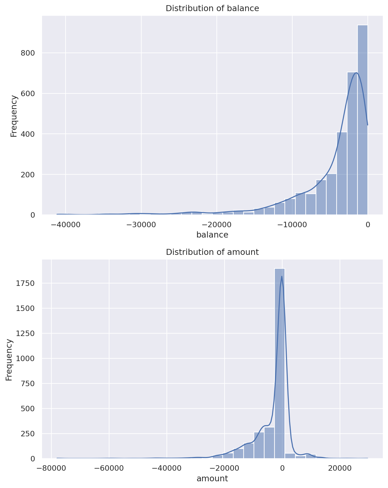
Number of transactions with negative balance: 2999There appear to be 2999 transactions which have a negative balance, therefore after the transaction the account balance was negative. This implies that these accounts are in some kind of debt.
Loans
loans_df = read_csv("data/loan.csv")
loans_df['date'] = pd.to_datetime(loans_df['date'], format='%y%m%d')
loans_df['status'] = loans_df['status'].map({
"A": "Contract finished, no problems",
"B": "Contract finished, loan not paid",
"C": "Contract running, OK thus-far",
"D": "Contract running, client in debt"
})
loans_df.rename(columns={
'date': 'granted_date',
'amount': 'amount',
'duration': 'duration',
'payments': 'monthly_payments',
'status': 'status'
}, inplace=True)
loans_df.info()<class 'pandas.core.frame.DataFrame'>
RangeIndex: 682 entries, 0 to 681
Data columns (total 7 columns):
# Column Non-Null Count Dtype
--- ------ -------------- -----
0 loan_id 682 non-null int64
1 account_id 682 non-null int64
2 granted_date 682 non-null datetime64[ns]
3 amount 682 non-null int64
4 duration 682 non-null int64
5 monthly_payments 682 non-null float64
6 status 682 non-null object
dtypes: datetime64[ns](1), float64(1), int64(4), object(1)
memory usage: 37.4+ KB# todo add some basic eda here
loans_df.head()| loan_id | account_id | granted_date | amount | duration | monthly_payments | status | |
|---|---|---|---|---|---|---|---|
| 0 | 5314 | 1787 | 1993-07-05 | 96396 | 12 | 8033.0 | Contract finished, loan not paid |
| 1 | 5316 | 1801 | 1993-07-11 | 165960 | 36 | 4610.0 | Contract finished, no problems |
| 2 | 6863 | 9188 | 1993-07-28 | 127080 | 60 | 2118.0 | Contract finished, no problems |
| 3 | 5325 | 1843 | 1993-08-03 | 105804 | 36 | 2939.0 | Contract finished, no problems |
| 4 | 7240 | 11013 | 1993-09-06 | 274740 | 60 | 4579.0 | Contract finished, no problems |
loans_df.describe()| loan_id | account_id | granted_date | amount | duration | monthly_payments | |
|---|---|---|---|---|---|---|
| count | 682.000000 | 682.000000 | 682 | 682.000000 | 682.000000 | 682.000000 |
| mean | 6172.466276 | 5824.162757 | 1996-09-29 05:35:43.108504448 | 151410.175953 | 36.492669 | 4190.664223 |
| min | 4959.000000 | 2.000000 | 1993-07-05 00:00:00 | 4980.000000 | 12.000000 | 304.000000 |
| 25% | 5577.500000 | 2967.000000 | 1995-07-04 12:00:00 | 66732.000000 | 24.000000 | 2477.000000 |
| 50% | 6176.500000 | 5738.500000 | 1997-02-06 12:00:00 | 116928.000000 | 36.000000 | 3934.000000 |
| 75% | 6752.500000 | 8686.000000 | 1997-12-12 12:00:00 | 210654.000000 | 48.000000 | 5813.500000 |
| max | 7308.000000 | 11362.000000 | 1998-12-08 00:00:00 | 590820.000000 | 60.000000 | 9910.000000 |
| std | 682.579279 | 3283.512681 | NaN | 113372.406310 | 17.075219 | 2215.830344 |
loans_df.nunique()loan_id 682
account_id 682
granted_date 559
amount 645
duration 5
monthly_payments 577
status 4
dtype: int64It seems as if one account can have at max one loan.
plot_categorical_variables(loans_df, ['duration', 'status'])
The distribution of durations seems to be even.
plot_numerical_distributions(loans_df, ['granted_date'])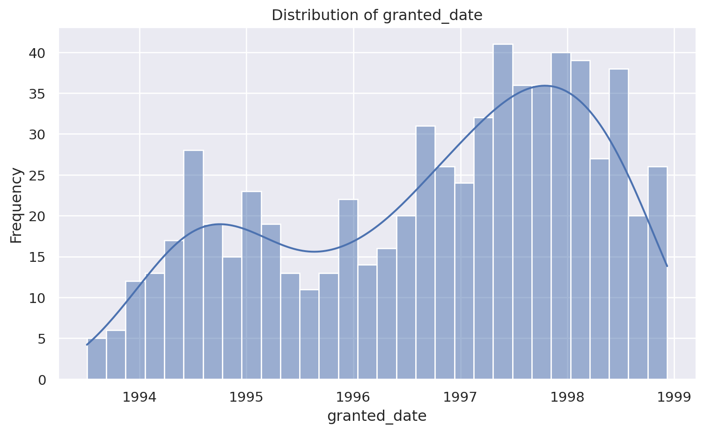
Credit Cards
cards_df = read_csv("data/card.csv")
cards_df['issued'] = pd.to_datetime(cards_df['issued'], format='%y%m%d %H:%M:%S').dt.date
cards_df.info()<class 'pandas.core.frame.DataFrame'>
RangeIndex: 892 entries, 0 to 891
Data columns (total 4 columns):
# Column Non-Null Count Dtype
--- ------ -------------- -----
0 card_id 892 non-null int64
1 disp_id 892 non-null int64
2 type 892 non-null object
3 issued 892 non-null object
dtypes: int64(2), object(2)
memory usage: 28.0+ KBcards_df.head()| card_id | disp_id | type | issued | |
|---|---|---|---|---|
| 0 | 1005 | 9285 | classic | 1993-11-07 |
| 1 | 104 | 588 | classic | 1994-01-19 |
| 2 | 747 | 4915 | classic | 1994-02-05 |
| 3 | 70 | 439 | classic | 1994-02-08 |
| 4 | 577 | 3687 | classic | 1994-02-15 |
cards_df.describe()| card_id | disp_id | |
|---|---|---|
| count | 892.000000 | 892.000000 |
| mean | 480.855381 | 3511.862108 |
| std | 306.933982 | 2984.373626 |
| min | 1.000000 | 9.000000 |
| 25% | 229.750000 | 1387.000000 |
| 50% | 456.500000 | 2938.500000 |
| 75% | 684.250000 | 4459.500000 |
| max | 1247.000000 | 13660.000000 |
plot_categorical_variables(cards_df, ['type'])
plot_numerical_distributions(cards_df, ['issued'])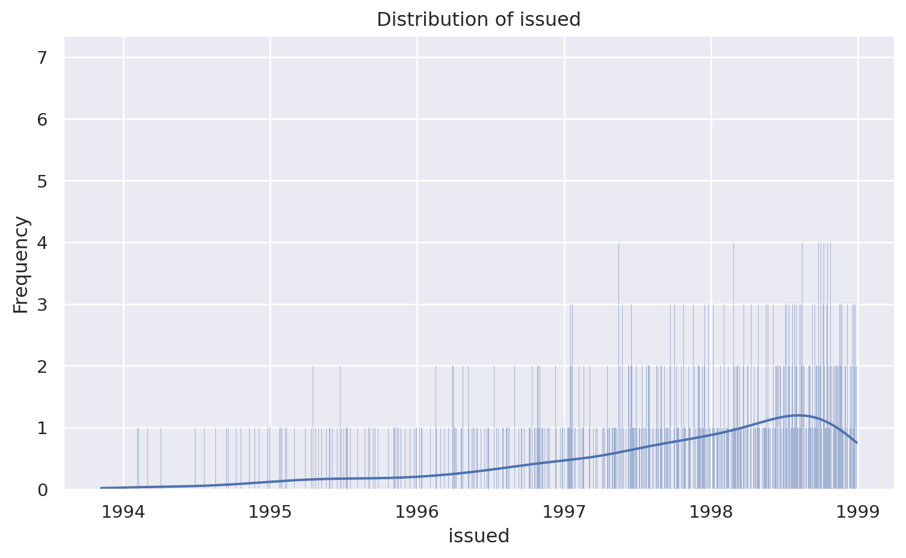
Demographic data
districts_df = read_csv("data/district.csv")
# Rename columns
# according to https://sorry.vse.cz/~berka/challenge/PAST/index.html
districts_df.rename(columns={
'A1': 'district_id',
'A2': 'district_name',
'A3': 'region',
'A4': 'inhabitants',
'A5': 'small_municipalities',
'A6': 'medium_municipalities',
'A7': 'large_municipalities',
'A8': 'huge_municipalities',
'A9': 'cities',
'A10': 'ratio_urban_inhabitants',
'A11': 'average_salary',
'A12': 'unemployment_rate_1995',
'A13': 'unemployment_rate_1996',
'A14': 'entrepreneurs_per_1000_inhabitants',
'A15': 'crimes_committed_1995',
'A16': 'crimes_committed_1996'
}, inplace=True)
for col in ['unemployment_rate_1995', 'unemployment_rate_1996', 'crimes_committed_1995', 'crimes_committed_1996']:
districts_df[col] = pd.to_numeric(districts_df[col], errors='coerce')
districts_df.info()<class 'pandas.core.frame.DataFrame'>
RangeIndex: 77 entries, 0 to 76
Data columns (total 16 columns):
# Column Non-Null Count Dtype
--- ------ -------------- -----
0 district_id 77 non-null int64
1 district_name 77 non-null object
2 region 77 non-null object
3 inhabitants 77 non-null int64
4 small_municipalities 77 non-null int64
5 medium_municipalities 77 non-null int64
6 large_municipalities 77 non-null int64
7 huge_municipalities 77 non-null int64
8 cities 77 non-null int64
9 ratio_urban_inhabitants 77 non-null float64
10 average_salary 77 non-null int64
11 unemployment_rate_1995 76 non-null float64
12 unemployment_rate_1996 77 non-null float64
13 entrepreneurs_per_1000_inhabitants 77 non-null int64
14 crimes_committed_1995 76 non-null float64
15 crimes_committed_1996 77 non-null int64
dtypes: float64(4), int64(10), object(2)
memory usage: 9.8+ KBIt appears as if there is 1 null value for unemployment rate in 1995 and crimes committed in 1995.
# todo add some basic eda here
districts_df.head()| district_id | district_name | region | inhabitants | small_municipalities | medium_municipalities | large_municipalities | huge_municipalities | cities | ratio_urban_inhabitants | average_salary | unemployment_rate_1995 | unemployment_rate_1996 | entrepreneurs_per_1000_inhabitants | crimes_committed_1995 | crimes_committed_1996 | |
|---|---|---|---|---|---|---|---|---|---|---|---|---|---|---|---|---|
| 0 | 1 | Hl.m. Praha | Prague | 1204953 | 0 | 0 | 0 | 1 | 1 | 100.0 | 12541 | 0.29 | 0.43 | 167 | 85677.0 | 99107 |
| 1 | 2 | Benesov | central Bohemia | 88884 | 80 | 26 | 6 | 2 | 5 | 46.7 | 8507 | 1.67 | 1.85 | 132 | 2159.0 | 2674 |
| 2 | 3 | Beroun | central Bohemia | 75232 | 55 | 26 | 4 | 1 | 5 | 41.7 | 8980 | 1.95 | 2.21 | 111 | 2824.0 | 2813 |
| 3 | 4 | Kladno | central Bohemia | 149893 | 63 | 29 | 6 | 2 | 6 | 67.4 | 9753 | 4.64 | 5.05 | 109 | 5244.0 | 5892 |
| 4 | 5 | Kolin | central Bohemia | 95616 | 65 | 30 | 4 | 1 | 6 | 51.4 | 9307 | 3.85 | 4.43 | 118 | 2616.0 | 3040 |
districts_df.describe()| district_id | inhabitants | small_municipalities | medium_municipalities | large_municipalities | huge_municipalities | cities | ratio_urban_inhabitants | average_salary | unemployment_rate_1995 | unemployment_rate_1996 | entrepreneurs_per_1000_inhabitants | crimes_committed_1995 | crimes_committed_1996 | |
|---|---|---|---|---|---|---|---|---|---|---|---|---|---|---|
| count | 77.000000 | 7.700000e+01 | 77.000000 | 77.000000 | 77.000000 | 77.000000 | 77.000000 | 77.000000 | 77.000000 | 76.000000 | 77.000000 | 77.000000 | 76.000000 | 77.000000 |
| mean | 39.000000 | 1.338849e+05 | 48.623377 | 24.324675 | 6.272727 | 1.727273 | 6.259740 | 63.035065 | 9031.675325 | 3.119342 | 3.787013 | 116.129870 | 4850.315789 | 5030.831169 |
| std | 22.371857 | 1.369135e+05 | 32.741829 | 12.780991 | 4.015222 | 1.008338 | 2.435497 | 16.221727 | 790.202347 | 1.665568 | 1.908480 | 16.608773 | 9888.951933 | 11270.796786 |
| min | 1.000000 | 4.282100e+04 | 0.000000 | 0.000000 | 0.000000 | 0.000000 | 1.000000 | 33.900000 | 8110.000000 | 0.290000 | 0.430000 | 81.000000 | 818.000000 | 888.000000 |
| 25% | 20.000000 | 8.585200e+04 | 22.000000 | 16.000000 | 4.000000 | 1.000000 | 5.000000 | 51.900000 | 8512.000000 | 1.787500 | 2.310000 | 105.000000 | 2029.750000 | 2122.000000 |
| 50% | 39.000000 | 1.088710e+05 | 49.000000 | 25.000000 | 6.000000 | 2.000000 | 6.000000 | 59.800000 | 8814.000000 | 2.825000 | 3.600000 | 113.000000 | 2932.000000 | 3040.000000 |
| 75% | 58.000000 | 1.390120e+05 | 71.000000 | 32.000000 | 8.000000 | 2.000000 | 8.000000 | 73.500000 | 9317.000000 | 3.890000 | 4.790000 | 126.000000 | 4525.500000 | 4595.000000 |
| max | 77.000000 | 1.204953e+06 | 151.000000 | 70.000000 | 20.000000 | 5.000000 | 11.000000 | 100.000000 | 12541.000000 | 7.340000 | 9.400000 | 167.000000 | 85677.000000 | 99107.000000 |
districts_df.nunique()district_id 77
district_name 77
region 8
inhabitants 77
small_municipalities 53
medium_municipalities 36
large_municipalities 17
huge_municipalities 6
cities 11
ratio_urban_inhabitants 70
average_salary 76
unemployment_rate_1995 70
unemployment_rate_1996 73
entrepreneurs_per_1000_inhabitants 44
crimes_committed_1995 75
crimes_committed_1996 76
dtype: int64plot_numerical_distributions(districts_df, ['crimes_committed_1995'])
plot_categorical_variables(districts_df, ['region'])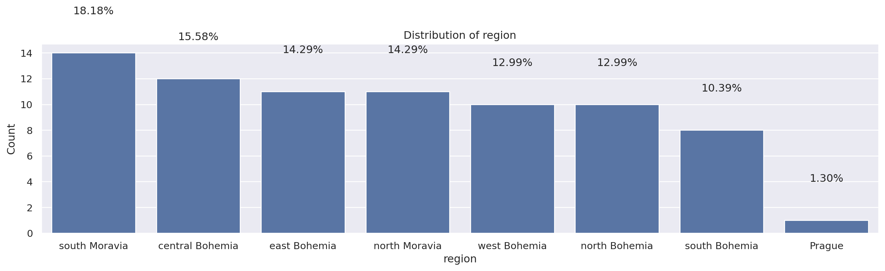
We need to differentiate between the domicile of the client and account, as they can be different.
Relationships
Following the documentation of the dataset, there are multiple relationships that need to be validated. https://sorry.vse.cz/~berka/challenge/PAST/index.html
The ERD according to the descriptions on https://sorry.vse.cz/~berka/challenge/PAST/index.html
![](https://mermaid.ink/img/pako:eNqtV1Fv4jgQ_itWXu6l7SZ0gQatTsqGdhddCxVQrXSqFJnEgLWJnbOd7bGl__3GTgA3JGyvWh7ajPPNZ898nrHz7MQ8Ic7AIWJI8Urg7JEh-AVhOHkYz9FzaeqfVIKyFcJxzAumIpqg-7_QoxOUNhoNH50jcEL1Q2zQNxo9rAZq8AQrUv45EIaCYEU5Q0MYb-BeCvJPQVi8AZ-RlAVmMUE3u8Gdw0v5L7wdXTeGE6eUWNGExmxa3YIKtY5YkS2IAOBnbbYt7S1hVwsbjmb3k9loPpqMG1YHRPl-bUCSc0lNThqzfYjlpjWWYxVvfqmi2uRamMkTI-LDgySiFsNkOryeNqyei4SI_fIn2voNq1lg9j1SHGBTEtPcxPgZxk7w1tAVve2wTDlWCGdmWkg1WVBFEhRkdWDF_D2Sm2zBU8De402mWcM1FjhWRNCfZt_WkjSfBuNZELYIrQRmcp-qubaAq1XptyXMriqbsmXXVjJD3SVUffhG1ToR-AmnDVCeE1EW52vmO2gmJ9JqQ49TW4IXODWVDCVWPQVLSCqyfE_rYU_SpkltOxkVhYLt_YudZAFrm6hS-XYSNMkLkbG9urdg_C5ZDdcXiFjv1rqutewb7HHaKbxMir2cBjWs7GO2vNztEpB3nKl1ukFVAciGgKTCqpA71pmx6p05mA6b-jIWyaErg9F6wOR2lz3dIHc7XNPN4fkoqxTOEUjkbsbSstN66Nrz6SicN7fsfe-_P3HkVXCGM2KDxmA3wARZlfJMzUNdP8YjvowoW2PoW7iUZ8wvEF-i0WGw2SsrGIXOiFNIHJHRE9S9zRSlKuq6rtb7FRB9QjD8PkpwhJ4ceb7vH_PCy3P95n3UHbfk9hu59dtz_93kKxV5wNCQjD_NeDNrXEL2ioTGPi4tU3LaoRAL3S5eqfmgx2wx0VTDG8r9B7TmFYkkdE-h70ZBOYBmZuDYoWAky1NuajiCNZDI7-oJrWE9F0F_-N03efdavHvN6QGEILkgjBRCRnCwmBzXwr-2QQhAyGvPN88yqqAhRrGgGeho4gnNcz2IU14926tndYBaD9huz8_58_7KPDDtLsa6I4_2lVpHVxfSgSlpSROY5ADeUVVY-46oHQIpeUzNBPqU3nlVlP_PyYZpz-227Mja5SuWLSsqb3wa8wUk0bK3Ie1rTxlsDNfCZvS2PD4Hpv8y9BW2ssY5Z05GRIZpAt8ppuE-OmpNdJ_U0IQscZGaI-0FoLhQfLZhsTNQoiBnTpHrzl593DiDJU4ljOaY_c15tgPpGw8Xd-WnkPkiMhBn8Oz86wyuOhf9bsf96Lndvuu5ff_M2TgDz-1ddK763qXvel237131X86cn4bUvbi67PU6Xt_z3Y--e9ntv_wHEyE3kA?type=png.png)
This ERD shows how the data appears in the dataset:
![](https://mermaid.ink/img/pako:eNqtV99P2zAQ_lesvOyFbjCJSq2mSSHlRzRoUVq0F6TITdzWIrEz2xnqgP99ZydNTeIUhOgD5JzvPvvufJ-dJy_hKfHGHhETitcC5_cMwc8PgtnddIGeKlP_pBKUrRFOEl4yFdMU3f5C955f2Sic3HsdcEr1Q2LQFxo9qQda8BQrUv3ZEwaCYEU5QxMYd3CvBPlTEpZswSeUssQsIehiN7hzeKn-BdfhuTOcJKPEiiYwpmt1SyrUJmZlviQCgGfa7Fvae8KuFzYJ57ezebgIZ1PH6oCoaNYGJAWX1OTEme19LBe9sXSrePFmFdW20IWZPTIivt1JIloxzKLJeeRYPRcpEc3yZ9r6hNUsMXuIFQdYRBJamBjPYOwAbwtd09sOq4xjhXBupoVUkyVVJEV-3gbWzA-x3OZLngH2Fm9zzRpssMCJIoL-M_u2laRF5E_nftBTaCUwk02qFtoCrt5Kvy9hdlfZlD27ti4z9F1K1bffVG1SgR9x5oDygoiqOV8z34CYHEirDe2mtgIvcWY6GVqsfvJXkFRk-R6uhz1JX01a28lUUSjY3m_sJAvY2kR1la9nvqu8EBlrqnsNxmeV1XBdQsR6t7br2sq-wXbTTuFlWjblNKhJbXfZimq3S0DecKY22RbVDSAdAUmFVSl3rHNjtZXZjyYuXcYi3asyGL0HTGGr7GGB3O1wTbeA505WKZwjkMjdjJVlp3Wv2osoDBZuyW60__bAkVfDGc6JDZqC7YAJsq7KE5mHdv0Yj_kqpmyDQbdwVZ4p_4r4CoX7QbdXXjIKyogzSByR8SP0vc0UZyo-PT7W9X4FRD8QDH-MEhxBk-OT0WjU5YWXA_3mY9TfjyvukZNbvx2MPky-VvEJMDiS8dOMu1mTCtJUJDB2t7VMy2mHUiy1XLyq5p0es4uJIg13tPtfkOY1iSWop9B3I78aQHMz0HUoGcmLjJsejmENJB6d6gmtYT0XQV9Gp-_yHvZ4D93pAYQghSCMlELGcLCYHLfCP7dBCEDopD_fPM-pAkGME0FzqKOJJzDP7SAOeQ1tr6GlAC0NeH4eDPhTc2UeG7lLsFbksOnUNrq-kI5NS0uawiR78I6qxtp3RO3gS8kTaibQp_TOq6bUTs_P73WyYbWnUWTtcoVlz4qqG5_GXEJJdNn7kPa1pwo2gWuhEw1Tm-NzbPSXoSvYyhrnHXk5ETmmKXynGMG999SGaJ3U0JSscJmZI-0FoLhUfL5liTdWoiRHXlloZa8_brzxCmcSRvUVh4ub6tsn4WxF197LfwBRISI?type=png.png)
# Verify 1:1 relationships between CLIENT, LOAN and DISPOSITION
assert dispositions_df['client_id'].is_unique, "Each client_id should appear exactly once in the DISPOSITION DataFrame."
assert loans_df['account_id'].is_unique, "Each account_id should appear exactly once in the LOAN DataFrame."
# Verify 1:M relationships between ACCOUNT and DISPOSITION
#assert dispositions['account_id'].is_unique == False, "An account_id should appear more than once in the DISPOSITION DataFrame."
assert dispositions_df['account_id'].is_unique == True, "An account_id should appear once in the DISPOSITION DataFrame."
# TODO check if in accordance to decision to remove disponents from dispositions
# Verify each district_id in ACCOUNT and CLIENT exists in DISTRICT
assert set(accounts_df['district_id']).issubset(
set(districts_df['district_id'])), "All district_ids in ACCOUNT should exist in DISTRICT."
assert set(clients_df['district_id']).issubset(
set(districts_df['district_id'])), "All district_ids in CLIENT should exist in DISTRICT."
# Verify each account_id in DISPOSITION, ORDER, TRANSACTION, and LOAN exists in ACCOUNT
assert set(dispositions_df['account_id']).issubset(
set(accounts_df['account_id'])), "All account_ids in DISPOSITION should exist in ACCOUNT."
assert set(orders_df['account_id']).issubset(
set(accounts_df['account_id'])), "All account_ids in ORDER should exist in ACCOUNT."
assert set(transactions_df['account_id']).issubset(
set(accounts_df['account_id'])), "All account_ids in TRANSACTION should exist in ACCOUNT."
assert set(loans_df['account_id']).issubset(
set(accounts_df['account_id'])), "All account_ids in LOAN should exist in ACCOUNT."
# Verify each client_id in DISPOSITION exists in CLIENT
assert set(dispositions_df['client_id']).issubset(
set(clients_df['client_id'])), "All client_ids in DISPOSITION should exist in CLIENT."
# Verify each disp_id in CARD exists in DISPOSITION
assert set(cards_df['disp_id']).issubset(set(dispositions_df['disp_id'])), "All disp_ids in CARD should exist in DISPOSITION."Non-transactional Data
orders_pivot_df = orders_df.pivot_table(index='account_id',
columns='k_symbol',
values='debited_amount',
aggfunc='sum',
fill_value=0)
orders_pivot_df.columns = [f'k_symbol_debited_sum_{col.lower()}' for col in orders_pivot_df.columns]
# TODO: find something better than this
orders_pivot_df = orders_pivot_df.reset_index() # Use created index as account_id
orders_pivot_df.head()| account_id | k_symbol_debited_sum_household | k_symbol_debited_sum_insurance_payment | k_symbol_debited_sum_leasing | k_symbol_debited_sum_loan_payment | k_symbol_debited_sum_na | |
|---|---|---|---|---|---|---|
| 0 | 1 | 2452.0 | 0.0 | 0.0 | 0.0 | 0.0 |
| 1 | 2 | 7266.0 | 0.0 | 0.0 | 3372.7 | 0.0 |
| 2 | 3 | 1135.0 | 3539.0 | 0.0 | 0.0 | 327.0 |
| 3 | 4 | 3363.0 | 0.0 | 0.0 | 0.0 | 0.0 |
| 4 | 5 | 2668.0 | 0.0 | 0.0 | 0.0 | 0.0 |
def merge_non_transactional_data(clients, districts, dispositions, accounts, orders, loans, cards):
# Rename district_id for clarity in clients and accounts DataFrames
clients = clients.rename(columns={'district_id': 'client_district_id'})
accounts = accounts.rename(columns={'district_id': 'account_district_id'})
# Prepare districts dataframe for merge with prefix for clients and accounts
districts_client_prefixed = districts.add_prefix('client_')
districts_account_prefixed = districts.add_prefix('account_')
# Merge district information for clients and accounts with prefixed columns
clients_with_districts = pd.merge(clients, districts_client_prefixed, left_on='client_district_id', right_on='client_district_id', how='left')
accounts_with_districts = pd.merge(accounts, districts_account_prefixed, left_on='account_district_id', right_on='account_district_id', how='left')
# Merge cards with dispositions and prefix card-related columns to avoid confusion
cards_prefixed = cards.add_prefix('card_')
dispositions_with_cards = pd.merge(dispositions, cards_prefixed, left_on='disp_id', right_on='card_disp_id', how='left')
# Merge clients (with district info) with dispositions and cards
# Assuming dispositions might have columns that overlap with clients, prefix those if necessary
clients_dispositions_cards = pd.merge(dispositions_with_cards, clients_with_districts, on='client_id', how='left')
# Merge the above with accounts (with district info) on account_id
accounts_clients_cards = pd.merge(accounts_with_districts, clients_dispositions_cards, on='account_id', how='left')
# Merge orders DataFrame, assuming orders might contain columns that could overlap, prefix as needed
orders_prefixed = orders.add_prefix('order_')
comprehensive_df_with_orders = pd.merge(accounts_clients_cards, orders_prefixed, left_on='account_id', right_on='order_account_id', how='left')
# Merge loans with the comprehensive dataframe (now including orders) on account_id
# Prefix loan-related columns to maintain clarity
loans_prefixed = loans.add_prefix('loan_')
final_df = pd.merge(comprehensive_df_with_orders, loans_prefixed, left_on='account_id', right_on='loan_account_id', how='left')
final_df['account_created'] = pd.to_datetime(final_df['account_created'])
final_df['card_issued'] = pd.to_datetime(final_df['card_issued'])
final_df['has_card'] = final_df['card_issued'].notna()
return final_df
non_transactional_df = merge_non_transactional_data(clients_df, districts_df, dispositions_df, accounts_df, orders_pivot_df, loans_df, cards_df)
non_transactional_df.info()<class 'pandas.core.frame.DataFrame'>
RangeIndex: 4500 entries, 0 to 4499
Data columns (total 59 columns):
# Column Non-Null Count Dtype
--- ------ -------------- -----
0 account_id 4500 non-null int64
1 account_district_id 4500 non-null int64
2 account_frequency 4500 non-null object
3 account_created 4500 non-null datetime64[ns]
4 account_district_name 4500 non-null object
5 account_region 4500 non-null object
6 account_inhabitants 4500 non-null int64
7 account_small_municipalities 4500 non-null int64
8 account_medium_municipalities 4500 non-null int64
9 account_large_municipalities 4500 non-null int64
10 account_huge_municipalities 4500 non-null int64
11 account_cities 4500 non-null int64
12 account_ratio_urban_inhabitants 4500 non-null float64
13 account_average_salary 4500 non-null int64
14 account_unemployment_rate_1995 4452 non-null float64
15 account_unemployment_rate_1996 4500 non-null float64
16 account_entrepreneurs_per_1000_inhabitants 4500 non-null int64
17 account_crimes_committed_1995 4452 non-null float64
18 account_crimes_committed_1996 4500 non-null int64
19 disp_id 4500 non-null int64
20 client_id 4500 non-null int64
21 type 4500 non-null object
22 card_card_id 892 non-null float64
23 card_disp_id 892 non-null float64
24 card_type 892 non-null object
25 card_issued 892 non-null datetime64[ns]
26 client_district_id 4500 non-null int64
27 sex 4500 non-null object
28 birth_date 4500 non-null datetime64[ns]
29 age 4500 non-null int64
30 client_district_name 4500 non-null object
31 client_region 4500 non-null object
32 client_inhabitants 4500 non-null int64
33 client_small_municipalities 4500 non-null int64
34 client_medium_municipalities 4500 non-null int64
35 client_large_municipalities 4500 non-null int64
36 client_huge_municipalities 4500 non-null int64
37 client_cities 4500 non-null int64
38 client_ratio_urban_inhabitants 4500 non-null float64
39 client_average_salary 4500 non-null int64
40 client_unemployment_rate_1995 4448 non-null float64
41 client_unemployment_rate_1996 4500 non-null float64
42 client_entrepreneurs_per_1000_inhabitants 4500 non-null int64
43 client_crimes_committed_1995 4448 non-null float64
44 client_crimes_committed_1996 4500 non-null int64
45 order_account_id 3758 non-null float64
46 order_k_symbol_debited_sum_household 3758 non-null float64
47 order_k_symbol_debited_sum_insurance_payment 3758 non-null float64
48 order_k_symbol_debited_sum_leasing 3758 non-null float64
49 order_k_symbol_debited_sum_loan_payment 3758 non-null float64
50 order_k_symbol_debited_sum_na 3758 non-null float64
51 loan_loan_id 682 non-null float64
52 loan_account_id 682 non-null float64
53 loan_granted_date 682 non-null datetime64[ns]
54 loan_amount 682 non-null float64
55 loan_duration 682 non-null float64
56 loan_monthly_payments 682 non-null float64
57 loan_status 682 non-null object
58 has_card 4500 non-null bool
dtypes: bool(1), datetime64[ns](4), float64(21), int64(24), object(9)
memory usage: 2.0+ MBnon_transactional_df.to_csv("./data/non_transactional.csv")EDA
Card Holders
plt.figure(figsize=(10, 6))
plt.title('Number of Clients by Card Type')
sns.barplot(x=['No Card', 'Classic/Gold Card Holders', 'Junior Card Holders'], y=[non_transactional_df['card_type'].isna().sum(), non_transactional_df['card_type'].isin(['gold', 'classic']).sum(), non_transactional_df['card_type'].eq('junior').sum()])
# ensure that the number of clients is shown on the bars
for i, v in enumerate([non_transactional_df['card_type'].isna().sum(), non_transactional_df['card_type'].isin(['gold', 'classic']).sum(), non_transactional_df['card_type'].eq('junior').sum()]):
plt.text(i, v + 10, str(v), ha='center', va='bottom')
plt.show()
Looking at the distribution of card holders in general we can see that the most clients are not in a possession of a credit card.
plt.figure(figsize=(10, 6))
plt.title(f'Distribution of Age for Junior Card Holders\n total count = {len(non_transactional_df[non_transactional_df["card_type"] == "junior"])}')
sns.histplot(non_transactional_df[non_transactional_df['card_type'] == 'junior']['age'], kde=True, bins=30)
plt.xlabel('Age of Client (presumably in 1999)')
plt.show()
Looking at the age distribution of Junior Card holders paints a picture on this group, however only looking at the current age may be misleading as we need to understand how old they were when the card was issued to determine if they could have been eligble for a Classic/Gold card (at least 18 when the card was issued).
non_transactional_df['card_issued'] = pd.to_datetime(non_transactional_df['card_issued'])
non_transactional_df['age_at_card_issuance'] = non_transactional_df['card_issued'] - non_transactional_df['birth_date']
non_transactional_df['age_at_card_issuance'] = non_transactional_df['age_at_card_issuance'].dt.days // 365
plt.figure(figsize=(10, 6))
plt.title(f'Distribution of Age at Card Issuance for Junior Card Holders\n total count = {len(non_transactional_df[non_transactional_df["card_type"] == "junior"])}')
sns.histplot(non_transactional_df[non_transactional_df['card_type'] == 'junior']['age_at_card_issuance'], kde=True, bins=30)
plt.xlabel('Age at Card Issuance')
plt.show()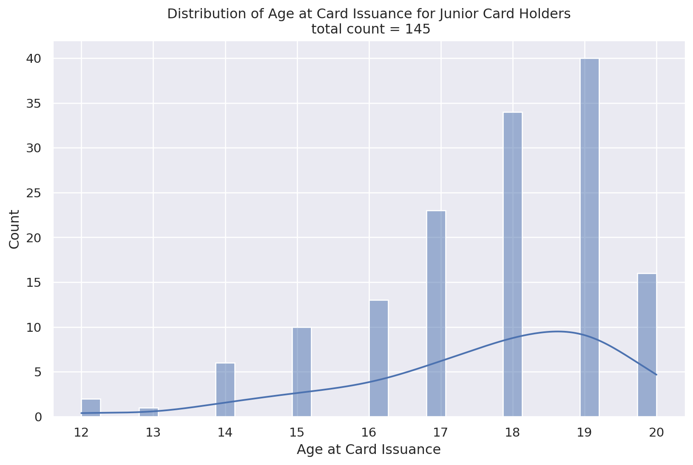
Here we can see that roughly 1/3 of the Junior Card holders were not of legal age (assuming legal age is 18) when receiving their Junior Card.
plt.figure(figsize=(10, 6))
plt.title(f'Distribution of Age at Card Issuance for All Card Types\n total count = {len(non_transactional_df)}')
sns.histplot(non_transactional_df[non_transactional_df['card_type'] == 'junior']['age_at_card_issuance'], kde=True, bins=10, color='blue', label='Junior Card Holders')
sns.histplot(non_transactional_df[non_transactional_df['card_type'] != 'junior']['age_at_card_issuance'], kde=True, bins=30, color='red', label='Non-Junior Card Holders')
plt.legend()
plt.xlabel('Age at Card Issuance')
plt.show()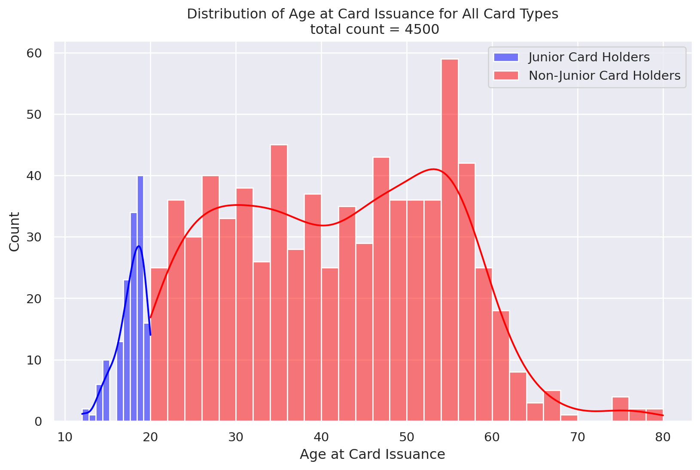
Comparing the age at issue date between Junior and non-Junior (Classic/Gold) card holders shows that there is no overlap between the two groups, which makes intutively sense.
Therefore removing the subset of Junior Cards seems as valid as there is no reason to believe that there are Junior Cards issued wrongly, the subset being relatively small compared to the remaining issued cards and the fact that our target is specifically Classic/Gold Card owners.
before_len = len(non_transactional_df)
non_transactional_df = non_transactional_df[non_transactional_df['card_type'] != 'junior']
data_reduction["Junior Card Holders"] = -(before_len - len(non_transactional_df))
del before_lenLooking at the age distribution of Junior card holders and their occurence in comparison it seems valid to remove them as they are not the target group and make up a small subset of the complete dataset.
Time factors on Card Status
The time between creating an account and issuing a card may also be important when filtering customers based on their history. We should avoid filtering out potentially interesting periods and understand how the timespans between account creation and card issuance are distributed.
non_transactional_w_cards_df = non_transactional_df[non_transactional_df['card_issued'].notna() & non_transactional_df['account_created'].notna()]
non_transactional_w_cards_df['duration_days'] = (non_transactional_w_cards_df['card_issued'] - non_transactional_w_cards_df['account_created']).dt.days
plt.figure(figsize=(12, 8))
sns.histplot(non_transactional_w_cards_df['duration_days'], bins=50, edgecolor='black', kde=True)
plt.title('Distribution of Duration Between Account Creation and Card Issuance')
plt.xlabel('Duration in Days')
plt.ylabel('Frequency')
plt.tight_layout()
plt.show()/tmp/ipykernel_1880/3937256510.py:2: SettingWithCopyWarning:
A value is trying to be set on a copy of a slice from a DataFrame.
Try using .loc[row_indexer,col_indexer] = value instead
See the caveats in the documentation: https://pandas.pydata.org/pandas-docs/stable/user_guide/indexing.html#returning-a-view-versus-a-copy
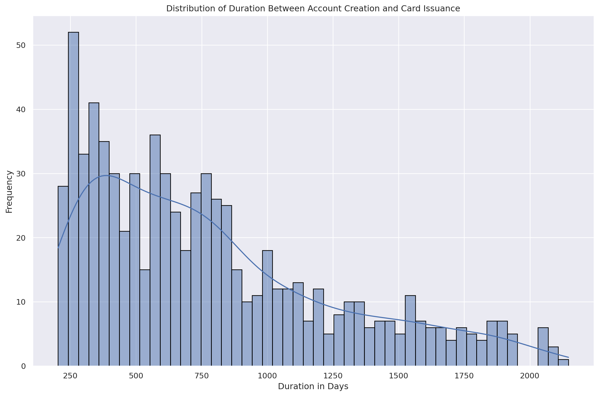
The histogram displays a distribution with multiple peaks, indicating that there are several typical time frames for card issuance after account creation. The highest peak occurs within the first 250 days, suggesting that a significant number of cards are issued during this period. The frequency decreases as duration increases, with noticeable peaks that may correspond to specific processing batch cycles or policy changes over time. The distribution also has a long tail, suggesting that in some cases, card issuance can take a very long time.
Analyzing the length of time a client has been with the bank in relation to their account creation date and card ownership can provide valuable insights for a bank’s customer relationship management and product targeting strategies. Long-standing clients may exhibit different banking behaviors, such as product adoption and loyalty patterns, compared to newer clients.
max_account_creation_date = non_transactional_df['card_issued'].max()
non_transactional_df['client_tenure_years_relative'] = (max_account_creation_date - non_transactional_df['account_created']).dt.days / 365.25
plt.figure(figsize=(10, 6))
ax = sns.histplot(
data=non_transactional_df,
x='client_tenure_years_relative',
hue='has_card',
multiple='stack',
binwidth=1,
stat="percent"
)
# Call the function to add labels
add_percentage_labels(ax, non_transactional_df['has_card'].unique())
# Additional plot formatting
plt.title('Client Tenure Relative to Latest Card Issued Date and Card Ownership')
plt.xlabel('Client Tenure (Years, Relative to Latest Card Issuance)')
plt.ylabel('Percentage of Clients')
plt.tight_layout()
# Display the plot
plt.show()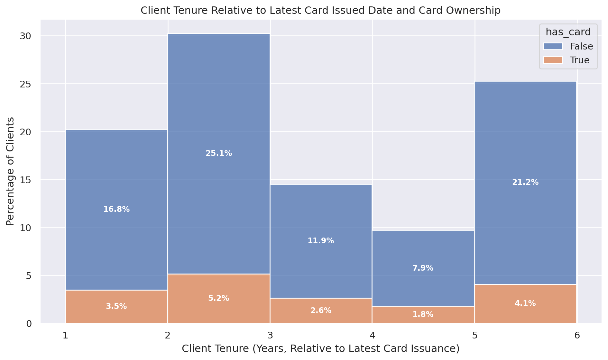
The bar chart shows the tenure of clients in years, categorized by whether they own a credit card (True) or not (False). Each bar represents the percentage of clients within a specific tenure range, allowing for comparison of the distribution of card ownership among clients with different lengths of association with the bank.
Demographics
Using the available demographic data, we can investigate the potential correlation between demographic data and card status. The average salary may indicate a difference between cardholders and non-cardholders, as it is reasonable to assume that cardholders have a higher average salary than non-cardholders.
plt.figure(figsize=(10, 6))
sns.boxplot(x='has_card', y='client_average_salary', data=non_transactional_df)
plt.title("Average Salary in Client's Region by Card Ownership")
plt.xlabel('Has Card')
plt.ylabel('Average Salary')
plt.xticks([0, 1], ['No Card Owner', 'Card Owner'])
plt.tight_layout()
plt.show()
The box plot compares the average salaries of clients who own a credit card with those who do not. Both groups have a substantial overlap in salary ranges, suggesting that while there might be a trend for card owners to have higher salaries, the difference is not significant. The median salary for card owners is slightly higher than that for non-card owners, as indicated by the median line within the respective boxes.
Both distributions have outliers on the higher end, indicating that some individuals have salaries significantly above the average in both groups. However, these outliers do not dominate the general trend.
It should also be noted that this plot assumes that the average salary of the region’s clients remained constant over the years, which is unlikely to be true.
The group of bar charts represents the distribution of credit card ownership across various demographics, showing the percentage of clients with and without cards within different age groups, sexes, and regions.
non_transactional_df['age_group'] = pd.cut(non_transactional_df['age'], bins=[0, 25, 40, 55, 70, 100], labels=['<25', '25-40', '40-55', '55-70', '>70'])
plt.figure(figsize=(15, 15))
# Age Group
plt.subplot(3, 1, 1)
age_group_counts = non_transactional_df.groupby(['age_group', 'has_card']).size().unstack(fill_value=0)
age_group_percentages = (age_group_counts.T / age_group_counts.sum(axis=1)).T * 100
age_group_plot = age_group_percentages.plot(kind='bar', stacked=True, ax=plt.gca())
age_group_plot.set_title('Card Ownership by Age Group')
age_group_plot.set_ylabel('Percentage')
add_percentage_labels(age_group_plot, non_transactional_df['has_card'].unique())
# Sex
plt.subplot(3, 1, 2)
sex_counts = non_transactional_df.groupby(['sex', 'has_card']).size().unstack(fill_value=0)
sex_percentages = (sex_counts.T / sex_counts.sum(axis=1)).T * 100
sex_plot = sex_percentages.plot(kind='bar', stacked=True, ax=plt.gca())
sex_plot.set_title('Card Ownership by Sex')
sex_plot.set_ylabel('Percentage')
add_percentage_labels(sex_plot, non_transactional_df['has_card'].unique())
# Client Region
plt.subplot(3, 1, 3)
region_counts = non_transactional_df.groupby(['client_region', 'has_card']).size().unstack(fill_value=0)
region_percentages = (region_counts.T / region_counts.sum(axis=1)).T * 100
region_plot = region_percentages.plot(kind='bar', stacked=True, ax=plt.gca())
region_plot.set_title('Card Ownership by Client Region')
region_plot.set_ylabel('Percentage')
region_plot.tick_params(axis='x', rotation=45)
add_percentage_labels(region_plot, non_transactional_df['has_card'].unique())
plt.tight_layout()
plt.show()/tmp/ipykernel_1880/1112744898.py:7: FutureWarning:
The default of observed=False is deprecated and will be changed to True in a future version of pandas. Pass observed=False to retain current behavior or observed=True to adopt the future default and silence this warning.
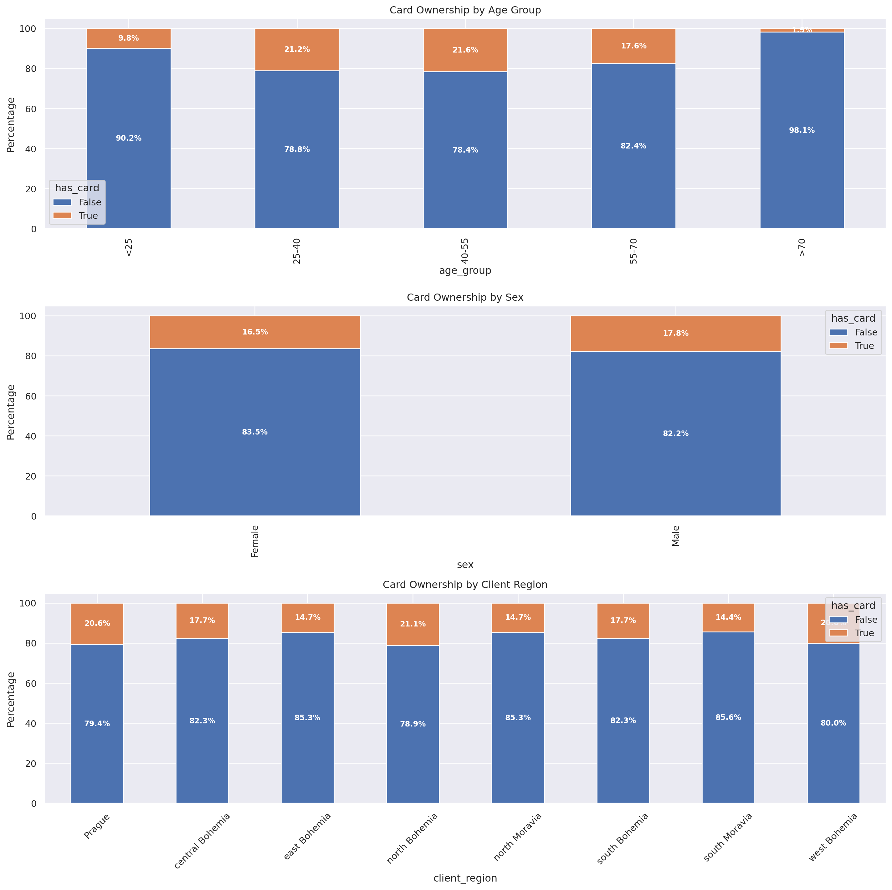
Card Ownership by Age Group: The bar chart displays the proportion of cardholders in different age groups. The percentage of cardholders is lowest in the age group of over 70, followed by the age group of 55-70, indicating that card ownership is more prevalent among younger demographics.
Card Ownership by Sex: The bar chart shows the breakdown of card ownership by sex. The data reveals that the percentage of cardholders is comparable between both sexes, and no significant difference is present.
Card Ownership by Region The bar chart at the bottom illustrates card ownership across different regions, showing a relatively consistent pattern among most regions.
Impact of Loans / Debt
simplified_loan_status_mapping = {
"Contract finished, no problems": "Finished",
"Contract finished, loan not paid": "Not Paid",
"Contract running, OK thus-far": "Running",
"Contract running, client in debt": "In Debt",
"No Loan": "No Loan"
}
non_transactional_df['loan_status_simplified'] = non_transactional_df['loan_status'].map(simplified_loan_status_mapping)
## this variable wants to kill itself
loan_status_simplified_card_ownership_counts = non_transactional_df.groupby(['loan_status_simplified', 'has_card']).size().unstack(fill_value=0)
loan_status_simplified_card_ownership_percentages = (loan_status_simplified_card_ownership_counts.T / loan_status_simplified_card_ownership_counts.sum(axis=1)).T * 100
loan_status_simplified_card_ownership_percentages.plot(kind='bar', stacked=True, figsize=(10, 6))
plt.title('Interaction Between Simplified Loan Status and Card Ownership')
plt.xlabel('Simplified Loan Status')
plt.ylabel('Percentage of Clients')
plt.xticks(rotation=45)
plt.legend(title='Has Card', labels=['No Card', 'Has Card'])
plt.tight_layout()
plt.show()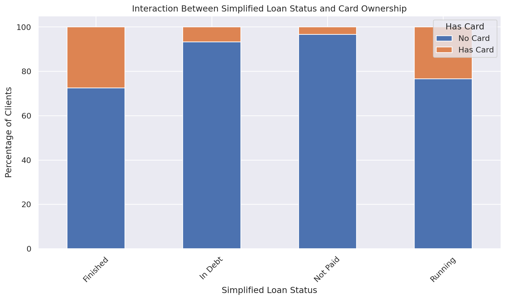
Transactional Data
Set artificial issue date for non-card holders
def add_months_since_account_to_card(df):
df['months_since_account_to_card'] = df.apply(
lambda row: (row['card_issued'].to_period('M') - row['account_created'].to_period('M')).n
if pd.notnull(row['card_issued']) and pd.notnull(row['account_created']) else np.nan, axis=1)
return df
def filter_clients_without_sufficient_history(non_transactional_df, min_history_months=25):
if 'months_since_account_to_card' not in non_transactional_df.columns:
print("Warning: months_since_account_to_card column not found. Calculating history length.")
non_transactional_df = add_months_since_account_to_card(non_transactional_df)
count_before = len(non_transactional_df)
filtered_df = non_transactional_df[non_transactional_df['months_since_account_to_card'].isnull() | (non_transactional_df['months_since_account_to_card'] >= min_history_months)]
print(f"Filtered out {count_before - len(filtered_df)} records with less than {min_history_months} months of history. Percentage: {(count_before - len(filtered_df)) / count_before * 100:.2f}%.")
return filtered_df
before_len = len(non_transactional_df)
non_transactional_w_sufficient_history_df = filter_clients_without_sufficient_history(non_transactional_df)
data_reduction["Clients without sufficient history"] = -(before_len - len(non_transactional_w_sufficient_history_df))
del before_lenWarning: months_since_account_to_card column not found. Calculating history length.
Filtered out 419 records with less than 25 months of history. Percentage: 9.62%.non_transactional_w_card_df = non_transactional_w_sufficient_history_df.dropna(subset=['card_issued']).copy()
plt.figure(figsize=(12, 8))
sns.histplot(non_transactional_w_card_df['months_since_account_to_card'], kde=True, bins=30)
plt.title('Distribution of Months from Account Creation to Card Issuance')
plt.xlabel('Months')
plt.ylabel('Count')
plt.grid(True)
plt.tight_layout()
plt.show()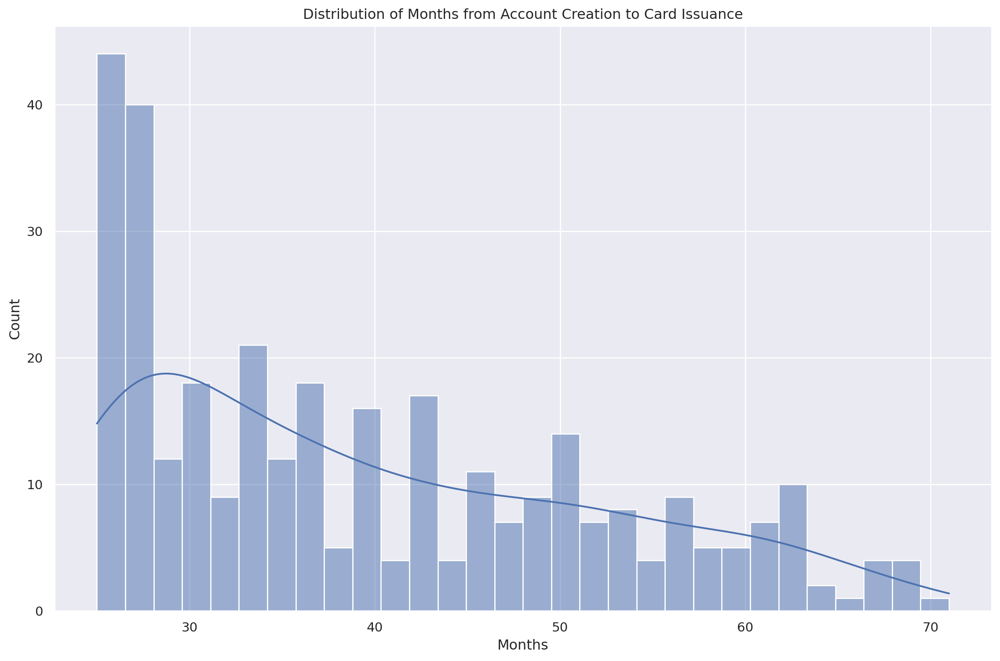
Match by similar transaction activity
The following approaches are in discussion: - Looking at the distributions above extract the amount of history a buyer most likely has at the issue data of the card - For each non buyer, find a buyer which was active in a similar time window (Jaccard similarity on the Year-Month sets)
NEW IDEA
Instead of looking at the full activity of a buyer, we only look at the pre-purchase activity as there is reason to believe that clients may change their patterns after purchasing date and therefore add unwanted bias.

Focus on Contextual Engagement
Our approach to setting artificial card issue date for non-cardholders goes beyond simple feature matching. We concentrate on the periods during which clients engage with the bank in the form of transactions. This method assumes that clients active during similar periods might be influenced by the same economic and societal conditions, providing a more nuanced foundation for establishing connections between current cardholders and potential new ones.
The process emphasizes matching based on the timing of activity, rather than a wide array of characteristics. By identifying when both existing cardholders and non-cardholders interacted with the bank, we can infer a level of behavioral alignment that extends beyond mere transactional data. This alignment suggests a shared response to external conditions.
Mechanism of Matching
Our matching utilizes the Jaccard similarity index to compare activity patterns:
- Activity Comparison: We compare a vector representing an existing cardholder’s monthly activity against a matrix of non-cardholders’ activity patterns. Here we only consider the activity from the first transaction period across all customers to the card issue date.
- Use of Jaccard Index: This metric helps us quantify the resemblance between the activity patterns, focusing on the occurrence of activity rather than its volume, to identify meaningful parallels.
Eligibility and Selection
Potential matches are subjected to specific criteria to ensure alignment for later model construction:
- Account History: Non-cardholders must have an established history of interaction, with at least 25 months of history between account creation and card issuance (12 months = period as a new customer + 13 months = one year of history + 1 month lag).
- Period of Activity: The analysis considers activities up to the card issuance date of the cardholder, aligning potential non-cardholders based on their response to similar conditions.
- Selection Process: From the non-cardholders with high similarity scores, one is randomly selected from the top-N candidates to maintain fairness in the matching process.
Objective of the Process
This matching strategy is designed to identify potential cardholders whose historical interaction patterns suggest a fit with card holders. The focus on specific periods of engagement, backed by eligibility criteria and a fair selection process, ensures that new additions to our cardholder base share a commonality that goes beyond surface-level similarities without searching a direct twin for each card holder.
Construction of the Activity Matrix
The activity matrix serves as the foundation of our matching process, mapping out the engagement of clients with our services over time. It is constructed from transaction data, organizing client interactions into a structured format that highlights periods of activity.
Data Aggregation: We start with transaction data, which records each client’s interactions across various months. This data includes every transaction made by both current cardholders and potential non-cardholders.
Temporal Transformation: Each transaction is associated with a specific date. These dates are then transformed into monthly periods, consolidating daily transactions into a monthly view of activity. This step simplifies the data, focusing on the presence of activity within each month rather than the specific dates or frequencies of transactions.
Matrix Structure: The transformed data is arranged into a matrix format. Rows represent individual clients, identified by their account IDs. Columns correspond to monthly periods, spanning the entire range of months covered by the transaction data.
Activity Indication: In the matrix, a cell value is set to indicate the presence of activity for a given client in a given month. If a client made one or more transactions in a month, the corresponding cell is marked to reflect this activity. The absence of transactions for a client in a month leaves the cell unmarked.
Binary Representation: The final step involves converting the activity indicators into a binary format. Active months are represented by a ‘1’, indicating the presence of transactions, while inactive months are denoted by a ‘0’, indicating no transactions.
The heatmap provided offers a visual representation of the activity matrix for clients, depicting the levels of engagement over various periods.
Diagonal Trend: There is a distinct diagonal pattern, indicating that newer accounts (those created more recently) have fewer periods of activity. This makes sense as these accounts have not had the opportunity to transact over the earlier periods displayed on the heatmap.
Darker Areas (Purple): These represent periods of inactivity where clients did not engage. The darker the shade, the less activity occurred in that particular period for the corresponding set of accounts.
Brighter Areas (Yellow): In contrast, the brighter areas denote periods of activity. A brighter shade implies more clients were active during that period.
Account Creation Date: Clients are sorted by their account creation date. Those who joined earlier are at the top, while more recent clients appear toward the bottom of the heatmap.
def prepare_activity_matrix(transactions):
"""
Create an activity matrix from transaction data.
The function transforms transaction data into a binary matrix that indicates
whether an account was active in a given month.
Parameters:
- transactions (pd.DataFrame): A DataFrame containing the transaction data.
Returns:
- pd.DataFrame: An activity matrix with accounts as rows and months as columns.
"""
transactions['month_year'] = transactions['date'].dt.to_period('M')
transactions['active'] = 1
activity_matrix = transactions.pivot_table(index='account_id',
columns='month_year',
values='active',
fill_value=0)
activity_matrix.columns = [f'active_{str(col)}' for col in activity_matrix.columns]
return activity_matrix
def plot_activity_matrix(activity_matrix):
sparse_matrix = activity_matrix.astype(bool)
plt.figure(figsize=(20, 10))
sns.heatmap(sparse_matrix, cmap='viridis', cbar=True, yticklabels=False)
plt.title(f'Activity Matrix across all clients sorted by account creation date')
plt.xlabel('Period')
plt.ylabel('Accounts')
plt.show()
activity_matrix = prepare_activity_matrix(transactions_df)
plot_activity_matrix(activity_matrix)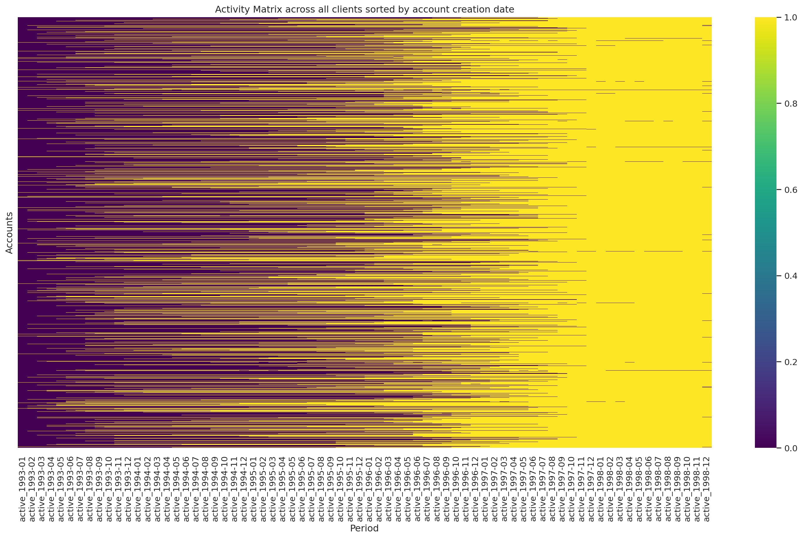
from sklearn.metrics import pairwise_distances
from tqdm import tqdm
def check_eligibility_for_matching(non_cardholder, cardholder, verbose=False):
"""
Determine if a non-cardholder is eligible for matching with a cardholder.
This function checks whether the card issuance to a cardholder occurred at least
25 months after the non-cardholder's account was created.
Parameters:
- non_cardholder (pd.Series): A data series containing the non-cardholder's details.
- cardholder (pd.Series): A data series containing the cardholder's details.
- verbose (bool): If True, print detailed eligibility information. Default is False.
Returns:
- bool: True if the non-cardholder is eligible for matching, False otherwise.
"""
if cardholder['card_issued'] <= non_cardholder['account_created']:
return False
period_diff = (cardholder['card_issued'].to_period('M') - non_cardholder['account_created'].to_period('M')).n
if verbose:
print(f"Card issued: {cardholder['card_issued']}, Account created: {non_cardholder['account_created']}, Period diff: {period_diff}, Eligible: {period_diff >= 25}")
return period_diff >= 25
def match_cardholders_with_non_cardholders(non_transactional, transactions, top_n=5):
"""
Match cardholders with non-cardholders based on the similarity of their activity patterns.
The function creates an activity matrix, identifies eligible non-cardholders, calculates
the Jaccard similarity to find matches, and randomly selects one match per cardholder
from the top N similar non-cardholders.
Parameters:
- non_transactional (pd.DataFrame): A DataFrame containing non-cardholders.
- transactions (pd.DataFrame): A DataFrame containing transactional data.
- top_n (int): The number of top similar non-cardholders to consider for matching.
Returns:
- list: A list of tuples with the cardholder and matched non-cardholder client IDs and similarity scores.
"""
with_card = non_transactional[non_transactional['card_issued'].notna()]
without_card = non_transactional[non_transactional['card_issued'].isna()]
activity_matrix = prepare_activity_matrix(transactions)
with_card_activity = with_card.join(activity_matrix, on='account_id', how='left')
without_card_activity = without_card.join(activity_matrix, on='account_id', how='left')
matched_non_cardholders = set()
matches = []
for idx, cardholder in tqdm(with_card_activity.iterrows(), total=len(with_card_activity), desc='Matching cardholders'):
issue_period = cardholder['card_issued'].to_period('M')
eligible_cols = [col for col in activity_matrix if col.startswith('active') and pd.Period(col.split('_')[1]) <= issue_period]
if not eligible_cols:
print(f"No eligible months found for cardholder client_id {cardholder['client_id']}.")
continue
cardholder_vector = cardholder[eligible_cols].fillna(0).astype(bool).values.reshape(1, -1)
non_cardholder__matrix = without_card_activity[eligible_cols].fillna(0).astype(bool).values
assert cardholder_vector.shape[1] == non_cardholder__matrix.shape[1], "Dimension mismatch between cardholder and applicant activity matrix."
distances = pairwise_distances(cardholder_vector, non_cardholder__matrix, metric='jaccard').flatten()
eligible_non_cardholders = [i for i, applicant in without_card_activity.iterrows()
if check_eligibility_for_matching(applicant, cardholder) and i not in matched_non_cardholders]
if eligible_non_cardholders:
select_non_cardholders(distances, eligible_non_cardholders, matches, matched_non_cardholders, cardholder, without_card_activity, top_n)
else:
print(f"No eligible non-cardholders found for cardholder client_id {cardholder['client_id']}.")
return matches
def select_non_cardholders(distances, eligible_non_cardholders, matches, matched_applicants, cardholder, without_card_activity, top_n):
"""
Randomly select a non-cardholder match for a cardholder from the top N eligible candidates.
Parameters:
- distances (np.array): An array of Jaccard distances between a cardholder and non-cardholders.
- eligible_non_cardholders (list): A list of indices for non-cardholders who are eligible for matching.
- matches (list): A list to which the match will be appended.
- matched_applicants (set): A set of indices for non-cardholders who have already been matched.
- cardholder (pd.Series): The data series of the current cardholder.
- without_card_activity (pd.DataFrame): A DataFrame of non-cardholders without card issuance.
- top_n (int): The number of top similar non-cardholders to consider for matching.
Returns:
- None: The matches list is updated in place with the selected match.
"""
eligible_distances = distances[eligible_non_cardholders]
sorted_indices = np.argsort(eligible_distances)[:top_n]
if sorted_indices.size > 0:
selected_index = np.random.choice(sorted_indices)
actual_selected_index = eligible_non_cardholders[selected_index]
if actual_selected_index not in matched_applicants:
matched_applicants.add(actual_selected_index)
applicant = without_card_activity.iloc[actual_selected_index]
similarity = 1 - eligible_distances[selected_index]
matches.append((cardholder['client_id'], applicant['client_id'], similarity))
def set_artificial_issue_dates(non_transactional_df, matches):
"""
Augment the non-transactional DataFrame with artificial card issue dates based on matching results.
Each matched non-cardholder is assigned a card issue date corresponding to their matched
cardholder. The 'has_card' flag for each non-cardholder is updated accordingly.
Parameters:
- non_transactional_df (pd.DataFrame): The DataFrame of non-cardholders to augment.
- matches (list): A list of tuples containing the matched cardholder and non-cardholder IDs and similarity scores.
Returns:
- pd.DataFrame: The augmented DataFrame with artificial card issue dates.
"""
augmented_df = non_transactional_df.copy()
augmented_df['has_card'] = True
for cardholder_id, non_cardholder_id, _ in matches:
card_issue_date = augmented_df.loc[augmented_df['client_id'] == cardholder_id, 'card_issued'].values[0]
augmented_df.loc[augmented_df['client_id'] == non_cardholder_id, ['card_issued', 'has_card']] = [card_issue_date, False]
return augmented_df
matched_non_card_holders_df = match_cardholders_with_non_cardholders(non_transactional_w_sufficient_history_df, transactions_df)
print(f"Percentage of clients with card issued: {non_transactional_w_sufficient_history_df['card_issued'].notna().mean() * 100:.2f}%")
matched_non_card_holders_w_issue_date_df = set_artificial_issue_dates(non_transactional_w_sufficient_history_df, matched_non_card_holders_df)
print(f"Percentage of clients with card issued after matching: {matched_non_card_holders_w_issue_date_df['card_issued'].notna().mean() * 100:.2f}%")Matching cardholders: 0%| | 0/328 [00:00<?, ?it/s]/tmp/ipykernel_1880/779803477.py:64: FutureWarning:
Downcasting object dtype arrays on .fillna, .ffill, .bfill is deprecated and will change in a future version. Call result.infer_objects(copy=False) instead. To opt-in to the future behavior, set `pd.set_option('future.no_silent_downcasting', True)`
Matching cardholders: 0%| | 1/328 [00:00<01:53, 2.88it/s]/tmp/ipykernel_1880/779803477.py:64: FutureWarning:
Downcasting object dtype arrays on .fillna, .ffill, .bfill is deprecated and will change in a future version. Call result.infer_objects(copy=False) instead. To opt-in to the future behavior, set `pd.set_option('future.no_silent_downcasting', True)`
Matching cardholders: 1%| | 2/328 [00:00<01:50, 2.94it/s]/tmp/ipykernel_1880/779803477.py:64: FutureWarning:
Downcasting object dtype arrays on .fillna, .ffill, .bfill is deprecated and will change in a future version. Call result.infer_objects(copy=False) instead. To opt-in to the future behavior, set `pd.set_option('future.no_silent_downcasting', True)`
Matching cardholders: 1%| | 3/328 [00:01<01:50, 2.94it/s]/tmp/ipykernel_1880/779803477.py:64: FutureWarning:
Downcasting object dtype arrays on .fillna, .ffill, .bfill is deprecated and will change in a future version. Call result.infer_objects(copy=False) instead. To opt-in to the future behavior, set `pd.set_option('future.no_silent_downcasting', True)`
Matching cardholders: 1%| | 4/328 [00:01<01:43, 3.13it/s]/tmp/ipykernel_1880/779803477.py:64: FutureWarning:
Downcasting object dtype arrays on .fillna, .ffill, .bfill is deprecated and will change in a future version. Call result.infer_objects(copy=False) instead. To opt-in to the future behavior, set `pd.set_option('future.no_silent_downcasting', True)`
Matching cardholders: 2%|▏ | 5/328 [00:01<01:38, 3.26it/s]/tmp/ipykernel_1880/779803477.py:64: FutureWarning:
Downcasting object dtype arrays on .fillna, .ffill, .bfill is deprecated and will change in a future version. Call result.infer_objects(copy=False) instead. To opt-in to the future behavior, set `pd.set_option('future.no_silent_downcasting', True)`
Matching cardholders: 2%|▏ | 6/328 [00:01<01:41, 3.16it/s]/tmp/ipykernel_1880/779803477.py:64: FutureWarning:
Downcasting object dtype arrays on .fillna, .ffill, .bfill is deprecated and will change in a future version. Call result.infer_objects(copy=False) instead. To opt-in to the future behavior, set `pd.set_option('future.no_silent_downcasting', True)`
Matching cardholders: 2%|▏ | 7/328 [00:02<01:43, 3.11it/s]/tmp/ipykernel_1880/779803477.py:64: FutureWarning:
Downcasting object dtype arrays on .fillna, .ffill, .bfill is deprecated and will change in a future version. Call result.infer_objects(copy=False) instead. To opt-in to the future behavior, set `pd.set_option('future.no_silent_downcasting', True)`
Matching cardholders: 2%|▏ | 8/328 [00:02<01:43, 3.08it/s]/tmp/ipykernel_1880/779803477.py:64: FutureWarning:
Downcasting object dtype arrays on .fillna, .ffill, .bfill is deprecated and will change in a future version. Call result.infer_objects(copy=False) instead. To opt-in to the future behavior, set `pd.set_option('future.no_silent_downcasting', True)`
Matching cardholders: 3%|▎ | 9/328 [00:02<01:32, 3.46it/s]/tmp/ipykernel_1880/779803477.py:64: FutureWarning:
Downcasting object dtype arrays on .fillna, .ffill, .bfill is deprecated and will change in a future version. Call result.infer_objects(copy=False) instead. To opt-in to the future behavior, set `pd.set_option('future.no_silent_downcasting', True)`
Matching cardholders: 3%|▎ | 10/328 [00:03<01:24, 3.75it/s]/tmp/ipykernel_1880/779803477.py:64: FutureWarning:
Downcasting object dtype arrays on .fillna, .ffill, .bfill is deprecated and will change in a future version. Call result.infer_objects(copy=False) instead. To opt-in to the future behavior, set `pd.set_option('future.no_silent_downcasting', True)`
Matching cardholders: 3%|▎ | 11/328 [00:03<01:31, 3.47it/s]/tmp/ipykernel_1880/779803477.py:64: FutureWarning:
Downcasting object dtype arrays on .fillna, .ffill, .bfill is deprecated and will change in a future version. Call result.infer_objects(copy=False) instead. To opt-in to the future behavior, set `pd.set_option('future.no_silent_downcasting', True)`
Matching cardholders: 4%|▎ | 12/328 [00:03<01:35, 3.31it/s]/tmp/ipykernel_1880/779803477.py:64: FutureWarning:
Downcasting object dtype arrays on .fillna, .ffill, .bfill is deprecated and will change in a future version. Call result.infer_objects(copy=False) instead. To opt-in to the future behavior, set `pd.set_option('future.no_silent_downcasting', True)`
Matching cardholders: 4%|▍ | 13/328 [00:04<01:38, 3.21it/s]/tmp/ipykernel_1880/779803477.py:64: FutureWarning:
Downcasting object dtype arrays on .fillna, .ffill, .bfill is deprecated and will change in a future version. Call result.infer_objects(copy=False) instead. To opt-in to the future behavior, set `pd.set_option('future.no_silent_downcasting', True)`
Matching cardholders: 4%|▍ | 14/328 [00:04<01:35, 3.28it/s]/tmp/ipykernel_1880/779803477.py:64: FutureWarning:
Downcasting object dtype arrays on .fillna, .ffill, .bfill is deprecated and will change in a future version. Call result.infer_objects(copy=False) instead. To opt-in to the future behavior, set `pd.set_option('future.no_silent_downcasting', True)`
Matching cardholders: 5%|▍ | 15/328 [00:04<01:38, 3.19it/s]/tmp/ipykernel_1880/779803477.py:64: FutureWarning:
Downcasting object dtype arrays on .fillna, .ffill, .bfill is deprecated and will change in a future version. Call result.infer_objects(copy=False) instead. To opt-in to the future behavior, set `pd.set_option('future.no_silent_downcasting', True)`
Matching cardholders: 5%|▍ | 16/328 [00:04<01:28, 3.55it/s]/tmp/ipykernel_1880/779803477.py:64: FutureWarning:
Downcasting object dtype arrays on .fillna, .ffill, .bfill is deprecated and will change in a future version. Call result.infer_objects(copy=False) instead. To opt-in to the future behavior, set `pd.set_option('future.no_silent_downcasting', True)`
Matching cardholders: 5%|▌ | 17/328 [00:05<01:20, 3.86it/s]/tmp/ipykernel_1880/779803477.py:64: FutureWarning:
Downcasting object dtype arrays on .fillna, .ffill, .bfill is deprecated and will change in a future version. Call result.infer_objects(copy=False) instead. To opt-in to the future behavior, set `pd.set_option('future.no_silent_downcasting', True)`
Matching cardholders: 5%|▌ | 18/328 [00:05<01:17, 4.03it/s]/tmp/ipykernel_1880/779803477.py:64: FutureWarning:
Downcasting object dtype arrays on .fillna, .ffill, .bfill is deprecated and will change in a future version. Call result.infer_objects(copy=False) instead. To opt-in to the future behavior, set `pd.set_option('future.no_silent_downcasting', True)`
Matching cardholders: 6%|▌ | 19/328 [00:05<01:23, 3.70it/s]/tmp/ipykernel_1880/779803477.py:64: FutureWarning:
Downcasting object dtype arrays on .fillna, .ffill, .bfill is deprecated and will change in a future version. Call result.infer_objects(copy=False) instead. To opt-in to the future behavior, set `pd.set_option('future.no_silent_downcasting', True)`
Matching cardholders: 6%|▌ | 20/328 [00:05<01:27, 3.52it/s]/tmp/ipykernel_1880/779803477.py:64: FutureWarning:
Downcasting object dtype arrays on .fillna, .ffill, .bfill is deprecated and will change in a future version. Call result.infer_objects(copy=False) instead. To opt-in to the future behavior, set `pd.set_option('future.no_silent_downcasting', True)`
Matching cardholders: 6%|▋ | 21/328 [00:06<01:32, 3.33it/s]/tmp/ipykernel_1880/779803477.py:64: FutureWarning:
Downcasting object dtype arrays on .fillna, .ffill, .bfill is deprecated and will change in a future version. Call result.infer_objects(copy=False) instead. To opt-in to the future behavior, set `pd.set_option('future.no_silent_downcasting', True)`
Matching cardholders: 7%|▋ | 22/328 [00:06<01:34, 3.22it/s]/tmp/ipykernel_1880/779803477.py:64: FutureWarning:
Downcasting object dtype arrays on .fillna, .ffill, .bfill is deprecated and will change in a future version. Call result.infer_objects(copy=False) instead. To opt-in to the future behavior, set `pd.set_option('future.no_silent_downcasting', True)`
Matching cardholders: 7%|▋ | 23/328 [00:06<01:36, 3.15it/s]/tmp/ipykernel_1880/779803477.py:64: FutureWarning:
Downcasting object dtype arrays on .fillna, .ffill, .bfill is deprecated and will change in a future version. Call result.infer_objects(copy=False) instead. To opt-in to the future behavior, set `pd.set_option('future.no_silent_downcasting', True)`
Matching cardholders: 7%|▋ | 24/328 [00:07<01:38, 3.07it/s]/tmp/ipykernel_1880/779803477.py:64: FutureWarning:
Downcasting object dtype arrays on .fillna, .ffill, .bfill is deprecated and will change in a future version. Call result.infer_objects(copy=False) instead. To opt-in to the future behavior, set `pd.set_option('future.no_silent_downcasting', True)`
Matching cardholders: 8%|▊ | 25/328 [00:07<01:39, 3.04it/s]/tmp/ipykernel_1880/779803477.py:64: FutureWarning:
Downcasting object dtype arrays on .fillna, .ffill, .bfill is deprecated and will change in a future version. Call result.infer_objects(copy=False) instead. To opt-in to the future behavior, set `pd.set_option('future.no_silent_downcasting', True)`
Matching cardholders: 8%|▊ | 26/328 [00:08<01:46, 2.82it/s]/tmp/ipykernel_1880/779803477.py:64: FutureWarning:
Downcasting object dtype arrays on .fillna, .ffill, .bfill is deprecated and will change in a future version. Call result.infer_objects(copy=False) instead. To opt-in to the future behavior, set `pd.set_option('future.no_silent_downcasting', True)`
Matching cardholders: 8%|▊ | 27/328 [00:08<01:36, 3.11it/s]/tmp/ipykernel_1880/779803477.py:64: FutureWarning:
Downcasting object dtype arrays on .fillna, .ffill, .bfill is deprecated and will change in a future version. Call result.infer_objects(copy=False) instead. To opt-in to the future behavior, set `pd.set_option('future.no_silent_downcasting', True)`
Matching cardholders: 9%|▊ | 28/328 [00:08<01:36, 3.12it/s]/tmp/ipykernel_1880/779803477.py:64: FutureWarning:
Downcasting object dtype arrays on .fillna, .ffill, .bfill is deprecated and will change in a future version. Call result.infer_objects(copy=False) instead. To opt-in to the future behavior, set `pd.set_option('future.no_silent_downcasting', True)`
Matching cardholders: 9%|▉ | 29/328 [00:08<01:33, 3.18it/s]/tmp/ipykernel_1880/779803477.py:64: FutureWarning:
Downcasting object dtype arrays on .fillna, .ffill, .bfill is deprecated and will change in a future version. Call result.infer_objects(copy=False) instead. To opt-in to the future behavior, set `pd.set_option('future.no_silent_downcasting', True)`
Matching cardholders: 9%|▉ | 30/328 [00:09<01:36, 3.10it/s]/tmp/ipykernel_1880/779803477.py:64: FutureWarning:
Downcasting object dtype arrays on .fillna, .ffill, .bfill is deprecated and will change in a future version. Call result.infer_objects(copy=False) instead. To opt-in to the future behavior, set `pd.set_option('future.no_silent_downcasting', True)`
Matching cardholders: 9%|▉ | 31/328 [00:09<01:33, 3.17it/s]/tmp/ipykernel_1880/779803477.py:64: FutureWarning:
Downcasting object dtype arrays on .fillna, .ffill, .bfill is deprecated and will change in a future version. Call result.infer_objects(copy=False) instead. To opt-in to the future behavior, set `pd.set_option('future.no_silent_downcasting', True)`
Matching cardholders: 10%|▉ | 32/328 [00:09<01:24, 3.49it/s]/tmp/ipykernel_1880/779803477.py:64: FutureWarning:
Downcasting object dtype arrays on .fillna, .ffill, .bfill is deprecated and will change in a future version. Call result.infer_objects(copy=False) instead. To opt-in to the future behavior, set `pd.set_option('future.no_silent_downcasting', True)`
Matching cardholders: 10%|█ | 33/328 [00:10<01:26, 3.41it/s]/tmp/ipykernel_1880/779803477.py:64: FutureWarning:
Downcasting object dtype arrays on .fillna, .ffill, .bfill is deprecated and will change in a future version. Call result.infer_objects(copy=False) instead. To opt-in to the future behavior, set `pd.set_option('future.no_silent_downcasting', True)`
Matching cardholders: 10%|█ | 34/328 [00:10<01:27, 3.37it/s]/tmp/ipykernel_1880/779803477.py:64: FutureWarning:
Downcasting object dtype arrays on .fillna, .ffill, .bfill is deprecated and will change in a future version. Call result.infer_objects(copy=False) instead. To opt-in to the future behavior, set `pd.set_option('future.no_silent_downcasting', True)`
Matching cardholders: 11%|█ | 35/328 [00:10<01:29, 3.26it/s]/tmp/ipykernel_1880/779803477.py:64: FutureWarning:
Downcasting object dtype arrays on .fillna, .ffill, .bfill is deprecated and will change in a future version. Call result.infer_objects(copy=False) instead. To opt-in to the future behavior, set `pd.set_option('future.no_silent_downcasting', True)`
Matching cardholders: 11%|█ | 36/328 [00:10<01:22, 3.53it/s]/tmp/ipykernel_1880/779803477.py:64: FutureWarning:
Downcasting object dtype arrays on .fillna, .ffill, .bfill is deprecated and will change in a future version. Call result.infer_objects(copy=False) instead. To opt-in to the future behavior, set `pd.set_option('future.no_silent_downcasting', True)`
Matching cardholders: 11%|█▏ | 37/328 [00:11<01:27, 3.34it/s]/tmp/ipykernel_1880/779803477.py:64: FutureWarning:
Downcasting object dtype arrays on .fillna, .ffill, .bfill is deprecated and will change in a future version. Call result.infer_objects(copy=False) instead. To opt-in to the future behavior, set `pd.set_option('future.no_silent_downcasting', True)`
Matching cardholders: 12%|█▏ | 38/328 [00:11<01:29, 3.22it/s]/tmp/ipykernel_1880/779803477.py:64: FutureWarning:
Downcasting object dtype arrays on .fillna, .ffill, .bfill is deprecated and will change in a future version. Call result.infer_objects(copy=False) instead. To opt-in to the future behavior, set `pd.set_option('future.no_silent_downcasting', True)`
Matching cardholders: 12%|█▏ | 39/328 [00:11<01:26, 3.35it/s]/tmp/ipykernel_1880/779803477.py:64: FutureWarning:
Downcasting object dtype arrays on .fillna, .ffill, .bfill is deprecated and will change in a future version. Call result.infer_objects(copy=False) instead. To opt-in to the future behavior, set `pd.set_option('future.no_silent_downcasting', True)`
Matching cardholders: 12%|█▏ | 40/328 [00:12<01:27, 3.30it/s]/tmp/ipykernel_1880/779803477.py:64: FutureWarning:
Downcasting object dtype arrays on .fillna, .ffill, .bfill is deprecated and will change in a future version. Call result.infer_objects(copy=False) instead. To opt-in to the future behavior, set `pd.set_option('future.no_silent_downcasting', True)`
Matching cardholders: 12%|█▎ | 41/328 [00:12<01:29, 3.21it/s]/tmp/ipykernel_1880/779803477.py:64: FutureWarning:
Downcasting object dtype arrays on .fillna, .ffill, .bfill is deprecated and will change in a future version. Call result.infer_objects(copy=False) instead. To opt-in to the future behavior, set `pd.set_option('future.no_silent_downcasting', True)`
Matching cardholders: 13%|█▎ | 42/328 [00:12<01:30, 3.17it/s]/tmp/ipykernel_1880/779803477.py:64: FutureWarning:
Downcasting object dtype arrays on .fillna, .ffill, .bfill is deprecated and will change in a future version. Call result.infer_objects(copy=False) instead. To opt-in to the future behavior, set `pd.set_option('future.no_silent_downcasting', True)`
Matching cardholders: 13%|█▎ | 43/328 [00:13<01:31, 3.11it/s]/tmp/ipykernel_1880/779803477.py:64: FutureWarning:
Downcasting object dtype arrays on .fillna, .ffill, .bfill is deprecated and will change in a future version. Call result.infer_objects(copy=False) instead. To opt-in to the future behavior, set `pd.set_option('future.no_silent_downcasting', True)`
Matching cardholders: 13%|█▎ | 44/328 [00:13<01:25, 3.32it/s]/tmp/ipykernel_1880/779803477.py:64: FutureWarning:
Downcasting object dtype arrays on .fillna, .ffill, .bfill is deprecated and will change in a future version. Call result.infer_objects(copy=False) instead. To opt-in to the future behavior, set `pd.set_option('future.no_silent_downcasting', True)`
Matching cardholders: 14%|█▎ | 45/328 [00:13<01:21, 3.48it/s]/tmp/ipykernel_1880/779803477.py:64: FutureWarning:
Downcasting object dtype arrays on .fillna, .ffill, .bfill is deprecated and will change in a future version. Call result.infer_objects(copy=False) instead. To opt-in to the future behavior, set `pd.set_option('future.no_silent_downcasting', True)`
Matching cardholders: 14%|█▍ | 46/328 [00:13<01:17, 3.62it/s]/tmp/ipykernel_1880/779803477.py:64: FutureWarning:
Downcasting object dtype arrays on .fillna, .ffill, .bfill is deprecated and will change in a future version. Call result.infer_objects(copy=False) instead. To opt-in to the future behavior, set `pd.set_option('future.no_silent_downcasting', True)`
Matching cardholders: 14%|█▍ | 47/328 [00:14<01:22, 3.39it/s]/tmp/ipykernel_1880/779803477.py:64: FutureWarning:
Downcasting object dtype arrays on .fillna, .ffill, .bfill is deprecated and will change in a future version. Call result.infer_objects(copy=False) instead. To opt-in to the future behavior, set `pd.set_option('future.no_silent_downcasting', True)`
Matching cardholders: 15%|█▍ | 48/328 [00:14<01:34, 2.96it/s]/tmp/ipykernel_1880/779803477.py:64: FutureWarning:
Downcasting object dtype arrays on .fillna, .ffill, .bfill is deprecated and will change in a future version. Call result.infer_objects(copy=False) instead. To opt-in to the future behavior, set `pd.set_option('future.no_silent_downcasting', True)`
Matching cardholders: 15%|█▍ | 49/328 [00:15<01:34, 2.94it/s]/tmp/ipykernel_1880/779803477.py:64: FutureWarning:
Downcasting object dtype arrays on .fillna, .ffill, .bfill is deprecated and will change in a future version. Call result.infer_objects(copy=False) instead. To opt-in to the future behavior, set `pd.set_option('future.no_silent_downcasting', True)`
Matching cardholders: 15%|█▌ | 50/328 [00:15<01:32, 3.00it/s]/tmp/ipykernel_1880/779803477.py:64: FutureWarning:
Downcasting object dtype arrays on .fillna, .ffill, .bfill is deprecated and will change in a future version. Call result.infer_objects(copy=False) instead. To opt-in to the future behavior, set `pd.set_option('future.no_silent_downcasting', True)`
Matching cardholders: 16%|█▌ | 51/328 [00:15<01:29, 3.10it/s]/tmp/ipykernel_1880/779803477.py:64: FutureWarning:
Downcasting object dtype arrays on .fillna, .ffill, .bfill is deprecated and will change in a future version. Call result.infer_objects(copy=False) instead. To opt-in to the future behavior, set `pd.set_option('future.no_silent_downcasting', True)`
Matching cardholders: 16%|█▌ | 52/328 [00:15<01:22, 3.36it/s]/tmp/ipykernel_1880/779803477.py:64: FutureWarning:
Downcasting object dtype arrays on .fillna, .ffill, .bfill is deprecated and will change in a future version. Call result.infer_objects(copy=False) instead. To opt-in to the future behavior, set `pd.set_option('future.no_silent_downcasting', True)`
Matching cardholders: 16%|█▌ | 53/328 [00:16<01:24, 3.27it/s]/tmp/ipykernel_1880/779803477.py:64: FutureWarning:
Downcasting object dtype arrays on .fillna, .ffill, .bfill is deprecated and will change in a future version. Call result.infer_objects(copy=False) instead. To opt-in to the future behavior, set `pd.set_option('future.no_silent_downcasting', True)`
Matching cardholders: 16%|█▋ | 54/328 [00:16<01:18, 3.50it/s]/tmp/ipykernel_1880/779803477.py:64: FutureWarning:
Downcasting object dtype arrays on .fillna, .ffill, .bfill is deprecated and will change in a future version. Call result.infer_objects(copy=False) instead. To opt-in to the future behavior, set `pd.set_option('future.no_silent_downcasting', True)`
Matching cardholders: 17%|█▋ | 55/328 [00:16<01:20, 3.39it/s]/tmp/ipykernel_1880/779803477.py:64: FutureWarning:
Downcasting object dtype arrays on .fillna, .ffill, .bfill is deprecated and will change in a future version. Call result.infer_objects(copy=False) instead. To opt-in to the future behavior, set `pd.set_option('future.no_silent_downcasting', True)`
Matching cardholders: 17%|█▋ | 56/328 [00:17<01:23, 3.26it/s]/tmp/ipykernel_1880/779803477.py:64: FutureWarning:
Downcasting object dtype arrays on .fillna, .ffill, .bfill is deprecated and will change in a future version. Call result.infer_objects(copy=False) instead. To opt-in to the future behavior, set `pd.set_option('future.no_silent_downcasting', True)`
Matching cardholders: 17%|█▋ | 57/328 [00:17<01:25, 3.16it/s]/tmp/ipykernel_1880/779803477.py:64: FutureWarning:
Downcasting object dtype arrays on .fillna, .ffill, .bfill is deprecated and will change in a future version. Call result.infer_objects(copy=False) instead. To opt-in to the future behavior, set `pd.set_option('future.no_silent_downcasting', True)`
Matching cardholders: 18%|█▊ | 58/328 [00:17<01:23, 3.25it/s]/tmp/ipykernel_1880/779803477.py:64: FutureWarning:
Downcasting object dtype arrays on .fillna, .ffill, .bfill is deprecated and will change in a future version. Call result.infer_objects(copy=False) instead. To opt-in to the future behavior, set `pd.set_option('future.no_silent_downcasting', True)`
Matching cardholders: 18%|█▊ | 59/328 [00:17<01:16, 3.53it/s]/tmp/ipykernel_1880/779803477.py:64: FutureWarning:
Downcasting object dtype arrays on .fillna, .ffill, .bfill is deprecated and will change in a future version. Call result.infer_objects(copy=False) instead. To opt-in to the future behavior, set `pd.set_option('future.no_silent_downcasting', True)`
Matching cardholders: 18%|█▊ | 60/328 [00:18<01:15, 3.53it/s]/tmp/ipykernel_1880/779803477.py:64: FutureWarning:
Downcasting object dtype arrays on .fillna, .ffill, .bfill is deprecated and will change in a future version. Call result.infer_objects(copy=False) instead. To opt-in to the future behavior, set `pd.set_option('future.no_silent_downcasting', True)`
Matching cardholders: 19%|█▊ | 61/328 [00:18<01:12, 3.67it/s]/tmp/ipykernel_1880/779803477.py:64: FutureWarning:
Downcasting object dtype arrays on .fillna, .ffill, .bfill is deprecated and will change in a future version. Call result.infer_objects(copy=False) instead. To opt-in to the future behavior, set `pd.set_option('future.no_silent_downcasting', True)`
Matching cardholders: 19%|█▉ | 62/328 [00:18<01:17, 3.43it/s]/tmp/ipykernel_1880/779803477.py:64: FutureWarning:
Downcasting object dtype arrays on .fillna, .ffill, .bfill is deprecated and will change in a future version. Call result.infer_objects(copy=False) instead. To opt-in to the future behavior, set `pd.set_option('future.no_silent_downcasting', True)`
Matching cardholders: 19%|█▉ | 63/328 [00:19<01:20, 3.29it/s]/tmp/ipykernel_1880/779803477.py:64: FutureWarning:
Downcasting object dtype arrays on .fillna, .ffill, .bfill is deprecated and will change in a future version. Call result.infer_objects(copy=False) instead. To opt-in to the future behavior, set `pd.set_option('future.no_silent_downcasting', True)`
Matching cardholders: 20%|█▉ | 64/328 [00:19<01:22, 3.22it/s]/tmp/ipykernel_1880/779803477.py:64: FutureWarning:
Downcasting object dtype arrays on .fillna, .ffill, .bfill is deprecated and will change in a future version. Call result.infer_objects(copy=False) instead. To opt-in to the future behavior, set `pd.set_option('future.no_silent_downcasting', True)`
Matching cardholders: 20%|█▉ | 65/328 [00:19<01:23, 3.16it/s]/tmp/ipykernel_1880/779803477.py:64: FutureWarning:
Downcasting object dtype arrays on .fillna, .ffill, .bfill is deprecated and will change in a future version. Call result.infer_objects(copy=False) instead. To opt-in to the future behavior, set `pd.set_option('future.no_silent_downcasting', True)`
Matching cardholders: 20%|██ | 66/328 [00:20<01:21, 3.21it/s]/tmp/ipykernel_1880/779803477.py:64: FutureWarning:
Downcasting object dtype arrays on .fillna, .ffill, .bfill is deprecated and will change in a future version. Call result.infer_objects(copy=False) instead. To opt-in to the future behavior, set `pd.set_option('future.no_silent_downcasting', True)`
Matching cardholders: 20%|██ | 67/328 [00:20<01:23, 3.13it/s]/tmp/ipykernel_1880/779803477.py:64: FutureWarning:
Downcasting object dtype arrays on .fillna, .ffill, .bfill is deprecated and will change in a future version. Call result.infer_objects(copy=False) instead. To opt-in to the future behavior, set `pd.set_option('future.no_silent_downcasting', True)`
Matching cardholders: 21%|██ | 68/328 [00:20<01:24, 3.08it/s]/tmp/ipykernel_1880/779803477.py:64: FutureWarning:
Downcasting object dtype arrays on .fillna, .ffill, .bfill is deprecated and will change in a future version. Call result.infer_objects(copy=False) instead. To opt-in to the future behavior, set `pd.set_option('future.no_silent_downcasting', True)`
Matching cardholders: 21%|██ | 69/328 [00:21<01:29, 2.89it/s]/tmp/ipykernel_1880/779803477.py:64: FutureWarning:
Downcasting object dtype arrays on .fillna, .ffill, .bfill is deprecated and will change in a future version. Call result.infer_objects(copy=False) instead. To opt-in to the future behavior, set `pd.set_option('future.no_silent_downcasting', True)`
Matching cardholders: 21%|██▏ | 70/328 [00:21<01:25, 3.00it/s]/tmp/ipykernel_1880/779803477.py:64: FutureWarning:
Downcasting object dtype arrays on .fillna, .ffill, .bfill is deprecated and will change in a future version. Call result.infer_objects(copy=False) instead. To opt-in to the future behavior, set `pd.set_option('future.no_silent_downcasting', True)`
Matching cardholders: 22%|██▏ | 71/328 [00:21<01:25, 3.01it/s]/tmp/ipykernel_1880/779803477.py:64: FutureWarning:
Downcasting object dtype arrays on .fillna, .ffill, .bfill is deprecated and will change in a future version. Call result.infer_objects(copy=False) instead. To opt-in to the future behavior, set `pd.set_option('future.no_silent_downcasting', True)`
Matching cardholders: 22%|██▏ | 72/328 [00:22<01:19, 3.23it/s]/tmp/ipykernel_1880/779803477.py:64: FutureWarning:
Downcasting object dtype arrays on .fillna, .ffill, .bfill is deprecated and will change in a future version. Call result.infer_objects(copy=False) instead. To opt-in to the future behavior, set `pd.set_option('future.no_silent_downcasting', True)`
Matching cardholders: 22%|██▏ | 73/328 [00:22<01:21, 3.13it/s]/tmp/ipykernel_1880/779803477.py:64: FutureWarning:
Downcasting object dtype arrays on .fillna, .ffill, .bfill is deprecated and will change in a future version. Call result.infer_objects(copy=False) instead. To opt-in to the future behavior, set `pd.set_option('future.no_silent_downcasting', True)`
Matching cardholders: 23%|██▎ | 74/328 [00:22<01:18, 3.22it/s]/tmp/ipykernel_1880/779803477.py:64: FutureWarning:
Downcasting object dtype arrays on .fillna, .ffill, .bfill is deprecated and will change in a future version. Call result.infer_objects(copy=False) instead. To opt-in to the future behavior, set `pd.set_option('future.no_silent_downcasting', True)`
Matching cardholders: 23%|██▎ | 75/328 [00:23<01:19, 3.19it/s]/tmp/ipykernel_1880/779803477.py:64: FutureWarning:
Downcasting object dtype arrays on .fillna, .ffill, .bfill is deprecated and will change in a future version. Call result.infer_objects(copy=False) instead. To opt-in to the future behavior, set `pd.set_option('future.no_silent_downcasting', True)`
Matching cardholders: 23%|██▎ | 76/328 [00:23<01:20, 3.12it/s]/tmp/ipykernel_1880/779803477.py:64: FutureWarning:
Downcasting object dtype arrays on .fillna, .ffill, .bfill is deprecated and will change in a future version. Call result.infer_objects(copy=False) instead. To opt-in to the future behavior, set `pd.set_option('future.no_silent_downcasting', True)`
Matching cardholders: 23%|██▎ | 77/328 [00:23<01:20, 3.10it/s]/tmp/ipykernel_1880/779803477.py:64: FutureWarning:
Downcasting object dtype arrays on .fillna, .ffill, .bfill is deprecated and will change in a future version. Call result.infer_objects(copy=False) instead. To opt-in to the future behavior, set `pd.set_option('future.no_silent_downcasting', True)`
Matching cardholders: 24%|██▍ | 78/328 [00:24<01:19, 3.13it/s]/tmp/ipykernel_1880/779803477.py:64: FutureWarning:
Downcasting object dtype arrays on .fillna, .ffill, .bfill is deprecated and will change in a future version. Call result.infer_objects(copy=False) instead. To opt-in to the future behavior, set `pd.set_option('future.no_silent_downcasting', True)`
Matching cardholders: 24%|██▍ | 79/328 [00:24<01:21, 3.07it/s]/tmp/ipykernel_1880/779803477.py:64: FutureWarning:
Downcasting object dtype arrays on .fillna, .ffill, .bfill is deprecated and will change in a future version. Call result.infer_objects(copy=False) instead. To opt-in to the future behavior, set `pd.set_option('future.no_silent_downcasting', True)`
Matching cardholders: 24%|██▍ | 80/328 [00:24<01:20, 3.07it/s]/tmp/ipykernel_1880/779803477.py:64: FutureWarning:
Downcasting object dtype arrays on .fillna, .ffill, .bfill is deprecated and will change in a future version. Call result.infer_objects(copy=False) instead. To opt-in to the future behavior, set `pd.set_option('future.no_silent_downcasting', True)`
Matching cardholders: 25%|██▍ | 81/328 [00:24<01:15, 3.26it/s]/tmp/ipykernel_1880/779803477.py:64: FutureWarning:
Downcasting object dtype arrays on .fillna, .ffill, .bfill is deprecated and will change in a future version. Call result.infer_objects(copy=False) instead. To opt-in to the future behavior, set `pd.set_option('future.no_silent_downcasting', True)`
Matching cardholders: 25%|██▌ | 82/328 [00:25<01:15, 3.27it/s]/tmp/ipykernel_1880/779803477.py:64: FutureWarning:
Downcasting object dtype arrays on .fillna, .ffill, .bfill is deprecated and will change in a future version. Call result.infer_objects(copy=False) instead. To opt-in to the future behavior, set `pd.set_option('future.no_silent_downcasting', True)`
Matching cardholders: 25%|██▌ | 83/328 [00:25<01:17, 3.17it/s]/tmp/ipykernel_1880/779803477.py:64: FutureWarning:
Downcasting object dtype arrays on .fillna, .ffill, .bfill is deprecated and will change in a future version. Call result.infer_objects(copy=False) instead. To opt-in to the future behavior, set `pd.set_option('future.no_silent_downcasting', True)`
Matching cardholders: 26%|██▌ | 84/328 [00:25<01:18, 3.11it/s]/tmp/ipykernel_1880/779803477.py:64: FutureWarning:
Downcasting object dtype arrays on .fillna, .ffill, .bfill is deprecated and will change in a future version. Call result.infer_objects(copy=False) instead. To opt-in to the future behavior, set `pd.set_option('future.no_silent_downcasting', True)`
Matching cardholders: 26%|██▌ | 85/328 [00:26<01:16, 3.19it/s]/tmp/ipykernel_1880/779803477.py:64: FutureWarning:
Downcasting object dtype arrays on .fillna, .ffill, .bfill is deprecated and will change in a future version. Call result.infer_objects(copy=False) instead. To opt-in to the future behavior, set `pd.set_option('future.no_silent_downcasting', True)`
Matching cardholders: 26%|██▌ | 86/328 [00:26<01:11, 3.36it/s]/tmp/ipykernel_1880/779803477.py:64: FutureWarning:
Downcasting object dtype arrays on .fillna, .ffill, .bfill is deprecated and will change in a future version. Call result.infer_objects(copy=False) instead. To opt-in to the future behavior, set `pd.set_option('future.no_silent_downcasting', True)`
Matching cardholders: 27%|██▋ | 87/328 [00:26<01:17, 3.11it/s]/tmp/ipykernel_1880/779803477.py:64: FutureWarning:
Downcasting object dtype arrays on .fillna, .ffill, .bfill is deprecated and will change in a future version. Call result.infer_objects(copy=False) instead. To opt-in to the future behavior, set `pd.set_option('future.no_silent_downcasting', True)`
Matching cardholders: 27%|██▋ | 88/328 [00:27<01:10, 3.41it/s]/tmp/ipykernel_1880/779803477.py:64: FutureWarning:
Downcasting object dtype arrays on .fillna, .ffill, .bfill is deprecated and will change in a future version. Call result.infer_objects(copy=False) instead. To opt-in to the future behavior, set `pd.set_option('future.no_silent_downcasting', True)`
Matching cardholders: 27%|██▋ | 89/328 [00:27<01:06, 3.60it/s]/tmp/ipykernel_1880/779803477.py:64: FutureWarning:
Downcasting object dtype arrays on .fillna, .ffill, .bfill is deprecated and will change in a future version. Call result.infer_objects(copy=False) instead. To opt-in to the future behavior, set `pd.set_option('future.no_silent_downcasting', True)`
Matching cardholders: 27%|██▋ | 90/328 [00:27<01:09, 3.42it/s]/tmp/ipykernel_1880/779803477.py:64: FutureWarning:
Downcasting object dtype arrays on .fillna, .ffill, .bfill is deprecated and will change in a future version. Call result.infer_objects(copy=False) instead. To opt-in to the future behavior, set `pd.set_option('future.no_silent_downcasting', True)`
Matching cardholders: 28%|██▊ | 91/328 [00:27<01:12, 3.28it/s]/tmp/ipykernel_1880/779803477.py:64: FutureWarning:
Downcasting object dtype arrays on .fillna, .ffill, .bfill is deprecated and will change in a future version. Call result.infer_objects(copy=False) instead. To opt-in to the future behavior, set `pd.set_option('future.no_silent_downcasting', True)`
Matching cardholders: 28%|██▊ | 92/328 [00:28<01:12, 3.24it/s]/tmp/ipykernel_1880/779803477.py:64: FutureWarning:
Downcasting object dtype arrays on .fillna, .ffill, .bfill is deprecated and will change in a future version. Call result.infer_objects(copy=False) instead. To opt-in to the future behavior, set `pd.set_option('future.no_silent_downcasting', True)`
Matching cardholders: 28%|██▊ | 93/328 [00:28<01:14, 3.15it/s]/tmp/ipykernel_1880/779803477.py:64: FutureWarning:
Downcasting object dtype arrays on .fillna, .ffill, .bfill is deprecated and will change in a future version. Call result.infer_objects(copy=False) instead. To opt-in to the future behavior, set `pd.set_option('future.no_silent_downcasting', True)`
Matching cardholders: 29%|██▊ | 94/328 [00:28<01:15, 3.11it/s]/tmp/ipykernel_1880/779803477.py:64: FutureWarning:
Downcasting object dtype arrays on .fillna, .ffill, .bfill is deprecated and will change in a future version. Call result.infer_objects(copy=False) instead. To opt-in to the future behavior, set `pd.set_option('future.no_silent_downcasting', True)`
Matching cardholders: 29%|██▉ | 95/328 [00:29<01:15, 3.07it/s]/tmp/ipykernel_1880/779803477.py:64: FutureWarning:
Downcasting object dtype arrays on .fillna, .ffill, .bfill is deprecated and will change in a future version. Call result.infer_objects(copy=False) instead. To opt-in to the future behavior, set `pd.set_option('future.no_silent_downcasting', True)`
Matching cardholders: 29%|██▉ | 96/328 [00:29<01:16, 3.04it/s]/tmp/ipykernel_1880/779803477.py:64: FutureWarning:
Downcasting object dtype arrays on .fillna, .ffill, .bfill is deprecated and will change in a future version. Call result.infer_objects(copy=False) instead. To opt-in to the future behavior, set `pd.set_option('future.no_silent_downcasting', True)`
Matching cardholders: 30%|██▉ | 97/328 [00:29<01:15, 3.06it/s]/tmp/ipykernel_1880/779803477.py:64: FutureWarning:
Downcasting object dtype arrays on .fillna, .ffill, .bfill is deprecated and will change in a future version. Call result.infer_objects(copy=False) instead. To opt-in to the future behavior, set `pd.set_option('future.no_silent_downcasting', True)`
Matching cardholders: 30%|██▉ | 98/328 [00:30<01:15, 3.04it/s]/tmp/ipykernel_1880/779803477.py:64: FutureWarning:
Downcasting object dtype arrays on .fillna, .ffill, .bfill is deprecated and will change in a future version. Call result.infer_objects(copy=False) instead. To opt-in to the future behavior, set `pd.set_option('future.no_silent_downcasting', True)`
Matching cardholders: 30%|███ | 99/328 [00:30<01:15, 3.02it/s]/tmp/ipykernel_1880/779803477.py:64: FutureWarning:
Downcasting object dtype arrays on .fillna, .ffill, .bfill is deprecated and will change in a future version. Call result.infer_objects(copy=False) instead. To opt-in to the future behavior, set `pd.set_option('future.no_silent_downcasting', True)`
Matching cardholders: 30%|███ | 100/328 [00:30<01:08, 3.34it/s]/tmp/ipykernel_1880/779803477.py:64: FutureWarning:
Downcasting object dtype arrays on .fillna, .ffill, .bfill is deprecated and will change in a future version. Call result.infer_objects(copy=False) instead. To opt-in to the future behavior, set `pd.set_option('future.no_silent_downcasting', True)`
Matching cardholders: 31%|███ | 101/328 [00:31<01:06, 3.41it/s]/tmp/ipykernel_1880/779803477.py:64: FutureWarning:
Downcasting object dtype arrays on .fillna, .ffill, .bfill is deprecated and will change in a future version. Call result.infer_objects(copy=False) instead. To opt-in to the future behavior, set `pd.set_option('future.no_silent_downcasting', True)`
Matching cardholders: 31%|███ | 102/328 [00:31<01:09, 3.26it/s]/tmp/ipykernel_1880/779803477.py:64: FutureWarning:
Downcasting object dtype arrays on .fillna, .ffill, .bfill is deprecated and will change in a future version. Call result.infer_objects(copy=False) instead. To opt-in to the future behavior, set `pd.set_option('future.no_silent_downcasting', True)`
Matching cardholders: 31%|███▏ | 103/328 [00:31<01:11, 3.16it/s]/tmp/ipykernel_1880/779803477.py:64: FutureWarning:
Downcasting object dtype arrays on .fillna, .ffill, .bfill is deprecated and will change in a future version. Call result.infer_objects(copy=False) instead. To opt-in to the future behavior, set `pd.set_option('future.no_silent_downcasting', True)`
Matching cardholders: 32%|███▏ | 104/328 [00:32<01:11, 3.12it/s]/tmp/ipykernel_1880/779803477.py:64: FutureWarning:
Downcasting object dtype arrays on .fillna, .ffill, .bfill is deprecated and will change in a future version. Call result.infer_objects(copy=False) instead. To opt-in to the future behavior, set `pd.set_option('future.no_silent_downcasting', True)`
Matching cardholders: 32%|███▏ | 105/328 [00:32<01:08, 3.24it/s]/tmp/ipykernel_1880/779803477.py:64: FutureWarning:
Downcasting object dtype arrays on .fillna, .ffill, .bfill is deprecated and will change in a future version. Call result.infer_objects(copy=False) instead. To opt-in to the future behavior, set `pd.set_option('future.no_silent_downcasting', True)`
Matching cardholders: 32%|███▏ | 106/328 [00:32<01:10, 3.16it/s]/tmp/ipykernel_1880/779803477.py:64: FutureWarning:
Downcasting object dtype arrays on .fillna, .ffill, .bfill is deprecated and will change in a future version. Call result.infer_objects(copy=False) instead. To opt-in to the future behavior, set `pd.set_option('future.no_silent_downcasting', True)`
Matching cardholders: 33%|███▎ | 107/328 [00:33<01:15, 2.91it/s]/tmp/ipykernel_1880/779803477.py:64: FutureWarning:
Downcasting object dtype arrays on .fillna, .ffill, .bfill is deprecated and will change in a future version. Call result.infer_objects(copy=False) instead. To opt-in to the future behavior, set `pd.set_option('future.no_silent_downcasting', True)`
Matching cardholders: 33%|███▎ | 108/328 [00:33<01:08, 3.23it/s]/tmp/ipykernel_1880/779803477.py:64: FutureWarning:
Downcasting object dtype arrays on .fillna, .ffill, .bfill is deprecated and will change in a future version. Call result.infer_objects(copy=False) instead. To opt-in to the future behavior, set `pd.set_option('future.no_silent_downcasting', True)`
Matching cardholders: 33%|███▎ | 109/328 [00:33<01:02, 3.48it/s]/tmp/ipykernel_1880/779803477.py:64: FutureWarning:
Downcasting object dtype arrays on .fillna, .ffill, .bfill is deprecated and will change in a future version. Call result.infer_objects(copy=False) instead. To opt-in to the future behavior, set `pd.set_option('future.no_silent_downcasting', True)`
Matching cardholders: 34%|███▎ | 110/328 [00:33<01:05, 3.32it/s]/tmp/ipykernel_1880/779803477.py:64: FutureWarning:
Downcasting object dtype arrays on .fillna, .ffill, .bfill is deprecated and will change in a future version. Call result.infer_objects(copy=False) instead. To opt-in to the future behavior, set `pd.set_option('future.no_silent_downcasting', True)`
Matching cardholders: 34%|███▍ | 111/328 [00:34<01:08, 3.18it/s]/tmp/ipykernel_1880/779803477.py:64: FutureWarning:
Downcasting object dtype arrays on .fillna, .ffill, .bfill is deprecated and will change in a future version. Call result.infer_objects(copy=False) instead. To opt-in to the future behavior, set `pd.set_option('future.no_silent_downcasting', True)`
Matching cardholders: 34%|███▍ | 112/328 [00:34<01:07, 3.19it/s]/tmp/ipykernel_1880/779803477.py:64: FutureWarning:
Downcasting object dtype arrays on .fillna, .ffill, .bfill is deprecated and will change in a future version. Call result.infer_objects(copy=False) instead. To opt-in to the future behavior, set `pd.set_option('future.no_silent_downcasting', True)`
Matching cardholders: 34%|███▍ | 113/328 [00:34<01:04, 3.32it/s]/tmp/ipykernel_1880/779803477.py:64: FutureWarning:
Downcasting object dtype arrays on .fillna, .ffill, .bfill is deprecated and will change in a future version. Call result.infer_objects(copy=False) instead. To opt-in to the future behavior, set `pd.set_option('future.no_silent_downcasting', True)`
Matching cardholders: 35%|███▍ | 114/328 [00:35<01:06, 3.22it/s]/tmp/ipykernel_1880/779803477.py:64: FutureWarning:
Downcasting object dtype arrays on .fillna, .ffill, .bfill is deprecated and will change in a future version. Call result.infer_objects(copy=False) instead. To opt-in to the future behavior, set `pd.set_option('future.no_silent_downcasting', True)`
Matching cardholders: 35%|███▌ | 115/328 [00:35<01:07, 3.15it/s]/tmp/ipykernel_1880/779803477.py:64: FutureWarning:
Downcasting object dtype arrays on .fillna, .ffill, .bfill is deprecated and will change in a future version. Call result.infer_objects(copy=False) instead. To opt-in to the future behavior, set `pd.set_option('future.no_silent_downcasting', True)`
Matching cardholders: 35%|███▌ | 116/328 [00:35<01:06, 3.20it/s]/tmp/ipykernel_1880/779803477.py:64: FutureWarning:
Downcasting object dtype arrays on .fillna, .ffill, .bfill is deprecated and will change in a future version. Call result.infer_objects(copy=False) instead. To opt-in to the future behavior, set `pd.set_option('future.no_silent_downcasting', True)`
Matching cardholders: 36%|███▌ | 117/328 [00:36<01:06, 3.17it/s]/tmp/ipykernel_1880/779803477.py:64: FutureWarning:
Downcasting object dtype arrays on .fillna, .ffill, .bfill is deprecated and will change in a future version. Call result.infer_objects(copy=False) instead. To opt-in to the future behavior, set `pd.set_option('future.no_silent_downcasting', True)`
Matching cardholders: 36%|███▌ | 118/328 [00:36<01:01, 3.44it/s]/tmp/ipykernel_1880/779803477.py:64: FutureWarning:
Downcasting object dtype arrays on .fillna, .ffill, .bfill is deprecated and will change in a future version. Call result.infer_objects(copy=False) instead. To opt-in to the future behavior, set `pd.set_option('future.no_silent_downcasting', True)`
Matching cardholders: 36%|███▋ | 119/328 [00:36<01:04, 3.27it/s]/tmp/ipykernel_1880/779803477.py:64: FutureWarning:
Downcasting object dtype arrays on .fillna, .ffill, .bfill is deprecated and will change in a future version. Call result.infer_objects(copy=False) instead. To opt-in to the future behavior, set `pd.set_option('future.no_silent_downcasting', True)`
Matching cardholders: 37%|███▋ | 120/328 [00:37<01:02, 3.34it/s]/tmp/ipykernel_1880/779803477.py:64: FutureWarning:
Downcasting object dtype arrays on .fillna, .ffill, .bfill is deprecated and will change in a future version. Call result.infer_objects(copy=False) instead. To opt-in to the future behavior, set `pd.set_option('future.no_silent_downcasting', True)`
Matching cardholders: 37%|███▋ | 121/328 [00:37<01:05, 3.18it/s]/tmp/ipykernel_1880/779803477.py:64: FutureWarning:
Downcasting object dtype arrays on .fillna, .ffill, .bfill is deprecated and will change in a future version. Call result.infer_objects(copy=False) instead. To opt-in to the future behavior, set `pd.set_option('future.no_silent_downcasting', True)`
Matching cardholders: 37%|███▋ | 122/328 [00:37<01:01, 3.37it/s]/tmp/ipykernel_1880/779803477.py:64: FutureWarning:
Downcasting object dtype arrays on .fillna, .ffill, .bfill is deprecated and will change in a future version. Call result.infer_objects(copy=False) instead. To opt-in to the future behavior, set `pd.set_option('future.no_silent_downcasting', True)`
Matching cardholders: 38%|███▊ | 123/328 [00:37<01:00, 3.37it/s]/tmp/ipykernel_1880/779803477.py:64: FutureWarning:
Downcasting object dtype arrays on .fillna, .ffill, .bfill is deprecated and will change in a future version. Call result.infer_objects(copy=False) instead. To opt-in to the future behavior, set `pd.set_option('future.no_silent_downcasting', True)`
Matching cardholders: 38%|███▊ | 124/328 [00:38<01:00, 3.36it/s]/tmp/ipykernel_1880/779803477.py:64: FutureWarning:
Downcasting object dtype arrays on .fillna, .ffill, .bfill is deprecated and will change in a future version. Call result.infer_objects(copy=False) instead. To opt-in to the future behavior, set `pd.set_option('future.no_silent_downcasting', True)`
Matching cardholders: 38%|███▊ | 125/328 [00:38<01:02, 3.27it/s]/tmp/ipykernel_1880/779803477.py:64: FutureWarning:
Downcasting object dtype arrays on .fillna, .ffill, .bfill is deprecated and will change in a future version. Call result.infer_objects(copy=False) instead. To opt-in to the future behavior, set `pd.set_option('future.no_silent_downcasting', True)`
Matching cardholders: 38%|███▊ | 126/328 [00:38<01:03, 3.17it/s]/tmp/ipykernel_1880/779803477.py:64: FutureWarning:
Downcasting object dtype arrays on .fillna, .ffill, .bfill is deprecated and will change in a future version. Call result.infer_objects(copy=False) instead. To opt-in to the future behavior, set `pd.set_option('future.no_silent_downcasting', True)`
Matching cardholders: 39%|███▊ | 127/328 [00:39<00:59, 3.40it/s]/tmp/ipykernel_1880/779803477.py:64: FutureWarning:
Downcasting object dtype arrays on .fillna, .ffill, .bfill is deprecated and will change in a future version. Call result.infer_objects(copy=False) instead. To opt-in to the future behavior, set `pd.set_option('future.no_silent_downcasting', True)`
Matching cardholders: 39%|███▉ | 128/328 [00:39<00:56, 3.55it/s]/tmp/ipykernel_1880/779803477.py:64: FutureWarning:
Downcasting object dtype arrays on .fillna, .ffill, .bfill is deprecated and will change in a future version. Call result.infer_objects(copy=False) instead. To opt-in to the future behavior, set `pd.set_option('future.no_silent_downcasting', True)`
Matching cardholders: 39%|███▉ | 129/328 [00:39<01:06, 3.01it/s]/tmp/ipykernel_1880/779803477.py:64: FutureWarning:
Downcasting object dtype arrays on .fillna, .ffill, .bfill is deprecated and will change in a future version. Call result.infer_objects(copy=False) instead. To opt-in to the future behavior, set `pd.set_option('future.no_silent_downcasting', True)`
Matching cardholders: 40%|███▉ | 130/328 [00:40<01:04, 3.07it/s]/tmp/ipykernel_1880/779803477.py:64: FutureWarning:
Downcasting object dtype arrays on .fillna, .ffill, .bfill is deprecated and will change in a future version. Call result.infer_objects(copy=False) instead. To opt-in to the future behavior, set `pd.set_option('future.no_silent_downcasting', True)`
Matching cardholders: 40%|███▉ | 131/328 [00:40<01:04, 3.04it/s]/tmp/ipykernel_1880/779803477.py:64: FutureWarning:
Downcasting object dtype arrays on .fillna, .ffill, .bfill is deprecated and will change in a future version. Call result.infer_objects(copy=False) instead. To opt-in to the future behavior, set `pd.set_option('future.no_silent_downcasting', True)`
Matching cardholders: 40%|████ | 132/328 [00:40<00:59, 3.31it/s]/tmp/ipykernel_1880/779803477.py:64: FutureWarning:
Downcasting object dtype arrays on .fillna, .ffill, .bfill is deprecated and will change in a future version. Call result.infer_objects(copy=False) instead. To opt-in to the future behavior, set `pd.set_option('future.no_silent_downcasting', True)`
Matching cardholders: 41%|████ | 133/328 [00:41<01:00, 3.20it/s]/tmp/ipykernel_1880/779803477.py:64: FutureWarning:
Downcasting object dtype arrays on .fillna, .ffill, .bfill is deprecated and will change in a future version. Call result.infer_objects(copy=False) instead. To opt-in to the future behavior, set `pd.set_option('future.no_silent_downcasting', True)`
Matching cardholders: 41%|████ | 134/328 [00:41<01:01, 3.13it/s]/tmp/ipykernel_1880/779803477.py:64: FutureWarning:
Downcasting object dtype arrays on .fillna, .ffill, .bfill is deprecated and will change in a future version. Call result.infer_objects(copy=False) instead. To opt-in to the future behavior, set `pd.set_option('future.no_silent_downcasting', True)`
Matching cardholders: 41%|████ | 135/328 [00:41<01:00, 3.20it/s]/tmp/ipykernel_1880/779803477.py:64: FutureWarning:
Downcasting object dtype arrays on .fillna, .ffill, .bfill is deprecated and will change in a future version. Call result.infer_objects(copy=False) instead. To opt-in to the future behavior, set `pd.set_option('future.no_silent_downcasting', True)`
Matching cardholders: 41%|████▏ | 136/328 [00:42<01:01, 3.12it/s]/tmp/ipykernel_1880/779803477.py:64: FutureWarning:
Downcasting object dtype arrays on .fillna, .ffill, .bfill is deprecated and will change in a future version. Call result.infer_objects(copy=False) instead. To opt-in to the future behavior, set `pd.set_option('future.no_silent_downcasting', True)`
Matching cardholders: 42%|████▏ | 137/328 [00:42<01:02, 3.07it/s]/tmp/ipykernel_1880/779803477.py:64: FutureWarning:
Downcasting object dtype arrays on .fillna, .ffill, .bfill is deprecated and will change in a future version. Call result.infer_objects(copy=False) instead. To opt-in to the future behavior, set `pd.set_option('future.no_silent_downcasting', True)`
Matching cardholders: 42%|████▏ | 138/328 [00:42<01:02, 3.03it/s]/tmp/ipykernel_1880/779803477.py:64: FutureWarning:
Downcasting object dtype arrays on .fillna, .ffill, .bfill is deprecated and will change in a future version. Call result.infer_objects(copy=False) instead. To opt-in to the future behavior, set `pd.set_option('future.no_silent_downcasting', True)`
Matching cardholders: 42%|████▏ | 139/328 [00:43<01:02, 3.01it/s]/tmp/ipykernel_1880/779803477.py:64: FutureWarning:
Downcasting object dtype arrays on .fillna, .ffill, .bfill is deprecated and will change in a future version. Call result.infer_objects(copy=False) instead. To opt-in to the future behavior, set `pd.set_option('future.no_silent_downcasting', True)`
Matching cardholders: 43%|████▎ | 140/328 [00:43<01:01, 3.06it/s]/tmp/ipykernel_1880/779803477.py:64: FutureWarning:
Downcasting object dtype arrays on .fillna, .ffill, .bfill is deprecated and will change in a future version. Call result.infer_objects(copy=False) instead. To opt-in to the future behavior, set `pd.set_option('future.no_silent_downcasting', True)`
Matching cardholders: 43%|████▎ | 141/328 [00:43<00:59, 3.15it/s]/tmp/ipykernel_1880/779803477.py:64: FutureWarning:
Downcasting object dtype arrays on .fillna, .ffill, .bfill is deprecated and will change in a future version. Call result.infer_objects(copy=False) instead. To opt-in to the future behavior, set `pd.set_option('future.no_silent_downcasting', True)`
Matching cardholders: 43%|████▎ | 142/328 [00:43<00:57, 3.23it/s]/tmp/ipykernel_1880/779803477.py:64: FutureWarning:
Downcasting object dtype arrays on .fillna, .ffill, .bfill is deprecated and will change in a future version. Call result.infer_objects(copy=False) instead. To opt-in to the future behavior, set `pd.set_option('future.no_silent_downcasting', True)`
Matching cardholders: 44%|████▎ | 143/328 [00:44<00:58, 3.14it/s]/tmp/ipykernel_1880/779803477.py:64: FutureWarning:
Downcasting object dtype arrays on .fillna, .ffill, .bfill is deprecated and will change in a future version. Call result.infer_objects(copy=False) instead. To opt-in to the future behavior, set `pd.set_option('future.no_silent_downcasting', True)`
Matching cardholders: 44%|████▍ | 144/328 [00:44<00:59, 3.08it/s]/tmp/ipykernel_1880/779803477.py:64: FutureWarning:
Downcasting object dtype arrays on .fillna, .ffill, .bfill is deprecated and will change in a future version. Call result.infer_objects(copy=False) instead. To opt-in to the future behavior, set `pd.set_option('future.no_silent_downcasting', True)`
Matching cardholders: 44%|████▍ | 145/328 [00:44<00:56, 3.23it/s]/tmp/ipykernel_1880/779803477.py:64: FutureWarning:
Downcasting object dtype arrays on .fillna, .ffill, .bfill is deprecated and will change in a future version. Call result.infer_objects(copy=False) instead. To opt-in to the future behavior, set `pd.set_option('future.no_silent_downcasting', True)`
Matching cardholders: 45%|████▍ | 146/328 [00:45<00:56, 3.22it/s]/tmp/ipykernel_1880/779803477.py:64: FutureWarning:
Downcasting object dtype arrays on .fillna, .ffill, .bfill is deprecated and will change in a future version. Call result.infer_objects(copy=False) instead. To opt-in to the future behavior, set `pd.set_option('future.no_silent_downcasting', True)`
Matching cardholders: 45%|████▍ | 147/328 [00:45<00:57, 3.15it/s]/tmp/ipykernel_1880/779803477.py:64: FutureWarning:
Downcasting object dtype arrays on .fillna, .ffill, .bfill is deprecated and will change in a future version. Call result.infer_objects(copy=False) instead. To opt-in to the future behavior, set `pd.set_option('future.no_silent_downcasting', True)`
Matching cardholders: 45%|████▌ | 148/328 [00:45<00:55, 3.26it/s]/tmp/ipykernel_1880/779803477.py:64: FutureWarning:
Downcasting object dtype arrays on .fillna, .ffill, .bfill is deprecated and will change in a future version. Call result.infer_objects(copy=False) instead. To opt-in to the future behavior, set `pd.set_option('future.no_silent_downcasting', True)`
Matching cardholders: 45%|████▌ | 149/328 [00:46<00:53, 3.32it/s]/tmp/ipykernel_1880/779803477.py:64: FutureWarning:
Downcasting object dtype arrays on .fillna, .ffill, .bfill is deprecated and will change in a future version. Call result.infer_objects(copy=False) instead. To opt-in to the future behavior, set `pd.set_option('future.no_silent_downcasting', True)`
Matching cardholders: 46%|████▌ | 150/328 [00:46<00:55, 3.21it/s]/tmp/ipykernel_1880/779803477.py:64: FutureWarning:
Downcasting object dtype arrays on .fillna, .ffill, .bfill is deprecated and will change in a future version. Call result.infer_objects(copy=False) instead. To opt-in to the future behavior, set `pd.set_option('future.no_silent_downcasting', True)`
Matching cardholders: 46%|████▌ | 151/328 [00:46<00:59, 3.00it/s]/tmp/ipykernel_1880/779803477.py:64: FutureWarning:
Downcasting object dtype arrays on .fillna, .ffill, .bfill is deprecated and will change in a future version. Call result.infer_objects(copy=False) instead. To opt-in to the future behavior, set `pd.set_option('future.no_silent_downcasting', True)`
Matching cardholders: 46%|████▋ | 152/328 [00:47<00:58, 2.99it/s]/tmp/ipykernel_1880/779803477.py:64: FutureWarning:
Downcasting object dtype arrays on .fillna, .ffill, .bfill is deprecated and will change in a future version. Call result.infer_objects(copy=False) instead. To opt-in to the future behavior, set `pd.set_option('future.no_silent_downcasting', True)`
Matching cardholders: 47%|████▋ | 153/328 [00:47<00:54, 3.20it/s]/tmp/ipykernel_1880/779803477.py:64: FutureWarning:
Downcasting object dtype arrays on .fillna, .ffill, .bfill is deprecated and will change in a future version. Call result.infer_objects(copy=False) instead. To opt-in to the future behavior, set `pd.set_option('future.no_silent_downcasting', True)`
Matching cardholders: 47%|████▋ | 154/328 [00:47<00:54, 3.18it/s]/tmp/ipykernel_1880/779803477.py:64: FutureWarning:
Downcasting object dtype arrays on .fillna, .ffill, .bfill is deprecated and will change in a future version. Call result.infer_objects(copy=False) instead. To opt-in to the future behavior, set `pd.set_option('future.no_silent_downcasting', True)`
Matching cardholders: 47%|████▋ | 155/328 [00:48<00:55, 3.11it/s]/tmp/ipykernel_1880/779803477.py:64: FutureWarning:
Downcasting object dtype arrays on .fillna, .ffill, .bfill is deprecated and will change in a future version. Call result.infer_objects(copy=False) instead. To opt-in to the future behavior, set `pd.set_option('future.no_silent_downcasting', True)`
Matching cardholders: 48%|████▊ | 156/328 [00:48<00:56, 3.06it/s]/tmp/ipykernel_1880/779803477.py:64: FutureWarning:
Downcasting object dtype arrays on .fillna, .ffill, .bfill is deprecated and will change in a future version. Call result.infer_objects(copy=False) instead. To opt-in to the future behavior, set `pd.set_option('future.no_silent_downcasting', True)`
Matching cardholders: 48%|████▊ | 157/328 [00:48<00:56, 3.02it/s]/tmp/ipykernel_1880/779803477.py:64: FutureWarning:
Downcasting object dtype arrays on .fillna, .ffill, .bfill is deprecated and will change in a future version. Call result.infer_objects(copy=False) instead. To opt-in to the future behavior, set `pd.set_option('future.no_silent_downcasting', True)`
Matching cardholders: 48%|████▊ | 158/328 [00:49<00:55, 3.08it/s]/tmp/ipykernel_1880/779803477.py:64: FutureWarning:
Downcasting object dtype arrays on .fillna, .ffill, .bfill is deprecated and will change in a future version. Call result.infer_objects(copy=False) instead. To opt-in to the future behavior, set `pd.set_option('future.no_silent_downcasting', True)`
Matching cardholders: 48%|████▊ | 159/328 [00:49<00:53, 3.18it/s]/tmp/ipykernel_1880/779803477.py:64: FutureWarning:
Downcasting object dtype arrays on .fillna, .ffill, .bfill is deprecated and will change in a future version. Call result.infer_objects(copy=False) instead. To opt-in to the future behavior, set `pd.set_option('future.no_silent_downcasting', True)`
Matching cardholders: 49%|████▉ | 160/328 [00:49<00:51, 3.28it/s]/tmp/ipykernel_1880/779803477.py:64: FutureWarning:
Downcasting object dtype arrays on .fillna, .ffill, .bfill is deprecated and will change in a future version. Call result.infer_objects(copy=False) instead. To opt-in to the future behavior, set `pd.set_option('future.no_silent_downcasting', True)`
Matching cardholders: 49%|████▉ | 161/328 [00:49<00:49, 3.38it/s]/tmp/ipykernel_1880/779803477.py:64: FutureWarning:
Downcasting object dtype arrays on .fillna, .ffill, .bfill is deprecated and will change in a future version. Call result.infer_objects(copy=False) instead. To opt-in to the future behavior, set `pd.set_option('future.no_silent_downcasting', True)`
Matching cardholders: 49%|████▉ | 162/328 [00:50<00:49, 3.36it/s]/tmp/ipykernel_1880/779803477.py:64: FutureWarning:
Downcasting object dtype arrays on .fillna, .ffill, .bfill is deprecated and will change in a future version. Call result.infer_objects(copy=False) instead. To opt-in to the future behavior, set `pd.set_option('future.no_silent_downcasting', True)`
Matching cardholders: 50%|████▉ | 163/328 [00:50<00:47, 3.48it/s]/tmp/ipykernel_1880/779803477.py:64: FutureWarning:
Downcasting object dtype arrays on .fillna, .ffill, .bfill is deprecated and will change in a future version. Call result.infer_objects(copy=False) instead. To opt-in to the future behavior, set `pd.set_option('future.no_silent_downcasting', True)`
Matching cardholders: 50%|█████ | 164/328 [00:50<00:49, 3.30it/s]/tmp/ipykernel_1880/779803477.py:64: FutureWarning:
Downcasting object dtype arrays on .fillna, .ffill, .bfill is deprecated and will change in a future version. Call result.infer_objects(copy=False) instead. To opt-in to the future behavior, set `pd.set_option('future.no_silent_downcasting', True)`
Matching cardholders: 50%|█████ | 165/328 [00:51<00:50, 3.20it/s]/tmp/ipykernel_1880/779803477.py:64: FutureWarning:
Downcasting object dtype arrays on .fillna, .ffill, .bfill is deprecated and will change in a future version. Call result.infer_objects(copy=False) instead. To opt-in to the future behavior, set `pd.set_option('future.no_silent_downcasting', True)`
Matching cardholders: 51%|█████ | 166/328 [00:51<00:51, 3.13it/s]/tmp/ipykernel_1880/779803477.py:64: FutureWarning:
Downcasting object dtype arrays on .fillna, .ffill, .bfill is deprecated and will change in a future version. Call result.infer_objects(copy=False) instead. To opt-in to the future behavior, set `pd.set_option('future.no_silent_downcasting', True)`
Matching cardholders: 51%|█████ | 167/328 [00:51<00:51, 3.14it/s]/tmp/ipykernel_1880/779803477.py:64: FutureWarning:
Downcasting object dtype arrays on .fillna, .ffill, .bfill is deprecated and will change in a future version. Call result.infer_objects(copy=False) instead. To opt-in to the future behavior, set `pd.set_option('future.no_silent_downcasting', True)`
Matching cardholders: 51%|█████ | 168/328 [00:52<00:51, 3.11it/s]/tmp/ipykernel_1880/779803477.py:64: FutureWarning:
Downcasting object dtype arrays on .fillna, .ffill, .bfill is deprecated and will change in a future version. Call result.infer_objects(copy=False) instead. To opt-in to the future behavior, set `pd.set_option('future.no_silent_downcasting', True)`
Matching cardholders: 52%|█████▏ | 169/328 [00:52<00:52, 3.06it/s]/tmp/ipykernel_1880/779803477.py:64: FutureWarning:
Downcasting object dtype arrays on .fillna, .ffill, .bfill is deprecated and will change in a future version. Call result.infer_objects(copy=False) instead. To opt-in to the future behavior, set `pd.set_option('future.no_silent_downcasting', True)`
Matching cardholders: 52%|█████▏ | 170/328 [00:52<00:51, 3.04it/s]/tmp/ipykernel_1880/779803477.py:64: FutureWarning:
Downcasting object dtype arrays on .fillna, .ffill, .bfill is deprecated and will change in a future version. Call result.infer_objects(copy=False) instead. To opt-in to the future behavior, set `pd.set_option('future.no_silent_downcasting', True)`
Matching cardholders: 52%|█████▏ | 171/328 [00:53<00:51, 3.05it/s]/tmp/ipykernel_1880/779803477.py:64: FutureWarning:
Downcasting object dtype arrays on .fillna, .ffill, .bfill is deprecated and will change in a future version. Call result.infer_objects(copy=False) instead. To opt-in to the future behavior, set `pd.set_option('future.no_silent_downcasting', True)`
Matching cardholders: 52%|█████▏ | 172/328 [00:53<00:55, 2.79it/s]/tmp/ipykernel_1880/779803477.py:64: FutureWarning:
Downcasting object dtype arrays on .fillna, .ffill, .bfill is deprecated and will change in a future version. Call result.infer_objects(copy=False) instead. To opt-in to the future behavior, set `pd.set_option('future.no_silent_downcasting', True)`
Matching cardholders: 53%|█████▎ | 173/328 [00:53<00:51, 3.01it/s]/tmp/ipykernel_1880/779803477.py:64: FutureWarning:
Downcasting object dtype arrays on .fillna, .ffill, .bfill is deprecated and will change in a future version. Call result.infer_objects(copy=False) instead. To opt-in to the future behavior, set `pd.set_option('future.no_silent_downcasting', True)`
Matching cardholders: 53%|█████▎ | 174/328 [00:54<00:48, 3.16it/s]/tmp/ipykernel_1880/779803477.py:64: FutureWarning:
Downcasting object dtype arrays on .fillna, .ffill, .bfill is deprecated and will change in a future version. Call result.infer_objects(copy=False) instead. To opt-in to the future behavior, set `pd.set_option('future.no_silent_downcasting', True)`
Matching cardholders: 53%|█████▎ | 175/328 [00:54<00:49, 3.10it/s]/tmp/ipykernel_1880/779803477.py:64: FutureWarning:
Downcasting object dtype arrays on .fillna, .ffill, .bfill is deprecated and will change in a future version. Call result.infer_objects(copy=False) instead. To opt-in to the future behavior, set `pd.set_option('future.no_silent_downcasting', True)`
Matching cardholders: 54%|█████▎ | 176/328 [00:54<00:49, 3.05it/s]/tmp/ipykernel_1880/779803477.py:64: FutureWarning:
Downcasting object dtype arrays on .fillna, .ffill, .bfill is deprecated and will change in a future version. Call result.infer_objects(copy=False) instead. To opt-in to the future behavior, set `pd.set_option('future.no_silent_downcasting', True)`
Matching cardholders: 54%|█████▍ | 177/328 [00:55<00:49, 3.03it/s]/tmp/ipykernel_1880/779803477.py:64: FutureWarning:
Downcasting object dtype arrays on .fillna, .ffill, .bfill is deprecated and will change in a future version. Call result.infer_objects(copy=False) instead. To opt-in to the future behavior, set `pd.set_option('future.no_silent_downcasting', True)`
Matching cardholders: 54%|█████▍ | 178/328 [00:55<00:49, 3.02it/s]/tmp/ipykernel_1880/779803477.py:64: FutureWarning:
Downcasting object dtype arrays on .fillna, .ffill, .bfill is deprecated and will change in a future version. Call result.infer_objects(copy=False) instead. To opt-in to the future behavior, set `pd.set_option('future.no_silent_downcasting', True)`
Matching cardholders: 55%|█████▍ | 179/328 [00:55<00:49, 3.02it/s]/tmp/ipykernel_1880/779803477.py:64: FutureWarning:
Downcasting object dtype arrays on .fillna, .ffill, .bfill is deprecated and will change in a future version. Call result.infer_objects(copy=False) instead. To opt-in to the future behavior, set `pd.set_option('future.no_silent_downcasting', True)`
Matching cardholders: 55%|█████▍ | 180/328 [00:56<00:49, 3.01it/s]/tmp/ipykernel_1880/779803477.py:64: FutureWarning:
Downcasting object dtype arrays on .fillna, .ffill, .bfill is deprecated and will change in a future version. Call result.infer_objects(copy=False) instead. To opt-in to the future behavior, set `pd.set_option('future.no_silent_downcasting', True)`
Matching cardholders: 55%|█████▌ | 181/328 [00:56<00:46, 3.15it/s]/tmp/ipykernel_1880/779803477.py:64: FutureWarning:
Downcasting object dtype arrays on .fillna, .ffill, .bfill is deprecated and will change in a future version. Call result.infer_objects(copy=False) instead. To opt-in to the future behavior, set `pd.set_option('future.no_silent_downcasting', True)`
Matching cardholders: 55%|█████▌ | 182/328 [00:56<00:45, 3.20it/s]/tmp/ipykernel_1880/779803477.py:64: FutureWarning:
Downcasting object dtype arrays on .fillna, .ffill, .bfill is deprecated and will change in a future version. Call result.infer_objects(copy=False) instead. To opt-in to the future behavior, set `pd.set_option('future.no_silent_downcasting', True)`
Matching cardholders: 56%|█████▌ | 183/328 [00:57<00:46, 3.12it/s]/tmp/ipykernel_1880/779803477.py:64: FutureWarning:
Downcasting object dtype arrays on .fillna, .ffill, .bfill is deprecated and will change in a future version. Call result.infer_objects(copy=False) instead. To opt-in to the future behavior, set `pd.set_option('future.no_silent_downcasting', True)`
Matching cardholders: 56%|█████▌ | 184/328 [00:57<00:46, 3.07it/s]/tmp/ipykernel_1880/779803477.py:64: FutureWarning:
Downcasting object dtype arrays on .fillna, .ffill, .bfill is deprecated and will change in a future version. Call result.infer_objects(copy=False) instead. To opt-in to the future behavior, set `pd.set_option('future.no_silent_downcasting', True)`
Matching cardholders: 56%|█████▋ | 185/328 [00:57<00:46, 3.08it/s]/tmp/ipykernel_1880/779803477.py:64: FutureWarning:
Downcasting object dtype arrays on .fillna, .ffill, .bfill is deprecated and will change in a future version. Call result.infer_objects(copy=False) instead. To opt-in to the future behavior, set `pd.set_option('future.no_silent_downcasting', True)`
Matching cardholders: 57%|█████▋ | 186/328 [00:58<00:45, 3.11it/s]/tmp/ipykernel_1880/779803477.py:64: FutureWarning:
Downcasting object dtype arrays on .fillna, .ffill, .bfill is deprecated and will change in a future version. Call result.infer_objects(copy=False) instead. To opt-in to the future behavior, set `pd.set_option('future.no_silent_downcasting', True)`
Matching cardholders: 57%|█████▋ | 187/328 [00:58<00:46, 3.06it/s]/tmp/ipykernel_1880/779803477.py:64: FutureWarning:
Downcasting object dtype arrays on .fillna, .ffill, .bfill is deprecated and will change in a future version. Call result.infer_objects(copy=False) instead. To opt-in to the future behavior, set `pd.set_option('future.no_silent_downcasting', True)`
Matching cardholders: 57%|█████▋ | 188/328 [00:58<00:46, 3.03it/s]/tmp/ipykernel_1880/779803477.py:64: FutureWarning:
Downcasting object dtype arrays on .fillna, .ffill, .bfill is deprecated and will change in a future version. Call result.infer_objects(copy=False) instead. To opt-in to the future behavior, set `pd.set_option('future.no_silent_downcasting', True)`
Matching cardholders: 58%|█████▊ | 189/328 [00:59<00:44, 3.13it/s]/tmp/ipykernel_1880/779803477.py:64: FutureWarning:
Downcasting object dtype arrays on .fillna, .ffill, .bfill is deprecated and will change in a future version. Call result.infer_objects(copy=False) instead. To opt-in to the future behavior, set `pd.set_option('future.no_silent_downcasting', True)`
Matching cardholders: 58%|█████▊ | 190/328 [00:59<00:49, 2.79it/s]/tmp/ipykernel_1880/779803477.py:64: FutureWarning:
Downcasting object dtype arrays on .fillna, .ffill, .bfill is deprecated and will change in a future version. Call result.infer_objects(copy=False) instead. To opt-in to the future behavior, set `pd.set_option('future.no_silent_downcasting', True)`
Matching cardholders: 58%|█████▊ | 191/328 [00:59<00:48, 2.84it/s]/tmp/ipykernel_1880/779803477.py:64: FutureWarning:
Downcasting object dtype arrays on .fillna, .ffill, .bfill is deprecated and will change in a future version. Call result.infer_objects(copy=False) instead. To opt-in to the future behavior, set `pd.set_option('future.no_silent_downcasting', True)`
Matching cardholders: 59%|█████▊ | 192/328 [01:00<00:45, 2.96it/s]/tmp/ipykernel_1880/779803477.py:64: FutureWarning:
Downcasting object dtype arrays on .fillna, .ffill, .bfill is deprecated and will change in a future version. Call result.infer_objects(copy=False) instead. To opt-in to the future behavior, set `pd.set_option('future.no_silent_downcasting', True)`
Matching cardholders: 59%|█████▉ | 193/328 [01:00<00:44, 3.05it/s]/tmp/ipykernel_1880/779803477.py:64: FutureWarning:
Downcasting object dtype arrays on .fillna, .ffill, .bfill is deprecated and will change in a future version. Call result.infer_objects(copy=False) instead. To opt-in to the future behavior, set `pd.set_option('future.no_silent_downcasting', True)`
Matching cardholders: 59%|█████▉ | 194/328 [01:00<00:42, 3.13it/s]/tmp/ipykernel_1880/779803477.py:64: FutureWarning:
Downcasting object dtype arrays on .fillna, .ffill, .bfill is deprecated and will change in a future version. Call result.infer_objects(copy=False) instead. To opt-in to the future behavior, set `pd.set_option('future.no_silent_downcasting', True)`
Matching cardholders: 59%|█████▉ | 195/328 [01:01<00:43, 3.07it/s]/tmp/ipykernel_1880/779803477.py:64: FutureWarning:
Downcasting object dtype arrays on .fillna, .ffill, .bfill is deprecated and will change in a future version. Call result.infer_objects(copy=False) instead. To opt-in to the future behavior, set `pd.set_option('future.no_silent_downcasting', True)`
Matching cardholders: 60%|█████▉ | 196/328 [01:01<00:42, 3.12it/s]/tmp/ipykernel_1880/779803477.py:64: FutureWarning:
Downcasting object dtype arrays on .fillna, .ffill, .bfill is deprecated and will change in a future version. Call result.infer_objects(copy=False) instead. To opt-in to the future behavior, set `pd.set_option('future.no_silent_downcasting', True)`
Matching cardholders: 60%|██████ | 197/328 [01:01<00:41, 3.15it/s]/tmp/ipykernel_1880/779803477.py:64: FutureWarning:
Downcasting object dtype arrays on .fillna, .ffill, .bfill is deprecated and will change in a future version. Call result.infer_objects(copy=False) instead. To opt-in to the future behavior, set `pd.set_option('future.no_silent_downcasting', True)`
Matching cardholders: 60%|██████ | 198/328 [01:02<00:42, 3.09it/s]/tmp/ipykernel_1880/779803477.py:64: FutureWarning:
Downcasting object dtype arrays on .fillna, .ffill, .bfill is deprecated and will change in a future version. Call result.infer_objects(copy=False) instead. To opt-in to the future behavior, set `pd.set_option('future.no_silent_downcasting', True)`
Matching cardholders: 61%|██████ | 199/328 [01:02<00:41, 3.14it/s]/tmp/ipykernel_1880/779803477.py:64: FutureWarning:
Downcasting object dtype arrays on .fillna, .ffill, .bfill is deprecated and will change in a future version. Call result.infer_objects(copy=False) instead. To opt-in to the future behavior, set `pd.set_option('future.no_silent_downcasting', True)`
Matching cardholders: 61%|██████ | 200/328 [01:02<00:41, 3.10it/s]/tmp/ipykernel_1880/779803477.py:64: FutureWarning:
Downcasting object dtype arrays on .fillna, .ffill, .bfill is deprecated and will change in a future version. Call result.infer_objects(copy=False) instead. To opt-in to the future behavior, set `pd.set_option('future.no_silent_downcasting', True)`
Matching cardholders: 61%|██████▏ | 201/328 [01:02<00:41, 3.05it/s]/tmp/ipykernel_1880/779803477.py:64: FutureWarning:
Downcasting object dtype arrays on .fillna, .ffill, .bfill is deprecated and will change in a future version. Call result.infer_objects(copy=False) instead. To opt-in to the future behavior, set `pd.set_option('future.no_silent_downcasting', True)`
Matching cardholders: 62%|██████▏ | 202/328 [01:03<00:40, 3.11it/s]/tmp/ipykernel_1880/779803477.py:64: FutureWarning:
Downcasting object dtype arrays on .fillna, .ffill, .bfill is deprecated and will change in a future version. Call result.infer_objects(copy=False) instead. To opt-in to the future behavior, set `pd.set_option('future.no_silent_downcasting', True)`
Matching cardholders: 62%|██████▏ | 203/328 [01:03<00:40, 3.07it/s]/tmp/ipykernel_1880/779803477.py:64: FutureWarning:
Downcasting object dtype arrays on .fillna, .ffill, .bfill is deprecated and will change in a future version. Call result.infer_objects(copy=False) instead. To opt-in to the future behavior, set `pd.set_option('future.no_silent_downcasting', True)`
Matching cardholders: 62%|██████▏ | 204/328 [01:03<00:40, 3.03it/s]/tmp/ipykernel_1880/779803477.py:64: FutureWarning:
Downcasting object dtype arrays on .fillna, .ffill, .bfill is deprecated and will change in a future version. Call result.infer_objects(copy=False) instead. To opt-in to the future behavior, set `pd.set_option('future.no_silent_downcasting', True)`
Matching cardholders: 62%|██████▎ | 205/328 [01:04<00:40, 3.01it/s]/tmp/ipykernel_1880/779803477.py:64: FutureWarning:
Downcasting object dtype arrays on .fillna, .ffill, .bfill is deprecated and will change in a future version. Call result.infer_objects(copy=False) instead. To opt-in to the future behavior, set `pd.set_option('future.no_silent_downcasting', True)`
Matching cardholders: 63%|██████▎ | 206/328 [01:04<00:40, 3.00it/s]/tmp/ipykernel_1880/779803477.py:64: FutureWarning:
Downcasting object dtype arrays on .fillna, .ffill, .bfill is deprecated and will change in a future version. Call result.infer_objects(copy=False) instead. To opt-in to the future behavior, set `pd.set_option('future.no_silent_downcasting', True)`
Matching cardholders: 63%|██████▎ | 207/328 [01:04<00:40, 2.99it/s]/tmp/ipykernel_1880/779803477.py:64: FutureWarning:
Downcasting object dtype arrays on .fillna, .ffill, .bfill is deprecated and will change in a future version. Call result.infer_objects(copy=False) instead. To opt-in to the future behavior, set `pd.set_option('future.no_silent_downcasting', True)`
Matching cardholders: 63%|██████▎ | 208/328 [01:05<00:38, 3.08it/s]/tmp/ipykernel_1880/779803477.py:64: FutureWarning:
Downcasting object dtype arrays on .fillna, .ffill, .bfill is deprecated and will change in a future version. Call result.infer_objects(copy=False) instead. To opt-in to the future behavior, set `pd.set_option('future.no_silent_downcasting', True)`
Matching cardholders: 64%|██████▎ | 209/328 [01:05<00:39, 3.04it/s]/tmp/ipykernel_1880/779803477.py:64: FutureWarning:
Downcasting object dtype arrays on .fillna, .ffill, .bfill is deprecated and will change in a future version. Call result.infer_objects(copy=False) instead. To opt-in to the future behavior, set `pd.set_option('future.no_silent_downcasting', True)`
Matching cardholders: 64%|██████▍ | 210/328 [01:06<00:43, 2.74it/s]/tmp/ipykernel_1880/779803477.py:64: FutureWarning:
Downcasting object dtype arrays on .fillna, .ffill, .bfill is deprecated and will change in a future version. Call result.infer_objects(copy=False) instead. To opt-in to the future behavior, set `pd.set_option('future.no_silent_downcasting', True)`
Matching cardholders: 64%|██████▍ | 211/328 [01:06<00:41, 2.79it/s]/tmp/ipykernel_1880/779803477.py:64: FutureWarning:
Downcasting object dtype arrays on .fillna, .ffill, .bfill is deprecated and will change in a future version. Call result.infer_objects(copy=False) instead. To opt-in to the future behavior, set `pd.set_option('future.no_silent_downcasting', True)`
Matching cardholders: 65%|██████▍ | 212/328 [01:06<00:40, 2.90it/s]/tmp/ipykernel_1880/779803477.py:64: FutureWarning:
Downcasting object dtype arrays on .fillna, .ffill, .bfill is deprecated and will change in a future version. Call result.infer_objects(copy=False) instead. To opt-in to the future behavior, set `pd.set_option('future.no_silent_downcasting', True)`
Matching cardholders: 65%|██████▍ | 213/328 [01:07<00:39, 2.91it/s]/tmp/ipykernel_1880/779803477.py:64: FutureWarning:
Downcasting object dtype arrays on .fillna, .ffill, .bfill is deprecated and will change in a future version. Call result.infer_objects(copy=False) instead. To opt-in to the future behavior, set `pd.set_option('future.no_silent_downcasting', True)`
Matching cardholders: 65%|██████▌ | 214/328 [01:07<00:39, 2.87it/s]/tmp/ipykernel_1880/779803477.py:64: FutureWarning:
Downcasting object dtype arrays on .fillna, .ffill, .bfill is deprecated and will change in a future version. Call result.infer_objects(copy=False) instead. To opt-in to the future behavior, set `pd.set_option('future.no_silent_downcasting', True)`
Matching cardholders: 66%|██████▌ | 215/328 [01:07<00:39, 2.89it/s]/tmp/ipykernel_1880/779803477.py:64: FutureWarning:
Downcasting object dtype arrays on .fillna, .ffill, .bfill is deprecated and will change in a future version. Call result.infer_objects(copy=False) instead. To opt-in to the future behavior, set `pd.set_option('future.no_silent_downcasting', True)`
Matching cardholders: 66%|██████▌ | 216/328 [01:08<00:38, 2.91it/s]/tmp/ipykernel_1880/779803477.py:64: FutureWarning:
Downcasting object dtype arrays on .fillna, .ffill, .bfill is deprecated and will change in a future version. Call result.infer_objects(copy=False) instead. To opt-in to the future behavior, set `pd.set_option('future.no_silent_downcasting', True)`
Matching cardholders: 66%|██████▌ | 217/328 [01:08<00:37, 2.92it/s]/tmp/ipykernel_1880/779803477.py:64: FutureWarning:
Downcasting object dtype arrays on .fillna, .ffill, .bfill is deprecated and will change in a future version. Call result.infer_objects(copy=False) instead. To opt-in to the future behavior, set `pd.set_option('future.no_silent_downcasting', True)`
Matching cardholders: 66%|██████▋ | 218/328 [01:08<00:37, 2.97it/s]/tmp/ipykernel_1880/779803477.py:64: FutureWarning:
Downcasting object dtype arrays on .fillna, .ffill, .bfill is deprecated and will change in a future version. Call result.infer_objects(copy=False) instead. To opt-in to the future behavior, set `pd.set_option('future.no_silent_downcasting', True)`
Matching cardholders: 67%|██████▋ | 219/328 [01:09<00:36, 3.01it/s]/tmp/ipykernel_1880/779803477.py:64: FutureWarning:
Downcasting object dtype arrays on .fillna, .ffill, .bfill is deprecated and will change in a future version. Call result.infer_objects(copy=False) instead. To opt-in to the future behavior, set `pd.set_option('future.no_silent_downcasting', True)`
Matching cardholders: 67%|██████▋ | 220/328 [01:09<00:36, 2.99it/s]/tmp/ipykernel_1880/779803477.py:64: FutureWarning:
Downcasting object dtype arrays on .fillna, .ffill, .bfill is deprecated and will change in a future version. Call result.infer_objects(copy=False) instead. To opt-in to the future behavior, set `pd.set_option('future.no_silent_downcasting', True)`
Matching cardholders: 67%|██████▋ | 221/328 [01:09<00:35, 2.99it/s]/tmp/ipykernel_1880/779803477.py:64: FutureWarning:
Downcasting object dtype arrays on .fillna, .ffill, .bfill is deprecated and will change in a future version. Call result.infer_objects(copy=False) instead. To opt-in to the future behavior, set `pd.set_option('future.no_silent_downcasting', True)`
Matching cardholders: 68%|██████▊ | 222/328 [01:10<00:35, 3.02it/s]/tmp/ipykernel_1880/779803477.py:64: FutureWarning:
Downcasting object dtype arrays on .fillna, .ffill, .bfill is deprecated and will change in a future version. Call result.infer_objects(copy=False) instead. To opt-in to the future behavior, set `pd.set_option('future.no_silent_downcasting', True)`
Matching cardholders: 68%|██████▊ | 223/328 [01:10<00:34, 3.07it/s]/tmp/ipykernel_1880/779803477.py:64: FutureWarning:
Downcasting object dtype arrays on .fillna, .ffill, .bfill is deprecated and will change in a future version. Call result.infer_objects(copy=False) instead. To opt-in to the future behavior, set `pd.set_option('future.no_silent_downcasting', True)`
Matching cardholders: 68%|██████▊ | 224/328 [01:10<00:34, 3.03it/s]/tmp/ipykernel_1880/779803477.py:64: FutureWarning:
Downcasting object dtype arrays on .fillna, .ffill, .bfill is deprecated and will change in a future version. Call result.infer_objects(copy=False) instead. To opt-in to the future behavior, set `pd.set_option('future.no_silent_downcasting', True)`
Matching cardholders: 69%|██████▊ | 225/328 [01:11<00:34, 3.00it/s]/tmp/ipykernel_1880/779803477.py:64: FutureWarning:
Downcasting object dtype arrays on .fillna, .ffill, .bfill is deprecated and will change in a future version. Call result.infer_objects(copy=False) instead. To opt-in to the future behavior, set `pd.set_option('future.no_silent_downcasting', True)`
Matching cardholders: 69%|██████▉ | 226/328 [01:11<00:34, 2.99it/s]/tmp/ipykernel_1880/779803477.py:64: FutureWarning:
Downcasting object dtype arrays on .fillna, .ffill, .bfill is deprecated and will change in a future version. Call result.infer_objects(copy=False) instead. To opt-in to the future behavior, set `pd.set_option('future.no_silent_downcasting', True)`
Matching cardholders: 69%|██████▉ | 227/328 [01:11<00:33, 2.98it/s]/tmp/ipykernel_1880/779803477.py:64: FutureWarning:
Downcasting object dtype arrays on .fillna, .ffill, .bfill is deprecated and will change in a future version. Call result.infer_objects(copy=False) instead. To opt-in to the future behavior, set `pd.set_option('future.no_silent_downcasting', True)`
Matching cardholders: 70%|██████▉ | 228/328 [01:12<00:33, 2.97it/s]/tmp/ipykernel_1880/779803477.py:64: FutureWarning:
Downcasting object dtype arrays on .fillna, .ffill, .bfill is deprecated and will change in a future version. Call result.infer_objects(copy=False) instead. To opt-in to the future behavior, set `pd.set_option('future.no_silent_downcasting', True)`
Matching cardholders: 70%|██████▉ | 229/328 [01:12<00:32, 3.01it/s]/tmp/ipykernel_1880/779803477.py:64: FutureWarning:
Downcasting object dtype arrays on .fillna, .ffill, .bfill is deprecated and will change in a future version. Call result.infer_objects(copy=False) instead. To opt-in to the future behavior, set `pd.set_option('future.no_silent_downcasting', True)`
Matching cardholders: 70%|███████ | 230/328 [01:12<00:32, 2.99it/s]/tmp/ipykernel_1880/779803477.py:64: FutureWarning:
Downcasting object dtype arrays on .fillna, .ffill, .bfill is deprecated and will change in a future version. Call result.infer_objects(copy=False) instead. To opt-in to the future behavior, set `pd.set_option('future.no_silent_downcasting', True)`
Matching cardholders: 70%|███████ | 231/328 [01:13<00:32, 2.98it/s]/tmp/ipykernel_1880/779803477.py:64: FutureWarning:
Downcasting object dtype arrays on .fillna, .ffill, .bfill is deprecated and will change in a future version. Call result.infer_objects(copy=False) instead. To opt-in to the future behavior, set `pd.set_option('future.no_silent_downcasting', True)`
Matching cardholders: 71%|███████ | 232/328 [01:13<00:35, 2.72it/s]/tmp/ipykernel_1880/779803477.py:64: FutureWarning:
Downcasting object dtype arrays on .fillna, .ffill, .bfill is deprecated and will change in a future version. Call result.infer_objects(copy=False) instead. To opt-in to the future behavior, set `pd.set_option('future.no_silent_downcasting', True)`
Matching cardholders: 71%|███████ | 233/328 [01:13<00:33, 2.82it/s]/tmp/ipykernel_1880/779803477.py:64: FutureWarning:
Downcasting object dtype arrays on .fillna, .ffill, .bfill is deprecated and will change in a future version. Call result.infer_objects(copy=False) instead. To opt-in to the future behavior, set `pd.set_option('future.no_silent_downcasting', True)`
Matching cardholders: 71%|███████▏ | 234/328 [01:14<00:32, 2.86it/s]/tmp/ipykernel_1880/779803477.py:64: FutureWarning:
Downcasting object dtype arrays on .fillna, .ffill, .bfill is deprecated and will change in a future version. Call result.infer_objects(copy=False) instead. To opt-in to the future behavior, set `pd.set_option('future.no_silent_downcasting', True)`
Matching cardholders: 72%|███████▏ | 235/328 [01:14<00:32, 2.88it/s]/tmp/ipykernel_1880/779803477.py:64: FutureWarning:
Downcasting object dtype arrays on .fillna, .ffill, .bfill is deprecated and will change in a future version. Call result.infer_objects(copy=False) instead. To opt-in to the future behavior, set `pd.set_option('future.no_silent_downcasting', True)`
Matching cardholders: 72%|███████▏ | 236/328 [01:14<00:31, 2.90it/s]/tmp/ipykernel_1880/779803477.py:64: FutureWarning:
Downcasting object dtype arrays on .fillna, .ffill, .bfill is deprecated and will change in a future version. Call result.infer_objects(copy=False) instead. To opt-in to the future behavior, set `pd.set_option('future.no_silent_downcasting', True)`
Matching cardholders: 72%|███████▏ | 237/328 [01:15<00:31, 2.89it/s]/tmp/ipykernel_1880/779803477.py:64: FutureWarning:
Downcasting object dtype arrays on .fillna, .ffill, .bfill is deprecated and will change in a future version. Call result.infer_objects(copy=False) instead. To opt-in to the future behavior, set `pd.set_option('future.no_silent_downcasting', True)`
Matching cardholders: 73%|███████▎ | 238/328 [01:15<00:30, 2.92it/s]/tmp/ipykernel_1880/779803477.py:64: FutureWarning:
Downcasting object dtype arrays on .fillna, .ffill, .bfill is deprecated and will change in a future version. Call result.infer_objects(copy=False) instead. To opt-in to the future behavior, set `pd.set_option('future.no_silent_downcasting', True)`
Matching cardholders: 73%|███████▎ | 239/328 [01:15<00:30, 2.93it/s]/tmp/ipykernel_1880/779803477.py:64: FutureWarning:
Downcasting object dtype arrays on .fillna, .ffill, .bfill is deprecated and will change in a future version. Call result.infer_objects(copy=False) instead. To opt-in to the future behavior, set `pd.set_option('future.no_silent_downcasting', True)`
Matching cardholders: 73%|███████▎ | 240/328 [01:16<00:30, 2.92it/s]/tmp/ipykernel_1880/779803477.py:64: FutureWarning:
Downcasting object dtype arrays on .fillna, .ffill, .bfill is deprecated and will change in a future version. Call result.infer_objects(copy=False) instead. To opt-in to the future behavior, set `pd.set_option('future.no_silent_downcasting', True)`
Matching cardholders: 73%|███████▎ | 241/328 [01:16<00:29, 2.95it/s]/tmp/ipykernel_1880/779803477.py:64: FutureWarning:
Downcasting object dtype arrays on .fillna, .ffill, .bfill is deprecated and will change in a future version. Call result.infer_objects(copy=False) instead. To opt-in to the future behavior, set `pd.set_option('future.no_silent_downcasting', True)`
Matching cardholders: 74%|███████▍ | 242/328 [01:16<00:29, 2.96it/s]/tmp/ipykernel_1880/779803477.py:64: FutureWarning:
Downcasting object dtype arrays on .fillna, .ffill, .bfill is deprecated and will change in a future version. Call result.infer_objects(copy=False) instead. To opt-in to the future behavior, set `pd.set_option('future.no_silent_downcasting', True)`
Matching cardholders: 74%|███████▍ | 243/328 [01:17<00:28, 2.95it/s]/tmp/ipykernel_1880/779803477.py:64: FutureWarning:
Downcasting object dtype arrays on .fillna, .ffill, .bfill is deprecated and will change in a future version. Call result.infer_objects(copy=False) instead. To opt-in to the future behavior, set `pd.set_option('future.no_silent_downcasting', True)`
Matching cardholders: 74%|███████▍ | 244/328 [01:17<00:28, 2.97it/s]/tmp/ipykernel_1880/779803477.py:64: FutureWarning:
Downcasting object dtype arrays on .fillna, .ffill, .bfill is deprecated and will change in a future version. Call result.infer_objects(copy=False) instead. To opt-in to the future behavior, set `pd.set_option('future.no_silent_downcasting', True)`
Matching cardholders: 75%|███████▍ | 245/328 [01:17<00:27, 2.98it/s]/tmp/ipykernel_1880/779803477.py:64: FutureWarning:
Downcasting object dtype arrays on .fillna, .ffill, .bfill is deprecated and will change in a future version. Call result.infer_objects(copy=False) instead. To opt-in to the future behavior, set `pd.set_option('future.no_silent_downcasting', True)`
Matching cardholders: 75%|███████▌ | 246/328 [01:18<00:27, 2.96it/s]/tmp/ipykernel_1880/779803477.py:64: FutureWarning:
Downcasting object dtype arrays on .fillna, .ffill, .bfill is deprecated and will change in a future version. Call result.infer_objects(copy=False) instead. To opt-in to the future behavior, set `pd.set_option('future.no_silent_downcasting', True)`
Matching cardholders: 75%|███████▌ | 247/328 [01:18<00:27, 2.95it/s]/tmp/ipykernel_1880/779803477.py:64: FutureWarning:
Downcasting object dtype arrays on .fillna, .ffill, .bfill is deprecated and will change in a future version. Call result.infer_objects(copy=False) instead. To opt-in to the future behavior, set `pd.set_option('future.no_silent_downcasting', True)`
Matching cardholders: 76%|███████▌ | 248/328 [01:18<00:27, 2.95it/s]/tmp/ipykernel_1880/779803477.py:64: FutureWarning:
Downcasting object dtype arrays on .fillna, .ffill, .bfill is deprecated and will change in a future version. Call result.infer_objects(copy=False) instead. To opt-in to the future behavior, set `pd.set_option('future.no_silent_downcasting', True)`
Matching cardholders: 76%|███████▌ | 249/328 [01:19<00:26, 2.96it/s]/tmp/ipykernel_1880/779803477.py:64: FutureWarning:
Downcasting object dtype arrays on .fillna, .ffill, .bfill is deprecated and will change in a future version. Call result.infer_objects(copy=False) instead. To opt-in to the future behavior, set `pd.set_option('future.no_silent_downcasting', True)`
Matching cardholders: 76%|███████▌ | 250/328 [01:19<00:26, 2.95it/s]/tmp/ipykernel_1880/779803477.py:64: FutureWarning:
Downcasting object dtype arrays on .fillna, .ffill, .bfill is deprecated and will change in a future version. Call result.infer_objects(copy=False) instead. To opt-in to the future behavior, set `pd.set_option('future.no_silent_downcasting', True)`
Matching cardholders: 77%|███████▋ | 251/328 [01:19<00:26, 2.95it/s]/tmp/ipykernel_1880/779803477.py:64: FutureWarning:
Downcasting object dtype arrays on .fillna, .ffill, .bfill is deprecated and will change in a future version. Call result.infer_objects(copy=False) instead. To opt-in to the future behavior, set `pd.set_option('future.no_silent_downcasting', True)`
Matching cardholders: 77%|███████▋ | 252/328 [01:20<00:25, 2.95it/s]/tmp/ipykernel_1880/779803477.py:64: FutureWarning:
Downcasting object dtype arrays on .fillna, .ffill, .bfill is deprecated and will change in a future version. Call result.infer_objects(copy=False) instead. To opt-in to the future behavior, set `pd.set_option('future.no_silent_downcasting', True)`
Matching cardholders: 77%|███████▋ | 253/328 [01:20<00:25, 2.95it/s]/tmp/ipykernel_1880/779803477.py:64: FutureWarning:
Downcasting object dtype arrays on .fillna, .ffill, .bfill is deprecated and will change in a future version. Call result.infer_objects(copy=False) instead. To opt-in to the future behavior, set `pd.set_option('future.no_silent_downcasting', True)`
Matching cardholders: 77%|███████▋ | 254/328 [01:21<00:28, 2.58it/s]/tmp/ipykernel_1880/779803477.py:64: FutureWarning:
Downcasting object dtype arrays on .fillna, .ffill, .bfill is deprecated and will change in a future version. Call result.infer_objects(copy=False) instead. To opt-in to the future behavior, set `pd.set_option('future.no_silent_downcasting', True)`
Matching cardholders: 78%|███████▊ | 255/328 [01:21<00:27, 2.68it/s]/tmp/ipykernel_1880/779803477.py:64: FutureWarning:
Downcasting object dtype arrays on .fillna, .ffill, .bfill is deprecated and will change in a future version. Call result.infer_objects(copy=False) instead. To opt-in to the future behavior, set `pd.set_option('future.no_silent_downcasting', True)`
Matching cardholders: 78%|███████▊ | 256/328 [01:21<00:26, 2.76it/s]/tmp/ipykernel_1880/779803477.py:64: FutureWarning:
Downcasting object dtype arrays on .fillna, .ffill, .bfill is deprecated and will change in a future version. Call result.infer_objects(copy=False) instead. To opt-in to the future behavior, set `pd.set_option('future.no_silent_downcasting', True)`
Matching cardholders: 78%|███████▊ | 257/328 [01:22<00:25, 2.81it/s]/tmp/ipykernel_1880/779803477.py:64: FutureWarning:
Downcasting object dtype arrays on .fillna, .ffill, .bfill is deprecated and will change in a future version. Call result.infer_objects(copy=False) instead. To opt-in to the future behavior, set `pd.set_option('future.no_silent_downcasting', True)`
Matching cardholders: 79%|███████▊ | 258/328 [01:22<00:24, 2.85it/s]/tmp/ipykernel_1880/779803477.py:64: FutureWarning:
Downcasting object dtype arrays on .fillna, .ffill, .bfill is deprecated and will change in a future version. Call result.infer_objects(copy=False) instead. To opt-in to the future behavior, set `pd.set_option('future.no_silent_downcasting', True)`
Matching cardholders: 79%|███████▉ | 259/328 [01:22<00:23, 2.88it/s]/tmp/ipykernel_1880/779803477.py:64: FutureWarning:
Downcasting object dtype arrays on .fillna, .ffill, .bfill is deprecated and will change in a future version. Call result.infer_objects(copy=False) instead. To opt-in to the future behavior, set `pd.set_option('future.no_silent_downcasting', True)`
Matching cardholders: 79%|███████▉ | 260/328 [01:23<00:23, 2.90it/s]/tmp/ipykernel_1880/779803477.py:64: FutureWarning:
Downcasting object dtype arrays on .fillna, .ffill, .bfill is deprecated and will change in a future version. Call result.infer_objects(copy=False) instead. To opt-in to the future behavior, set `pd.set_option('future.no_silent_downcasting', True)`
Matching cardholders: 80%|███████▉ | 261/328 [01:23<00:23, 2.90it/s]/tmp/ipykernel_1880/779803477.py:64: FutureWarning:
Downcasting object dtype arrays on .fillna, .ffill, .bfill is deprecated and will change in a future version. Call result.infer_objects(copy=False) instead. To opt-in to the future behavior, set `pd.set_option('future.no_silent_downcasting', True)`
Matching cardholders: 80%|███████▉ | 262/328 [01:23<00:22, 2.92it/s]/tmp/ipykernel_1880/779803477.py:64: FutureWarning:
Downcasting object dtype arrays on .fillna, .ffill, .bfill is deprecated and will change in a future version. Call result.infer_objects(copy=False) instead. To opt-in to the future behavior, set `pd.set_option('future.no_silent_downcasting', True)`
Matching cardholders: 80%|████████ | 263/328 [01:24<00:22, 2.92it/s]/tmp/ipykernel_1880/779803477.py:64: FutureWarning:
Downcasting object dtype arrays on .fillna, .ffill, .bfill is deprecated and will change in a future version. Call result.infer_objects(copy=False) instead. To opt-in to the future behavior, set `pd.set_option('future.no_silent_downcasting', True)`
Matching cardholders: 80%|████████ | 264/328 [01:24<00:21, 2.93it/s]/tmp/ipykernel_1880/779803477.py:64: FutureWarning:
Downcasting object dtype arrays on .fillna, .ffill, .bfill is deprecated and will change in a future version. Call result.infer_objects(copy=False) instead. To opt-in to the future behavior, set `pd.set_option('future.no_silent_downcasting', True)`
Matching cardholders: 81%|████████ | 265/328 [01:24<00:23, 2.73it/s]/tmp/ipykernel_1880/779803477.py:64: FutureWarning:
Downcasting object dtype arrays on .fillna, .ffill, .bfill is deprecated and will change in a future version. Call result.infer_objects(copy=False) instead. To opt-in to the future behavior, set `pd.set_option('future.no_silent_downcasting', True)`
Matching cardholders: 81%|████████ | 266/328 [01:25<00:22, 2.77it/s]/tmp/ipykernel_1880/779803477.py:64: FutureWarning:
Downcasting object dtype arrays on .fillna, .ffill, .bfill is deprecated and will change in a future version. Call result.infer_objects(copy=False) instead. To opt-in to the future behavior, set `pd.set_option('future.no_silent_downcasting', True)`
Matching cardholders: 81%|████████▏ | 267/328 [01:25<00:21, 2.81it/s]/tmp/ipykernel_1880/779803477.py:64: FutureWarning:
Downcasting object dtype arrays on .fillna, .ffill, .bfill is deprecated and will change in a future version. Call result.infer_objects(copy=False) instead. To opt-in to the future behavior, set `pd.set_option('future.no_silent_downcasting', True)`
Matching cardholders: 82%|████████▏ | 268/328 [01:26<00:21, 2.83it/s]/tmp/ipykernel_1880/779803477.py:64: FutureWarning:
Downcasting object dtype arrays on .fillna, .ffill, .bfill is deprecated and will change in a future version. Call result.infer_objects(copy=False) instead. To opt-in to the future behavior, set `pd.set_option('future.no_silent_downcasting', True)`
Matching cardholders: 82%|████████▏ | 269/328 [01:26<00:20, 2.86it/s]/tmp/ipykernel_1880/779803477.py:64: FutureWarning:
Downcasting object dtype arrays on .fillna, .ffill, .bfill is deprecated and will change in a future version. Call result.infer_objects(copy=False) instead. To opt-in to the future behavior, set `pd.set_option('future.no_silent_downcasting', True)`
Matching cardholders: 82%|████████▏ | 270/328 [01:26<00:20, 2.89it/s]/tmp/ipykernel_1880/779803477.py:64: FutureWarning:
Downcasting object dtype arrays on .fillna, .ffill, .bfill is deprecated and will change in a future version. Call result.infer_objects(copy=False) instead. To opt-in to the future behavior, set `pd.set_option('future.no_silent_downcasting', True)`
Matching cardholders: 83%|████████▎ | 271/328 [01:27<00:19, 2.91it/s]/tmp/ipykernel_1880/779803477.py:64: FutureWarning:
Downcasting object dtype arrays on .fillna, .ffill, .bfill is deprecated and will change in a future version. Call result.infer_objects(copy=False) instead. To opt-in to the future behavior, set `pd.set_option('future.no_silent_downcasting', True)`
Matching cardholders: 83%|████████▎ | 272/328 [01:27<00:19, 2.91it/s]/tmp/ipykernel_1880/779803477.py:64: FutureWarning:
Downcasting object dtype arrays on .fillna, .ffill, .bfill is deprecated and will change in a future version. Call result.infer_objects(copy=False) instead. To opt-in to the future behavior, set `pd.set_option('future.no_silent_downcasting', True)`
Matching cardholders: 83%|████████▎ | 273/328 [01:27<00:18, 2.91it/s]/tmp/ipykernel_1880/779803477.py:64: FutureWarning:
Downcasting object dtype arrays on .fillna, .ffill, .bfill is deprecated and will change in a future version. Call result.infer_objects(copy=False) instead. To opt-in to the future behavior, set `pd.set_option('future.no_silent_downcasting', True)`
Matching cardholders: 84%|████████▎ | 274/328 [01:28<00:18, 2.93it/s]/tmp/ipykernel_1880/779803477.py:64: FutureWarning:
Downcasting object dtype arrays on .fillna, .ffill, .bfill is deprecated and will change in a future version. Call result.infer_objects(copy=False) instead. To opt-in to the future behavior, set `pd.set_option('future.no_silent_downcasting', True)`
Matching cardholders: 84%|████████▍ | 275/328 [01:28<00:20, 2.63it/s]/tmp/ipykernel_1880/779803477.py:64: FutureWarning:
Downcasting object dtype arrays on .fillna, .ffill, .bfill is deprecated and will change in a future version. Call result.infer_objects(copy=False) instead. To opt-in to the future behavior, set `pd.set_option('future.no_silent_downcasting', True)`
Matching cardholders: 84%|████████▍ | 276/328 [01:28<00:19, 2.72it/s]/tmp/ipykernel_1880/779803477.py:64: FutureWarning:
Downcasting object dtype arrays on .fillna, .ffill, .bfill is deprecated and will change in a future version. Call result.infer_objects(copy=False) instead. To opt-in to the future behavior, set `pd.set_option('future.no_silent_downcasting', True)`
Matching cardholders: 84%|████████▍ | 277/328 [01:29<00:18, 2.77it/s]/tmp/ipykernel_1880/779803477.py:64: FutureWarning:
Downcasting object dtype arrays on .fillna, .ffill, .bfill is deprecated and will change in a future version. Call result.infer_objects(copy=False) instead. To opt-in to the future behavior, set `pd.set_option('future.no_silent_downcasting', True)`
Matching cardholders: 85%|████████▍ | 278/328 [01:29<00:17, 2.83it/s]/tmp/ipykernel_1880/779803477.py:64: FutureWarning:
Downcasting object dtype arrays on .fillna, .ffill, .bfill is deprecated and will change in a future version. Call result.infer_objects(copy=False) instead. To opt-in to the future behavior, set `pd.set_option('future.no_silent_downcasting', True)`
Matching cardholders: 85%|████████▌ | 279/328 [01:29<00:17, 2.87it/s]/tmp/ipykernel_1880/779803477.py:64: FutureWarning:
Downcasting object dtype arrays on .fillna, .ffill, .bfill is deprecated and will change in a future version. Call result.infer_objects(copy=False) instead. To opt-in to the future behavior, set `pd.set_option('future.no_silent_downcasting', True)`
Matching cardholders: 85%|████████▌ | 280/328 [01:30<00:16, 2.89it/s]/tmp/ipykernel_1880/779803477.py:64: FutureWarning:
Downcasting object dtype arrays on .fillna, .ffill, .bfill is deprecated and will change in a future version. Call result.infer_objects(copy=False) instead. To opt-in to the future behavior, set `pd.set_option('future.no_silent_downcasting', True)`
Matching cardholders: 86%|████████▌ | 281/328 [01:30<00:16, 2.92it/s]/tmp/ipykernel_1880/779803477.py:64: FutureWarning:
Downcasting object dtype arrays on .fillna, .ffill, .bfill is deprecated and will change in a future version. Call result.infer_objects(copy=False) instead. To opt-in to the future behavior, set `pd.set_option('future.no_silent_downcasting', True)`
Matching cardholders: 86%|████████▌ | 282/328 [01:30<00:15, 2.93it/s]/tmp/ipykernel_1880/779803477.py:64: FutureWarning:
Downcasting object dtype arrays on .fillna, .ffill, .bfill is deprecated and will change in a future version. Call result.infer_objects(copy=False) instead. To opt-in to the future behavior, set `pd.set_option('future.no_silent_downcasting', True)`
Matching cardholders: 86%|████████▋ | 283/328 [01:31<00:15, 2.93it/s]/tmp/ipykernel_1880/779803477.py:64: FutureWarning:
Downcasting object dtype arrays on .fillna, .ffill, .bfill is deprecated and will change in a future version. Call result.infer_objects(copy=False) instead. To opt-in to the future behavior, set `pd.set_option('future.no_silent_downcasting', True)`
Matching cardholders: 87%|████████▋ | 284/328 [01:31<00:14, 2.94it/s]/tmp/ipykernel_1880/779803477.py:64: FutureWarning:
Downcasting object dtype arrays on .fillna, .ffill, .bfill is deprecated and will change in a future version. Call result.infer_objects(copy=False) instead. To opt-in to the future behavior, set `pd.set_option('future.no_silent_downcasting', True)`
Matching cardholders: 87%|████████▋ | 285/328 [01:31<00:14, 2.95it/s]/tmp/ipykernel_1880/779803477.py:64: FutureWarning:
Downcasting object dtype arrays on .fillna, .ffill, .bfill is deprecated and will change in a future version. Call result.infer_objects(copy=False) instead. To opt-in to the future behavior, set `pd.set_option('future.no_silent_downcasting', True)`
Matching cardholders: 87%|████████▋ | 286/328 [01:32<00:14, 2.94it/s]/tmp/ipykernel_1880/779803477.py:64: FutureWarning:
Downcasting object dtype arrays on .fillna, .ffill, .bfill is deprecated and will change in a future version. Call result.infer_objects(copy=False) instead. To opt-in to the future behavior, set `pd.set_option('future.no_silent_downcasting', True)`
Matching cardholders: 88%|████████▊ | 287/328 [01:32<00:14, 2.90it/s]/tmp/ipykernel_1880/779803477.py:64: FutureWarning:
Downcasting object dtype arrays on .fillna, .ffill, .bfill is deprecated and will change in a future version. Call result.infer_objects(copy=False) instead. To opt-in to the future behavior, set `pd.set_option('future.no_silent_downcasting', True)`
Matching cardholders: 88%|████████▊ | 288/328 [01:32<00:13, 2.92it/s]/tmp/ipykernel_1880/779803477.py:64: FutureWarning:
Downcasting object dtype arrays on .fillna, .ffill, .bfill is deprecated and will change in a future version. Call result.infer_objects(copy=False) instead. To opt-in to the future behavior, set `pd.set_option('future.no_silent_downcasting', True)`
Matching cardholders: 88%|████████▊ | 289/328 [01:33<00:13, 2.92it/s]/tmp/ipykernel_1880/779803477.py:64: FutureWarning:
Downcasting object dtype arrays on .fillna, .ffill, .bfill is deprecated and will change in a future version. Call result.infer_objects(copy=False) instead. To opt-in to the future behavior, set `pd.set_option('future.no_silent_downcasting', True)`
Matching cardholders: 88%|████████▊ | 290/328 [01:33<00:12, 2.94it/s]/tmp/ipykernel_1880/779803477.py:64: FutureWarning:
Downcasting object dtype arrays on .fillna, .ffill, .bfill is deprecated and will change in a future version. Call result.infer_objects(copy=False) instead. To opt-in to the future behavior, set `pd.set_option('future.no_silent_downcasting', True)`
Matching cardholders: 89%|████████▊ | 291/328 [01:33<00:12, 2.95it/s]/tmp/ipykernel_1880/779803477.py:64: FutureWarning:
Downcasting object dtype arrays on .fillna, .ffill, .bfill is deprecated and will change in a future version. Call result.infer_objects(copy=False) instead. To opt-in to the future behavior, set `pd.set_option('future.no_silent_downcasting', True)`
Matching cardholders: 89%|████████▉ | 292/328 [01:34<00:12, 2.93it/s]/tmp/ipykernel_1880/779803477.py:64: FutureWarning:
Downcasting object dtype arrays on .fillna, .ffill, .bfill is deprecated and will change in a future version. Call result.infer_objects(copy=False) instead. To opt-in to the future behavior, set `pd.set_option('future.no_silent_downcasting', True)`
Matching cardholders: 89%|████████▉ | 293/328 [01:34<00:13, 2.68it/s]/tmp/ipykernel_1880/779803477.py:64: FutureWarning:
Downcasting object dtype arrays on .fillna, .ffill, .bfill is deprecated and will change in a future version. Call result.infer_objects(copy=False) instead. To opt-in to the future behavior, set `pd.set_option('future.no_silent_downcasting', True)`
Matching cardholders: 90%|████████▉ | 294/328 [01:35<00:12, 2.75it/s]/tmp/ipykernel_1880/779803477.py:64: FutureWarning:
Downcasting object dtype arrays on .fillna, .ffill, .bfill is deprecated and will change in a future version. Call result.infer_objects(copy=False) instead. To opt-in to the future behavior, set `pd.set_option('future.no_silent_downcasting', True)`
Matching cardholders: 90%|████████▉ | 295/328 [01:35<00:11, 2.80it/s]/tmp/ipykernel_1880/779803477.py:64: FutureWarning:
Downcasting object dtype arrays on .fillna, .ffill, .bfill is deprecated and will change in a future version. Call result.infer_objects(copy=False) instead. To opt-in to the future behavior, set `pd.set_option('future.no_silent_downcasting', True)`
Matching cardholders: 90%|█████████ | 296/328 [01:35<00:11, 2.85it/s]/tmp/ipykernel_1880/779803477.py:64: FutureWarning:
Downcasting object dtype arrays on .fillna, .ffill, .bfill is deprecated and will change in a future version. Call result.infer_objects(copy=False) instead. To opt-in to the future behavior, set `pd.set_option('future.no_silent_downcasting', True)`
Matching cardholders: 91%|█████████ | 297/328 [01:36<00:10, 2.88it/s]/tmp/ipykernel_1880/779803477.py:64: FutureWarning:
Downcasting object dtype arrays on .fillna, .ffill, .bfill is deprecated and will change in a future version. Call result.infer_objects(copy=False) instead. To opt-in to the future behavior, set `pd.set_option('future.no_silent_downcasting', True)`
Matching cardholders: 91%|█████████ | 298/328 [01:36<00:10, 2.89it/s]/tmp/ipykernel_1880/779803477.py:64: FutureWarning:
Downcasting object dtype arrays on .fillna, .ffill, .bfill is deprecated and will change in a future version. Call result.infer_objects(copy=False) instead. To opt-in to the future behavior, set `pd.set_option('future.no_silent_downcasting', True)`
Matching cardholders: 91%|█████████ | 299/328 [01:36<00:09, 2.91it/s]/tmp/ipykernel_1880/779803477.py:64: FutureWarning:
Downcasting object dtype arrays on .fillna, .ffill, .bfill is deprecated and will change in a future version. Call result.infer_objects(copy=False) instead. To opt-in to the future behavior, set `pd.set_option('future.no_silent_downcasting', True)`
Matching cardholders: 91%|█████████▏| 300/328 [01:37<00:09, 2.92it/s]/tmp/ipykernel_1880/779803477.py:64: FutureWarning:
Downcasting object dtype arrays on .fillna, .ffill, .bfill is deprecated and will change in a future version. Call result.infer_objects(copy=False) instead. To opt-in to the future behavior, set `pd.set_option('future.no_silent_downcasting', True)`
Matching cardholders: 92%|█████████▏| 301/328 [01:37<00:09, 2.92it/s]/tmp/ipykernel_1880/779803477.py:64: FutureWarning:
Downcasting object dtype arrays on .fillna, .ffill, .bfill is deprecated and will change in a future version. Call result.infer_objects(copy=False) instead. To opt-in to the future behavior, set `pd.set_option('future.no_silent_downcasting', True)`
Matching cardholders: 92%|█████████▏| 302/328 [01:37<00:08, 2.94it/s]/tmp/ipykernel_1880/779803477.py:64: FutureWarning:
Downcasting object dtype arrays on .fillna, .ffill, .bfill is deprecated and will change in a future version. Call result.infer_objects(copy=False) instead. To opt-in to the future behavior, set `pd.set_option('future.no_silent_downcasting', True)`
Matching cardholders: 92%|█████████▏| 303/328 [01:38<00:08, 2.94it/s]/tmp/ipykernel_1880/779803477.py:64: FutureWarning:
Downcasting object dtype arrays on .fillna, .ffill, .bfill is deprecated and will change in a future version. Call result.infer_objects(copy=False) instead. To opt-in to the future behavior, set `pd.set_option('future.no_silent_downcasting', True)`
Matching cardholders: 93%|█████████▎| 304/328 [01:38<00:08, 2.94it/s]/tmp/ipykernel_1880/779803477.py:64: FutureWarning:
Downcasting object dtype arrays on .fillna, .ffill, .bfill is deprecated and will change in a future version. Call result.infer_objects(copy=False) instead. To opt-in to the future behavior, set `pd.set_option('future.no_silent_downcasting', True)`
Matching cardholders: 93%|█████████▎| 305/328 [01:38<00:07, 2.95it/s]/tmp/ipykernel_1880/779803477.py:64: FutureWarning:
Downcasting object dtype arrays on .fillna, .ffill, .bfill is deprecated and will change in a future version. Call result.infer_objects(copy=False) instead. To opt-in to the future behavior, set `pd.set_option('future.no_silent_downcasting', True)`
Matching cardholders: 93%|█████████▎| 306/328 [01:39<00:07, 2.95it/s]/tmp/ipykernel_1880/779803477.py:64: FutureWarning:
Downcasting object dtype arrays on .fillna, .ffill, .bfill is deprecated and will change in a future version. Call result.infer_objects(copy=False) instead. To opt-in to the future behavior, set `pd.set_option('future.no_silent_downcasting', True)`
Matching cardholders: 94%|█████████▎| 307/328 [01:39<00:07, 2.95it/s]/tmp/ipykernel_1880/779803477.py:64: FutureWarning:
Downcasting object dtype arrays on .fillna, .ffill, .bfill is deprecated and will change in a future version. Call result.infer_objects(copy=False) instead. To opt-in to the future behavior, set `pd.set_option('future.no_silent_downcasting', True)`
Matching cardholders: 94%|█████████▍| 308/328 [01:39<00:06, 2.95it/s]/tmp/ipykernel_1880/779803477.py:64: FutureWarning:
Downcasting object dtype arrays on .fillna, .ffill, .bfill is deprecated and will change in a future version. Call result.infer_objects(copy=False) instead. To opt-in to the future behavior, set `pd.set_option('future.no_silent_downcasting', True)`
Matching cardholders: 94%|█████████▍| 309/328 [01:40<00:06, 2.95it/s]/tmp/ipykernel_1880/779803477.py:64: FutureWarning:
Downcasting object dtype arrays on .fillna, .ffill, .bfill is deprecated and will change in a future version. Call result.infer_objects(copy=False) instead. To opt-in to the future behavior, set `pd.set_option('future.no_silent_downcasting', True)`
Matching cardholders: 95%|█████████▍| 310/328 [01:40<00:06, 2.95it/s]/tmp/ipykernel_1880/779803477.py:64: FutureWarning:
Downcasting object dtype arrays on .fillna, .ffill, .bfill is deprecated and will change in a future version. Call result.infer_objects(copy=False) instead. To opt-in to the future behavior, set `pd.set_option('future.no_silent_downcasting', True)`
Matching cardholders: 95%|█████████▍| 311/328 [01:40<00:05, 2.95it/s]/tmp/ipykernel_1880/779803477.py:64: FutureWarning:
Downcasting object dtype arrays on .fillna, .ffill, .bfill is deprecated and will change in a future version. Call result.infer_objects(copy=False) instead. To opt-in to the future behavior, set `pd.set_option('future.no_silent_downcasting', True)`
Matching cardholders: 95%|█████████▌| 312/328 [01:41<00:05, 2.96it/s]/tmp/ipykernel_1880/779803477.py:64: FutureWarning:
Downcasting object dtype arrays on .fillna, .ffill, .bfill is deprecated and will change in a future version. Call result.infer_objects(copy=False) instead. To opt-in to the future behavior, set `pd.set_option('future.no_silent_downcasting', True)`
Matching cardholders: 95%|█████████▌| 313/328 [01:41<00:05, 2.68it/s]/tmp/ipykernel_1880/779803477.py:64: FutureWarning:
Downcasting object dtype arrays on .fillna, .ffill, .bfill is deprecated and will change in a future version. Call result.infer_objects(copy=False) instead. To opt-in to the future behavior, set `pd.set_option('future.no_silent_downcasting', True)`
Matching cardholders: 96%|█████████▌| 314/328 [01:41<00:05, 2.76it/s]/tmp/ipykernel_1880/779803477.py:64: FutureWarning:
Downcasting object dtype arrays on .fillna, .ffill, .bfill is deprecated and will change in a future version. Call result.infer_objects(copy=False) instead. To opt-in to the future behavior, set `pd.set_option('future.no_silent_downcasting', True)`
Matching cardholders: 96%|█████████▌| 315/328 [01:42<00:04, 2.81it/s]/tmp/ipykernel_1880/779803477.py:64: FutureWarning:
Downcasting object dtype arrays on .fillna, .ffill, .bfill is deprecated and will change in a future version. Call result.infer_objects(copy=False) instead. To opt-in to the future behavior, set `pd.set_option('future.no_silent_downcasting', True)`
Matching cardholders: 96%|█████████▋| 316/328 [01:42<00:04, 2.85it/s]/tmp/ipykernel_1880/779803477.py:64: FutureWarning:
Downcasting object dtype arrays on .fillna, .ffill, .bfill is deprecated and will change in a future version. Call result.infer_objects(copy=False) instead. To opt-in to the future behavior, set `pd.set_option('future.no_silent_downcasting', True)`
Matching cardholders: 97%|█████████▋| 317/328 [01:43<00:03, 2.88it/s]/tmp/ipykernel_1880/779803477.py:64: FutureWarning:
Downcasting object dtype arrays on .fillna, .ffill, .bfill is deprecated and will change in a future version. Call result.infer_objects(copy=False) instead. To opt-in to the future behavior, set `pd.set_option('future.no_silent_downcasting', True)`
Matching cardholders: 97%|█████████▋| 318/328 [01:43<00:03, 2.89it/s]/tmp/ipykernel_1880/779803477.py:64: FutureWarning:
Downcasting object dtype arrays on .fillna, .ffill, .bfill is deprecated and will change in a future version. Call result.infer_objects(copy=False) instead. To opt-in to the future behavior, set `pd.set_option('future.no_silent_downcasting', True)`
Matching cardholders: 97%|█████████▋| 319/328 [01:43<00:03, 2.81it/s]/tmp/ipykernel_1880/779803477.py:64: FutureWarning:
Downcasting object dtype arrays on .fillna, .ffill, .bfill is deprecated and will change in a future version. Call result.infer_objects(copy=False) instead. To opt-in to the future behavior, set `pd.set_option('future.no_silent_downcasting', True)`
Matching cardholders: 98%|█████████▊| 320/328 [01:44<00:02, 2.86it/s]/tmp/ipykernel_1880/779803477.py:64: FutureWarning:
Downcasting object dtype arrays on .fillna, .ffill, .bfill is deprecated and will change in a future version. Call result.infer_objects(copy=False) instead. To opt-in to the future behavior, set `pd.set_option('future.no_silent_downcasting', True)`
Matching cardholders: 98%|█████████▊| 321/328 [01:44<00:02, 2.89it/s]/tmp/ipykernel_1880/779803477.py:64: FutureWarning:
Downcasting object dtype arrays on .fillna, .ffill, .bfill is deprecated and will change in a future version. Call result.infer_objects(copy=False) instead. To opt-in to the future behavior, set `pd.set_option('future.no_silent_downcasting', True)`
Matching cardholders: 98%|█████████▊| 322/328 [01:44<00:02, 2.91it/s]/tmp/ipykernel_1880/779803477.py:64: FutureWarning:
Downcasting object dtype arrays on .fillna, .ffill, .bfill is deprecated and will change in a future version. Call result.infer_objects(copy=False) instead. To opt-in to the future behavior, set `pd.set_option('future.no_silent_downcasting', True)`
Matching cardholders: 98%|█████████▊| 323/328 [01:45<00:01, 2.93it/s]/tmp/ipykernel_1880/779803477.py:64: FutureWarning:
Downcasting object dtype arrays on .fillna, .ffill, .bfill is deprecated and will change in a future version. Call result.infer_objects(copy=False) instead. To opt-in to the future behavior, set `pd.set_option('future.no_silent_downcasting', True)`
Matching cardholders: 99%|█████████▉| 324/328 [01:45<00:01, 2.93it/s]/tmp/ipykernel_1880/779803477.py:64: FutureWarning:
Downcasting object dtype arrays on .fillna, .ffill, .bfill is deprecated and will change in a future version. Call result.infer_objects(copy=False) instead. To opt-in to the future behavior, set `pd.set_option('future.no_silent_downcasting', True)`
Matching cardholders: 99%|█████████▉| 325/328 [01:45<00:01, 2.94it/s]/tmp/ipykernel_1880/779803477.py:64: FutureWarning:
Downcasting object dtype arrays on .fillna, .ffill, .bfill is deprecated and will change in a future version. Call result.infer_objects(copy=False) instead. To opt-in to the future behavior, set `pd.set_option('future.no_silent_downcasting', True)`
Matching cardholders: 99%|█████████▉| 326/328 [01:46<00:00, 2.95it/s]/tmp/ipykernel_1880/779803477.py:64: FutureWarning:
Downcasting object dtype arrays on .fillna, .ffill, .bfill is deprecated and will change in a future version. Call result.infer_objects(copy=False) instead. To opt-in to the future behavior, set `pd.set_option('future.no_silent_downcasting', True)`
Matching cardholders: 100%|█████████▉| 327/328 [01:46<00:00, 2.95it/s]/tmp/ipykernel_1880/779803477.py:64: FutureWarning:
Downcasting object dtype arrays on .fillna, .ffill, .bfill is deprecated and will change in a future version. Call result.infer_objects(copy=False) instead. To opt-in to the future behavior, set `pd.set_option('future.no_silent_downcasting', True)`
Matching cardholders: 100%|██████████| 328/328 [01:46<00:00, 2.95it/s]Matching cardholders: 100%|██████████| 328/328 [01:46<00:00, 3.07it/s]Percentage of clients with card issued: 8.33%
Percentage of clients with card issued after matching: 16.67%After each non-cardholder got the artifical card issued date assigned we drop the remaining non-cardholders without a match.
before_len = len(matched_non_card_holders_w_issue_date_df)
print(-(before_len - len(matched_non_card_holders_w_issue_date_df)))
matched_non_card_holders_w_issue_date_df = matched_non_card_holders_w_issue_date_df.dropna(subset=['card_issued'])
data_reduction["Non-cardholders without match"] = -(before_len - len(matched_non_card_holders_w_issue_date_df))
del before_len0Aggregate Transactions on a Monthly Basis
Validating first transactions where the amount equals the balance is essential for the integrity of our aggregated data analysis. This specific assertion underpins the reliability of our subsequent aggregation operations by ensuring each account’s financial history starts from a verifiable point.
zero_amount_transactions_df = transactions_df[transactions_df['amount'] == 0]
zero_amount_transactions_info = {
'total_zero_amount_transactions': len(zero_amount_transactions_df),
'unique_accounts_with_zero_amount': zero_amount_transactions_df['account_id'].nunique(),
'transaction_type_distribution': zero_amount_transactions_df['transaction_type'].value_counts(normalize=True),
'operation_distribution': zero_amount_transactions_df['operation'].value_counts(normalize=True),
'k_symbol_distribution': zero_amount_transactions_df['k_symbol'].value_counts(normalize=True)
}
zero_amount_transactions_info, len(zero_amount_transactions_info)({'total_zero_amount_transactions': 14,
'unique_accounts_with_zero_amount': 12,
'transaction_type_distribution': transaction_type
Withdrawal 0.714286
Credit 0.285714
Name: proportion, dtype: float64,
'operation_distribution': operation
Withdrawal in Cash 0.714286
NA 0.285714
Name: proportion, dtype: float64,
'k_symbol_distribution': k_symbol
Sanction Interest 0.714286
Interest Credited 0.285714
Name: proportion, dtype: float64},
5)accounts_with_zero_amount_transactions = accounts_df[accounts_df['account_id'].isin(zero_amount_transactions_df['account_id'].unique())]
accounts_with_zero_amount_transactions| account_id | district_id | account_frequency | account_created | |
|---|---|---|---|---|
| 178 | 5369 | 54 | MONTHLY_ISSUANCE | 1993-02-25 |
| 289 | 5483 | 13 | MONTHLY_ISSUANCE | 1993-03-28 |
| 496 | 5129 | 68 | MONTHLY_ISSUANCE | 1993-06-08 |
| 513 | 1475 | 1 | WEEKLY_ISSUANCE | 1993-06-14 |
| 799 | 9337 | 30 | MONTHLY_ISSUANCE | 1993-09-13 |
| 896 | 102 | 11 | MONTHLY_ISSUANCE | 1993-10-16 |
| 986 | 8957 | 1 | MONTHLY_ISSUANCE | 1993-11-13 |
| 2033 | 5125 | 1 | MONTHLY_ISSUANCE | 1995-09-14 |
| 2300 | 9051 | 5 | WEEKLY_ISSUANCE | 1996-01-17 |
| 2651 | 3859 | 53 | MONTHLY_ISSUANCE | 1996-04-23 |
| 3212 | 6083 | 6 | WEEKLY_ISSUANCE | 1996-09-19 |
| 3342 | 1330 | 68 | MONTHLY_ISSUANCE | 1996-10-22 |
del accounts_with_zero_amount_transactions
del zero_amount_transactions_df
del zero_amount_transactions_infodef validate_first_transactions(transactions):
"""
Validates that for each account in the transactions DataFrame, there is at least
one transaction where the amount equals the balance on the account's first transaction date.
Parameters:
- transactions (pd.DataFrame): DataFrame containing transaction data with columns
'account_id', 'date', 'amount', and 'balance'.
Raises:
- AssertionError: If not every account has a first transaction where the amount equals the balance.
"""
first_dates = transactions.groupby('account_id')['date'].min().reset_index(name='first_date')
first_trans = pd.merge(transactions, first_dates, how='left', on=['account_id'])
first_trans_filtered = first_trans[(first_trans['date'] == first_trans['first_date']) & (first_trans['amount'] == first_trans['balance'])]
first_trans_filtered = first_trans_filtered.drop_duplicates(subset=['account_id'])
unique_accounts = transactions['account_id'].nunique()
assert unique_accounts == first_trans_filtered['account_id'].nunique(), "Not every account has a first transaction where the amount equals the balance."
return "Validation successful: Each account has a first transaction where the amount equals the balance."
validate_first_transactions(transactions_df)'Validation successful: Each account has a first transaction where the amount equals the balance.'We can confirm the truth of the assertions made. It is certain that there is a transaction with an amount equal to the balance in the transaction history of any account on the first date.
The function aggregate_transactions_monthly is designed to process and summarize financial transactions on a monthly basis for each account within a dataset. The explanation of its workings, step by step, is as follows:
Sorting Transactions: Initially, the function sorts the transactions in the provided DataFrame
transactions_dfbased onaccount_idand the transactiondate. This ensures that all transactions for a given account are ordered chronologically, which is crucial for accurate monthly aggregation and cumulative balance calculation.Monthly Grouping: Each transaction’s date is then converted to a monthly period using
dt.to_period("M"). This step categorizes each transaction by the month and year it occurred, facilitating the aggregation of transactions on a monthly basis.Aggregation of Monthly Data: The function groups the sorted transactions by
account_idand the newly createdmonthcolumn. For each group, it calculates several metrics:volume: The sum of all transactions’ amounts for the month, representing the total money flow.total_abs_amount: The sum of the absolute values of the transactions’ amounts, indicating the total amount of money moved, disregarding the direction.transaction_count: The count of transactions, providing a sense of activity level.positive_transaction_countandnegative_transaction_count: The counts of positive (inflows) and negative (outflows) transactions, respectively. This distinction can help identify the balance between income and expenses.- Statistical measures like
average_amount,median_amount,min_amount,max_amount, andstd_amountoffer insights into the distribution of transaction amounts. type_count,operation_count, andk_symbol_count: The counts of unique transaction types, operations, and transaction symbols (k_symbol), respectively, indicating the diversity of transaction characteristics.
Cumulative Balance Calculation: After aggregating the monthly data, the function computes a cumulative balance (
balance) for each account by cumulatively summing thevolume(total transaction amount) over time. This step provides insight into how the account balance evolves over the months.Validation of Aggregated Data: The
validate_monthly_aggregated_transactionsfunction is invoked to ensure the integrity and correctness of the aggregated data through several assertions:- The balance should consistently increase or decrease based on whether the total monthly transaction volume is positive or negative, respectively.
- For each account, the balance in the first month should equal the total transaction volume of that month.
- The sum of positive and negative transaction counts must equal the total transaction count for each month.
- The number of unique accounts in the aggregated data should match that in the original dataset.
- The final balances of accounts in the aggregated data should closely match their last recorded transactions in the original dataset.
def aggregate_transactions_monthly(df):
"""
Aggregate financial transaction data on a monthly basis per account.
Parameters:
- df (pd.DataFrame): DataFrame containing financial transaction data with 'account_id', 'date', and other relevant columns.
Returns:
- pd.DataFrame: Monthly aggregated financial transaction data per account.
"""
df_sorted = df.sort_values(by=["account_id", "date"])
df_sorted["month"] = df_sorted["date"].dt.to_period("M")
monthly_aggregated_data = (
df_sorted.groupby(["account_id", "month"])
.agg(
volume=("amount", "sum"),
total_abs_amount=("amount", lambda x: x.abs().sum()),
transaction_count=("amount", "count"),
positive_transaction_count=("amount", lambda x: (x >= 0).sum()), # TODO: it seems that there are some transactions with 0 amount, how to handle those?
negative_transaction_count=("amount", lambda x: (x < 0).sum()),
average_amount=("amount", "mean"),
median_amount=("amount", "median"),
min_amount=("amount", "min"),
max_amount=("amount", "max"),
std_amount=("amount", "std"),
type_count=("transaction_type", "nunique"),
operation_count=("operation", "nunique"),
k_symbol_count=("k_symbol", "nunique"),
)
.reset_index()
.sort_values(by=["account_id", "month"])
)
monthly_aggregated_data["balance"] = monthly_aggregated_data.groupby("account_id")["volume"].cumsum()
validate_monthly_aggregated_transactions(monthly_aggregated_data, df)
return monthly_aggregated_data
def validate_monthly_aggregated_transactions(aggregated_data, original_df):
"""
Validate the integrity and correctness of aggregated monthly financial transactions.
Parameters:
- aggregated_data (pd.DataFrame): Aggregated monthly transaction data.
- original_df (pd.DataFrame): Original dataset of financial transactions.
Raises:
- AssertionError: If validation conditions are not met.
"""
assert (aggregated_data["volume"] >= 0).all() == (
aggregated_data["balance"].diff() >= 0
).all(), "If the total amount is positive, the balance should go up."
assert (aggregated_data["volume"] < 0).all() == (
aggregated_data["balance"].diff() < 0
).all(), "If the total amount is negative, the balance should go down."
first_month = aggregated_data.groupby("account_id").nth(0)
assert (
first_month["volume"] == first_month["balance"]
).all(), "The balance should equal the volume for the first month."
assert (
aggregated_data["positive_transaction_count"]
+ aggregated_data["negative_transaction_count"]
== aggregated_data["transaction_count"]
).all(), "The sum of positive and negative transaction counts should equal the total transaction count."
assert (
aggregated_data["account_id"].nunique() == original_df["account_id"].nunique()
), "The number of unique account_ids in the aggregated DataFrame should be the same as the original DataFrame."
assert (
pd.merge(
aggregated_data.groupby("account_id")
.last()
.reset_index()[["account_id", "balance"]],
original_df[original_df.groupby("account_id")["date"].transform("max") == original_df["date"]][
["account_id", "balance"]
],
on="account_id",
suffixes=("_final", "_last"),
)
.apply(
lambda x: np.isclose(x["balance_final"], x["balance_last"], atol=5), axis=1
)
.any()
), "Some accounts' final balances do not match their last transactions."
agg_transactions_monthly_df = aggregate_transactions_monthly(transactions_df)
validate_monthly_aggregated_transactions(agg_transactions_monthly_df, transactions_df)
agg_transactions_monthly_df.describe()| account_id | volume | total_abs_amount | transaction_count | positive_transaction_count | negative_transaction_count | average_amount | median_amount | min_amount | max_amount | std_amount | type_count | operation_count | k_symbol_count | balance | |
|---|---|---|---|---|---|---|---|---|---|---|---|---|---|---|---|
| count | 185057.000000 | 185057.000000 | 185057.000000 | 185057.000000 | 185057.000000 | 185057.000000 | 185057.000000 | 185057.000000 | 185057.000000 | 185057.000000 | 176803.000000 | 185057.000000 | 185057.000000 | 185057.000000 | 185057.000000 |
| mean | 2799.983292 | 1065.354397 | 33815.492309 | 5.708079 | 2.189017 | 3.519062 | 451.659265 | -372.421445 | -9607.378249 | 14756.009580 | 9030.305445 | 1.921181 | 3.568965 | 3.719649 | 34474.787632 |
| std | 2331.861909 | 12509.136299 | 37724.985550 | 2.417842 | 0.726115 | 2.173427 | 2479.100575 | 1933.445907 | 10746.883348 | 12958.692736 | 7402.806514 | 0.269457 | 0.832363 | 1.085701 | 19799.443508 |
| min | 1.000000 | -101550.300000 | 14.600000 | 1.000000 | 0.000000 | 0.000000 | -37000.000000 | -37000.000000 | -87400.000000 | -37000.000000 | 0.000000 | 1.000000 | 1.000000 | 1.000000 | -41125.800000 |
| 25% | 1172.000000 | -2266.600000 | 9659.500000 | 4.000000 | 2.000000 | 2.000000 | -379.566667 | -785.000000 | -13428.000000 | 4756.000000 | 3283.937059 | 2.000000 | 3.000000 | 3.000000 | 20405.600000 |
| 50% | 2375.000000 | 1058.100000 | 22933.100000 | 5.000000 | 2.000000 | 3.000000 | 220.260000 | -14.600000 | -6177.000000 | 10929.000000 | 6824.369949 | 2.000000 | 4.000000 | 4.000000 | 30000.000000 |
| 75% | 3576.000000 | 4132.200000 | 43668.000000 | 7.000000 | 2.000000 | 5.000000 | 878.680000 | 44.700000 | -2672.000000 | 21553.000000 | 12622.945077 | 2.000000 | 4.000000 | 4.000000 | 44540.500000 |
| max | 11382.000000 | 115038.200000 | 609736.200000 | 23.000000 | 9.000000 | 16.000000 | 44708.000000 | 44708.000000 | 44708.000000 | 74812.000000 | 57782.701468 | 2.000000 | 6.000000 | 7.000000 | 138317.800000 |
Monthly Balance Difference and Volume
This plot gives a clear picture of how money moves in and out of an account each month and how these movements affect the overall balance. It does this by showing two things:
- Balance Difference: This line shows whether the account balance went up or down each month. If the line goes up, it means the account gained money that month. If it goes down, the account lost money.
- Volume: This line shows the total amount of money that moved in the account each month, regardless of whether it was coming in or going out.
What to Look For: - A direct link between the amount of money moved (volume) and changes in the account balance. High incoming money should lead to an uptick in the balance, and lots of outgoing money should lead to a downturn. - This visual check helps to understand how active the account is and whether it’s generally getting fuller or emptier over time.
def plot_monthly_balance_diff_and_volume(transactions_monthly, account_id, figsize=(12, 8)):
account_transactions = transactions_monthly[transactions_monthly['account_id'] == account_id].sort_values(by='month')
account_transactions['balance_diff'] = account_transactions['balance'].diff()
plt.figure(figsize=figsize)
plt.plot(account_transactions['month'].astype(str), account_transactions['balance_diff'], marker='o', label='Balance Difference')
plt.plot(account_transactions['month'].astype(str), account_transactions['volume'], marker='x', linestyle='--', label='Volume')
plt.title(f'Monthly Balance Difference and Volume for Account {account_id}')
plt.xlabel('Month')
plt.ylabel('Value')
plt.xticks(rotation=45)
plt.legend()
plt.grid(True)
plt.tight_layout()
plt.show()
plot_monthly_balance_diff_and_volume(agg_transactions_monthly_df, 2)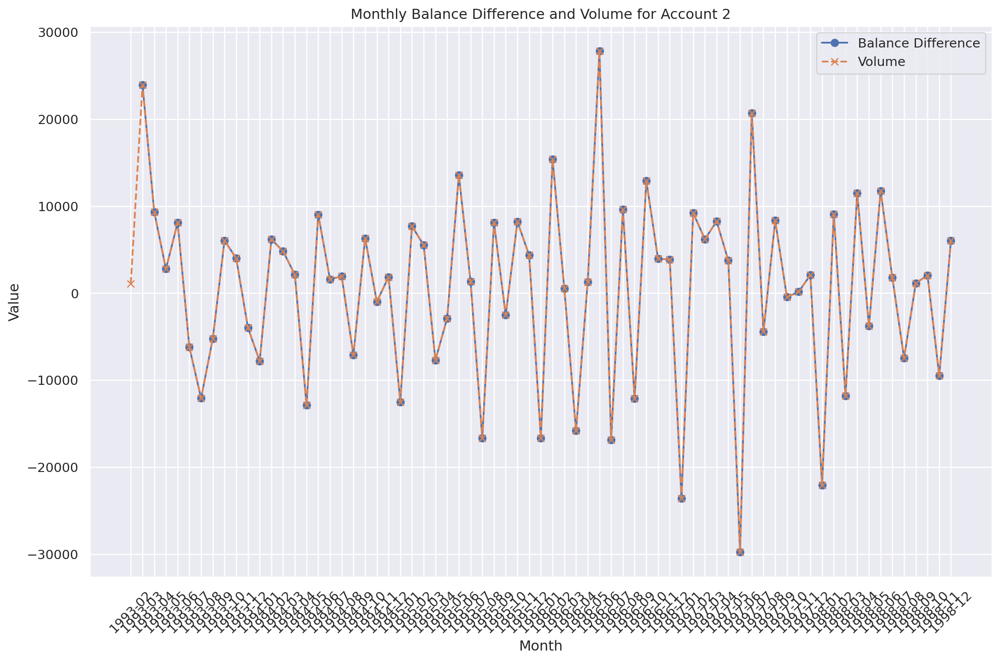
Monthly Transactions, Balance, and Volume Plot Explanation
This visualization offers a snapshot of an account’s activity over time by comparing money movement each month with the overall account balance. It helps to understand:
- Volume: How much money came in or went out of the account each month. Incoming money is shown as up, and outgoing money as down.
- Balance: The total money in the account at the end of each month, showing how it’s changed over time due to the monthly transactions.
What to Look For: - How the monthly money movement impacts the account’s growing or shrinking balance. For example, a few months of high income should visibly increase the balance. - This simple visual guide helps spot trends, like if the account is steadily growing, holding steady, or facing issues, giving quick insights into financial well-being and further validates the aggregation made in the previous step.
def plot_monthly_transactions_balance_and_volume(agg_transactions_monthly, account_id):
account_transactions = agg_transactions_monthly[agg_transactions_monthly['account_id'] == account_id]
plt.figure(figsize=(15, 10))
plt.plot(account_transactions['month'].astype(str), account_transactions['volume'], marker='o', label='Volume')
plt.plot(account_transactions['month'].astype(str), account_transactions['balance'], marker='x', linestyle='--', label='Balance')
plt.title(f'Monthly Transactions and Balance for Account {account_id}')
plt.xlabel('Month')
plt.ylabel('Value')
plt.xticks(rotation=60)
plt.legend()
plt.grid(True)
plt.tight_layout()
plt.show()
plot_monthly_transactions_balance_and_volume(agg_transactions_monthly_df, 2)
Delieverable: Closer Look at account 14 and 18
Account 14
plot_monthly_transactions_balance_and_volume(agg_transactions_monthly_df, 14)
Account 14 shows a rather conservative transaction history. The spending habits are all withing range of 10k to -10k per month. We can see little volatility, the account shows a slight trend of growing.
Account 18
plot_monthly_transactions_balance_and_volume(agg_transactions_monthly_df, 18)
Account 18 paints a different picture in comparison to account 14.
The volatility here is a lot higher, indiciating a potential for a business account or high income household. Especially March 1994 to December 1994 show some volatile transaction habits.
Analysis
Looking at the balance and volume per month for the accounts 14 and 18 we can notice some interesting patterns.
Account 14:
Rolling Window Aggregations for Card Holders
We condense transaction data into a monthly aggregated format. This aggregation serves a multifaceted purpose:
- Monthly aggregation standardizes the time frame across which we analyze transactions, allowing us to compare transactional behaviors consistently across all accounts.
- Aggregating data on a monthly level illuminates patterns that daily data might obscure. It enables us to discern trends over a broader time scale, capturing cyclical behaviors, seasonal effects, and response to macroeconomic events.
- Daily transaction data can be “noisy” with random fluctuations. By considering monthly totals and averages, we reduce this noise, revealing underlying trends more clearly.
- Our primary objective is to understand behaviors leading up to the issuance of a card. Aggregating transactions on a monthly basis helps focus on the crucial period preceding card issuance, enabling us to correlate transactional behaviors with the propensity to become a cardholder.
def pivot_transactions(non_transactional, transactions_monthly, months_before_card_range=(2, 13)):
"""
Aggregate monthly transaction data and merge it with non-transactional account data,
focusing on the time frame leading up to the card issuance.
This function merges monthly transaction data with non-transactional data to associate each
transaction with the respective account and card issued date. It then filters transactions based
on a specified range of months before card issuance and aggregates various transaction metrics.
Parameters:
- non_transactional (pd.DataFrame): A DataFrame containing non-transactional account data.
- transactions_monthly (pd.DataFrame): A DataFrame containing monthly transaction data.
- months_before_card_range (tuple): A tuple specifying the inclusive range of months before card
issuance to filter the transactions for aggregation.
The aggregation includes the sum of volume and transaction counts, as well as the mean and other
statistical measures of transaction amounts, for each account within the specified months before
card issuance.
The resulting DataFrame is pivoted to have 'account_id' as rows and the months before card
issuance as columns, with aggregated metrics as values. Column names are constructed to
describe the month and the metric represented.
Returns:
- pd.DataFrame: The final aggregated and pivoted dataset ready for analysis, with each row
representing an account and each column a specific metric in the months before
card issuance.
"""
merged_df = transactions_monthly.merge(non_transactional[['account_id']], on='account_id')
merged_df['card_issued_date'] = merged_df['account_id'].map(non_transactional.set_index('account_id')['card_issued'])
merged_df['months_before_card'] = merged_df.apply(lambda row: (row['card_issued_date'].to_period('M') - row['month']).n, axis=1)
start_month, end_month = months_before_card_range
filtered_df = merged_df.query(f"{start_month} <= months_before_card <= {end_month}")
aggregated_data = filtered_df.groupby(['account_id', 'months_before_card']).agg({
'volume': 'sum',
'total_abs_amount': 'sum',
'transaction_count': 'sum',
'positive_transaction_count': 'sum',
'negative_transaction_count': 'sum',
'average_amount': 'mean',
'median_amount': 'median',
'min_amount': 'min',
'max_amount': 'max',
'std_amount': 'std',
'type_count': 'sum',
'operation_count': 'sum',
'k_symbol_count': 'sum',
'balance': 'mean'
}).reset_index()
pivoted_data = aggregated_data.pivot(index='account_id', columns='months_before_card')
pivoted_data.columns = ['_'.join(['M', str(col[1]), col[0]]) for col in pivoted_data.columns.values]
final_dataset = pivoted_data.reset_index()
return final_dataset
transactions_pivoted_df = pivot_transactions(matched_non_card_holders_w_issue_date_df, agg_transactions_monthly_df)
transactions_pivoted_df.describe()| account_id | M_2_volume | M_3_volume | M_4_volume | M_5_volume | M_6_volume | M_7_volume | M_8_volume | M_9_volume | M_10_volume | ... | M_4_balance | M_5_balance | M_6_balance | M_7_balance | M_8_balance | M_9_balance | M_10_balance | M_11_balance | M_12_balance | M_13_balance | |
|---|---|---|---|---|---|---|---|---|---|---|---|---|---|---|---|---|---|---|---|---|---|
| count | 656.000000 | 656.000000 | 656.00000 | 656.000000 | 656.000000 | 656.000000 | 656.000000 | 656.000000 | 656.000000 | 656.000000 | ... | 656.000000 | 656.000000 | 656.000000 | 656.000000 | 656.000000 | 656.000000 | 656.000000 | 655.000000 | 656.000000 | 656.000000 |
| mean | 2957.942073 | -20.828506 | 1495.61875 | 393.974543 | 761.680488 | -93.054268 | 1075.282622 | 772.085823 | 1141.034299 | -853.279726 | ... | 44487.000457 | 44093.025915 | 43331.345427 | 43424.399695 | 42349.117073 | 41577.031250 | 40435.996951 | 41314.112366 | 40707.426829 | 40562.734909 |
| std | 2497.157337 | 12215.814862 | 13483.44255 | 13395.706005 | 14071.045677 | 14585.023261 | 14686.920565 | 14167.201470 | 13022.355049 | 15669.345082 | ... | 20862.899811 | 20895.453122 | 20892.297089 | 20645.878662 | 20887.157789 | 20045.315178 | 19791.385435 | 20209.080591 | 19590.811006 | 20328.581625 |
| min | 11.000000 | -53499.900000 | -54322.50000 | -61462.100000 | -62718.000000 | -67190.700000 | -63346.100000 | -84970.900000 | -70096.100000 | -70192.000000 | ... | -1894.000000 | -2081.600000 | 677.800000 | 191.200000 | -3323.500000 | -7.900000 | -1047.800000 | -1022.500000 | -4557.100000 | -4472.700000 |
| 25% | 1216.000000 | -2971.800000 | -2742.90000 | -2446.525000 | -2326.750000 | -3516.575000 | -2890.675000 | -2104.200000 | -2365.225000 | -4265.650000 | ... | 28419.600000 | 27667.200000 | 27119.000000 | 27351.450000 | 25553.250000 | 25851.725000 | 25130.475000 | 25493.650000 | 25199.250000 | 24986.325000 |
| 50% | 2422.500000 | 750.250000 | 1118.30000 | 1156.050000 | 1121.200000 | 1028.800000 | 1083.650000 | 1361.650000 | 1141.950000 | 720.250000 | ... | 43003.000000 | 42421.850000 | 41417.900000 | 42026.950000 | 40233.550000 | 39561.250000 | 37971.150000 | 38809.200000 | 38307.800000 | 37939.250000 |
| 75% | 3716.750000 | 3754.175000 | 4716.10000 | 4441.225000 | 4694.425000 | 4784.450000 | 4565.500000 | 4763.200000 | 4859.600000 | 4196.525000 | ... | 57002.550000 | 56559.625000 | 54945.550000 | 57244.150000 | 54951.900000 | 54563.500000 | 52248.425000 | 51831.250000 | 52188.700000 | 51449.450000 |
| max | 11382.000000 | 61141.900000 | 68063.70000 | 64240.000000 | 64321.400000 | 78147.800000 | 88209.200000 | 69456.400000 | 72059.700000 | 98041.500000 | ... | 116346.100000 | 112335.700000 | 109395.200000 | 111264.300000 | 106472.800000 | 108358.900000 | 132286.300000 | 108202.400000 | 112159.300000 | 111050.900000 |
8 rows × 169 columns
matched_non_card_holders_w_issue_date_df| account_id | account_district_id | account_frequency | account_created | account_district_name | account_region | account_inhabitants | account_small_municipalities | account_medium_municipalities | account_large_municipalities | ... | loan_amount | loan_duration | loan_monthly_payments | loan_status | has_card | age_at_card_issuance | client_tenure_years_relative | age_group | loan_status_simplified | months_since_account_to_card | |
|---|---|---|---|---|---|---|---|---|---|---|---|---|---|---|---|---|---|---|---|---|---|
| 0 | 576 | 55 | MONTHLY_ISSUANCE | 1993-01-01 | Brno - venkov | south Moravia | 157042 | 49 | 70 | 18 | ... | NaN | NaN | NaN | NaN | False | NaN | 5.990418 | 55-70 | NaN | NaN |
| 9 | 1695 | 76 | MONTHLY_ISSUANCE | 1993-01-03 | Sumperk | north Moravia | 127369 | 31 | 32 | 13 | ... | NaN | NaN | NaN | NaN | True | 27.0 | 5.984942 | 25-40 | NaN | 67.0 |
| 35 | 866 | 9 | MONTHLY_ISSUANCE | 1993-01-10 | Nymburk | central Bohemia | 81344 | 61 | 23 | 4 | ... | NaN | NaN | NaN | NaN | False | NaN | 5.965777 | 25-40 | NaN | NaN |
| 37 | 2379 | 44 | MONTHLY_ISSUANCE | 1993-01-10 | Chrudim | east Bohemia | 105606 | 77 | 26 | 7 | ... | NaN | NaN | NaN | NaN | False | NaN | 5.965777 | 25-40 | NaN | NaN |
| 38 | 1979 | 26 | MONTHLY_ISSUANCE | 1993-01-11 | Plzen - mesto | west Bohemia | 170449 | 0 | 0 | 0 | ... | NaN | NaN | NaN | NaN | False | NaN | 5.963039 | <25 | NaN | NaN |
| ... | ... | ... | ... | ... | ... | ... | ... | ... | ... | ... | ... | ... | ... | ... | ... | ... | ... | ... | ... | ... | ... |
| 3350 | 5912 | 45 | MONTHLY_ISSUANCE | 1996-10-25 | Jicin | east Bohemia | 77917 | 85 | 19 | 6 | ... | 184620.0 | 60.0 | 3077.0 | Contract running, OK thus-far | False | NaN | 2.176591 | 25-40 | Running | NaN |
| 3356 | 281 | 1 | MONTHLY_ISSUANCE | 1996-10-27 | Hl.m. Praha | Prague | 1204953 | 0 | 0 | 0 | ... | NaN | NaN | NaN | NaN | True | 32.0 | 2.171116 | 25-40 | NaN | 25.0 |
| 3360 | 3956 | 6 | MONTHLY_ISSUANCE | 1996-10-28 | Kutna Hora | central Bohemia | 77963 | 60 | 23 | 4 | ... | NaN | NaN | NaN | NaN | True | 48.0 | 2.168378 | 40-55 | NaN | 26.0 |
| 3416 | 993 | 6 | MONTHLY_ISSUANCE | 1996-11-14 | Kutna Hora | central Bohemia | 77963 | 60 | 23 | 4 | ... | 108720.0 | 60.0 | 1812.0 | Contract running, OK thus-far | True | 32.0 | 2.121834 | 25-40 | Running | 25.0 |
| 3457 | 2303 | 41 | MONTHLY_ISSUANCE | 1996-11-24 | Usti nad Labem | north Bohemia | 118650 | 8 | 8 | 5 | ... | NaN | NaN | NaN | NaN | False | NaN | 2.094456 | <25 | NaN | NaN |
656 rows × 64 columns
agg_transactions_monthly_df.to_csv("./data/transactions_monthly.csv")Merge everything together
golden_record_df = matched_non_card_holders_w_issue_date_df.merge(transactions_pivoted_df, on='account_id', how='left')
assert golden_record_df['client_id'].is_unique, "Each client_id should appear exactly once in the final DataFrame."
assert golden_record_df['account_id'].is_unique, "Each account_id should appear exactly once in the final DataFrame."golden_record_df.to_csv("data/bronze_record.csv")golden_record_df.describe()| account_id | account_district_id | account_created | account_inhabitants | account_small_municipalities | account_medium_municipalities | account_large_municipalities | account_huge_municipalities | account_cities | account_ratio_urban_inhabitants | ... | M_4_balance | M_5_balance | M_6_balance | M_7_balance | M_8_balance | M_9_balance | M_10_balance | M_11_balance | M_12_balance | M_13_balance | |
|---|---|---|---|---|---|---|---|---|---|---|---|---|---|---|---|---|---|---|---|---|---|
| count | 656.000000 | 656.000000 | 656 | 6.560000e+02 | 656.000000 | 656.000000 | 656.000000 | 656.000000 | 656.000000 | 656.000000 | ... | 656.000000 | 656.000000 | 656.000000 | 656.000000 | 656.000000 | 656.000000 | 656.000000 | 655.000000 | 656.000000 | 656.000000 |
| mean | 2957.942073 | 37.193598 | 1994-08-10 07:51:57.073170688 | 2.580727e+05 | 39.396341 | 21.100610 | 5.704268 | 1.666159 | 5.608232 | 68.719970 | ... | 44487.000457 | 44093.025915 | 43331.345427 | 43424.399695 | 42349.117073 | 41577.031250 | 40435.996951 | 41314.112366 | 40707.426829 | 40562.734909 |
| min | 11.000000 | 1.000000 | 1993-01-01 00:00:00 | 4.282100e+04 | 0.000000 | 0.000000 | 0.000000 | 0.000000 | 1.000000 | 33.900000 | ... | -1894.000000 | -2081.600000 | 677.800000 | 191.200000 | -3323.500000 | -7.900000 | -1047.800000 | -1022.500000 | -4557.100000 | -4472.700000 |
| 25% | 1216.000000 | 14.000000 | 1993-08-02 12:00:00 | 8.875700e+04 | 9.000000 | 11.000000 | 3.000000 | 1.000000 | 4.000000 | 52.700000 | ... | 28419.600000 | 27667.200000 | 27119.000000 | 27351.450000 | 25553.250000 | 25851.725000 | 25130.475000 | 25493.650000 | 25199.250000 | 24986.325000 |
| 50% | 2422.500000 | 37.000000 | 1994-05-05 00:00:00 | 1.198950e+05 | 34.000000 | 22.000000 | 5.000000 | 1.000000 | 6.000000 | 62.600000 | ... | 43003.000000 | 42421.850000 | 41417.900000 | 42026.950000 | 40233.550000 | 39561.250000 | 37971.150000 | 38809.200000 | 38307.800000 | 37939.250000 |
| 75% | 3716.750000 | 60.000000 | 1995-09-17 12:00:00 | 1.970990e+05 | 63.000000 | 30.000000 | 8.000000 | 2.000000 | 8.000000 | 85.200000 | ... | 57002.550000 | 56559.625000 | 54945.550000 | 57244.150000 | 54951.900000 | 54563.500000 | 52248.425000 | 51831.250000 | 52188.700000 | 51449.450000 |
| max | 11382.000000 | 77.000000 | 1996-11-24 00:00:00 | 1.204953e+06 | 151.000000 | 70.000000 | 20.000000 | 5.000000 | 11.000000 | 100.000000 | ... | 116346.100000 | 112335.700000 | 109395.200000 | 111264.300000 | 106472.800000 | 108358.900000 | 132286.300000 | 108202.400000 | 112159.300000 | 111050.900000 |
| std | 2497.157337 | 24.974381 | NaN | 3.501422e+05 | 33.780046 | 14.910694 | 4.527208 | 1.023308 | 2.894141 | 19.501927 | ... | 20862.899811 | 20895.453122 | 20892.297089 | 20645.878662 | 20887.157789 | 20045.315178 | 19791.385435 | 20209.080591 | 19590.811006 | 20328.581625 |
8 rows × 220 columns
plt.figure(figsize=(10, 6))
plt.title('Number of Clients by Card Issuance Status')
sns.countplot(x='has_card', data=golden_record_df)
plt.xlabel('Card Issued')
plt.ylabel('Count')
plt.show()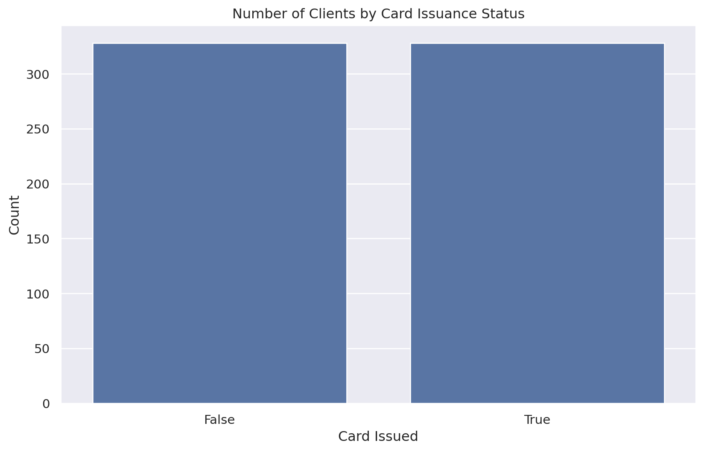
plt.figure(figsize=(10, 6))
plt.title('Distribution of Card Issuance Dates')
sns.histplot(golden_record_df, x='card_issued', hue='has_card', kde=True, bins=30)
plt.xlabel('Card Issuance Date')
plt.ylabel('Count')
plt.show()
data_reductionOrderedDict([('Total number of accounts', 4500),
('Junior Card Holders', -145),
('Clients without sufficient history', -419),
('Non-cardholders without match', -3280)])golden_record_df.head()| account_id | account_district_id | account_frequency | account_created | account_district_name | account_region | account_inhabitants | account_small_municipalities | account_medium_municipalities | account_large_municipalities | ... | M_4_balance | M_5_balance | M_6_balance | M_7_balance | M_8_balance | M_9_balance | M_10_balance | M_11_balance | M_12_balance | M_13_balance | |
|---|---|---|---|---|---|---|---|---|---|---|---|---|---|---|---|---|---|---|---|---|---|
| 0 | 576 | 55 | MONTHLY_ISSUANCE | 1993-01-01 | Brno - venkov | south Moravia | 157042 | 49 | 70 | 18 | ... | 27126.7 | 35312.4 | 35433.9 | 32763.3 | 30103.6 | 27455.2 | 39623.2 | 41346.8 | 40646.7 | 37953.8 |
| 1 | 1695 | 76 | MONTHLY_ISSUANCE | 1993-01-03 | Sumperk | north Moravia | 127369 | 31 | 32 | 13 | ... | 98674.9 | 97326.2 | 105257.0 | 68223.8 | 101761.7 | 62686.1 | 55853.1 | 81933.7 | 79168.4 | 99457.9 |
| 2 | 866 | 9 | MONTHLY_ISSUANCE | 1993-01-10 | Nymburk | central Bohemia | 81344 | 61 | 23 | 4 | ... | 44557.8 | 43400.0 | 46437.7 | 38284.0 | 30464.7 | 38555.5 | 26915.8 | 33208.3 | 33189.4 | 30079.9 |
| 3 | 2379 | 44 | MONTHLY_ISSUANCE | 1993-01-10 | Chrudim | east Bohemia | 105606 | 77 | 26 | 7 | ... | 26694.2 | 27584.7 | 29892.7 | 30093.1 | 31091.8 | 29588.7 | 31988.2 | 27748.8 | 24161.5 | 21086.2 |
| 4 | 1979 | 26 | MONTHLY_ISSUANCE | 1993-01-11 | Plzen - mesto | west Bohemia | 170449 | 0 | 0 | 0 | ... | 23144.1 | 22056.9 | 20974.1 | 20795.2 | 22080.4 | 20997.5 | 20768.4 | 19690.9 | 18617.9 | 17968.5 |
5 rows × 232 columns
data_reduction["Final Golden Record"] = len(golden_record_df)
data_reductionOrderedDict([('Total number of accounts', 4500),
('Junior Card Holders', -145),
('Clients without sufficient history', -419),
('Non-cardholders without match', -3280),
('Final Golden Record', 656)])import plotly.graph_objects as go
data_reduction_df = pd.DataFrame(list(data_reduction.items()), columns=['Category', 'Amount'])
colors = ['skyblue' if amt >= 0 else 'orange' for amt in data_reduction_df['Amount']]
fig = go.Figure(go.Waterfall(
name="20", orientation="v",
measure=["relative"] * (len(data_reduction_df) - 1) + ["total"],
x=data_reduction_df['Category'],
textposition="outside",
text=[f'{amt:,.0f}' for amt in data_reduction_df['Amount']],
y=data_reduction_df['Amount'],
connector={"line":{"color":"black", "width":2}},
decreasing={"marker":{"color":"orange"}},
increasing={"marker":{"color":"skyblue"}},
totals={"marker":{"color":"skyblue"}},
))
fig.update_layout(
title="Enhanced Data Reduction Waterfall Chart",
xaxis=dict(title="Category"),
yaxis=dict(title="Amount", range=[0, 5500]),
waterfallgap=0.3
)
fig.show()Model Construction
import pandas as pd
from sklearn.model_selection import cross_validate
from sklearn.metrics import make_scorer, f1_score, roc_auc_score, precision_score, recall_score
from sklearn.preprocessing import StandardScaler, OneHotEncoder
from sklearn.compose import ColumnTransformer
from sklearn.pipeline import Pipeline
from sklearn.impute import SimpleImputer
from sklearn.linear_model import LogisticRegression
def train_evaluate_model(golden_record_df, feature_columns, model, target_column='has_card', cv=10):
"""
Trains and evaluates a given model based on specified feature columns using cross-validation.
Parameters:
- golden_record_df: DataFrame containing the Golden Record dataset.
- feature_columns: List of column names to be used as features.
- model: The machine learning model to be trained and evaluated.
- target_column: Name of the target column.
Returns:
- metrics_summary: Summary of evaluation metrics including mean and standard deviation for accuracy, F1, AUC-ROC, precision, recall.
"""
X = golden_record_df[feature_columns]
y = golden_record_df[target_column]
numerical_features = [col for col in feature_columns if golden_record_df[col].dtype in ['int64', 'float64']]
categorical_features = [col for col in feature_columns if golden_record_df[col].dtype == 'object']
numerical_pipeline = Pipeline([
('imputer', SimpleImputer(strategy='mean')),
('scaler', StandardScaler())
])
categorical_pipeline = Pipeline([
('imputer', SimpleImputer(strategy='most_frequent')),
('onehot', OneHotEncoder(handle_unknown='ignore'))
])
preprocessor = ColumnTransformer(
transformers=[
('num', numerical_pipeline, numerical_features),
('cat', categorical_pipeline, categorical_features)
])
pipeline = Pipeline([
('preprocessor', preprocessor),
('model', model)
])
scoring = {
'accuracy': 'accuracy',
'f1': make_scorer(f1_score),
'roc_auc': 'roc_auc',
'precision': make_scorer(precision_score),
'recall': make_scorer(recall_score)
}
metrics_summary = cross_validate(pipeline, X, y, scoring=scoring, cv=cv, return_train_score=False)
metrics_report = {}
for metric in scoring.keys():
metrics_report[metric] = {
'mean': metrics_summary[f'test_{metric}'].mean(),
'std': metrics_summary[f'test_{metric}'].std()
}
print(f"{metric}: mean = {metrics_report[metric]['mean']:.2f}, std = {metrics_report[metric]['std']:.2f}")
return metrics_reportfrom sklearn.linear_model import LogisticRegression
model = LogisticRegression(random_state=42, max_iter=1000)
feature_columns = [
'age',
'client_region'
] + [col for col in golden_record_df.columns if 'M_' in col and ('_balance' in col or '_volume' in col)]
train_evaluate_model(golden_record_df, feature_columns, model)accuracy: mean = 0.79, std = 0.06
f1: mean = 0.79, std = 0.06
roc_auc: mean = 0.88, std = 0.04
precision: mean = 0.79, std = 0.06
recall: mean = 0.79, std = 0.07{'accuracy': {'mean': 0.7909090909090909, 'std': 0.05508558502710415},
'f1': {'mean': 0.7911739310692913, 'std': 0.055562935941218604},
'roc_auc': {'mean': 0.8753500918273645, 'std': 0.043519879082995275},
'precision': {'mean': 0.7917767150452161, 'std': 0.06043180966587572},
'recall': {'mean': 0.7928030303030303, 'std': 0.06608844457911726}}Model Engineering
Model Comparison & Selection
from sklearn.ensemble import RandomForestClassifier
model = RandomForestClassifier(random_state=42)
train_evaluate_model(golden_record_df, feature_columns, model)accuracy: mean = 0.83, std = 0.05
f1: mean = 0.84, std = 0.04
roc_auc: mean = 0.88, std = 0.04
precision: mean = 0.78, std = 0.05
recall: mean = 0.91, std = 0.05{'accuracy': {'mean': 0.8259906759906761, 'std': 0.04852498002927482},
'f1': {'mean': 0.8401283556501674, 'std': 0.04356615352241835},
'roc_auc': {'mean': 0.8834825528007346, 'std': 0.044855499082503594},
'precision': {'mean': 0.7806318671787221, 'std': 0.052030365364675805},
'recall': {'mean': 0.9114583333333334, 'std': 0.04835900824313781}}WORKBENCH - remove later
Some older input
We need some categorical indicator wheter a transactions is a transactions incoming or outgoing from the perspective of the account holder. This will be important for the feature engineering later on. We will create a column called transaction_direction using the amount to engineer this feature.
Balance is the wealth on the account after the transaction.
k_symbol is the purpose of the transaction. This is often use in the context of budgeting in E-Banking applications or just personal finance management. A lot of NA values are present in this column. We will have to deal with this later on and weigh the importance of this column.
Track the time series of a given account to get a better understanding of the datasets nature.
It seems that there can be multiple transactions on the same day. We will have to aggregate the transactions on the same day to get a better understanding of the transactions as the timestamp resolution is not high enough to track the transactions on a daily basis.
We need some handling for this as the ID is not informative as well (Dani).
For the feature enginnering a per month evaluation of the transactions is sufficient (Dani).
We need to make sure across the board that for the prediction we only use the data that is available at the time of the prediction. This means that we can only use the data from the past to predict the future. This is important to keep in mind when we engineer the features as some entities do not have any information about the date and therefore we cannot use them for the prediction as we cannot rule out that they are not from the future.
Frequency analysis of the transactions could be interesting as the hypothesis might be that the more frequent the transactions the more likely the account holder is to be interested in a credit card. Fourier transformation could be used to get a better understanding of the frequency of the transactions.
JITT 05.03.24
- New customers are handled differently
- Customer without the required history should be ignored otherwise they are treated as irrelevant
- Lag is ignored like (12 + 1) months
- Age should be in relation to the time of the event (card issued / reference date for refrence clients)
- How old are customers with a Junior Card? This should be evaluated based on the data
- Example with Junior Card model with Age as most important feature as a negative example
- Reference clients
- They should not be as similar as possible (Twin brother problem)
- Same external market conditions
- Same environment
- See slide 6
- Owner and disponents cannot be distinguished directly and assumptions are required
- MasterCards vs Visa war: as much cards as possible for both client of an account
- AGain the Twin brother problem as features are too similar possibly
General notes to self
- Visualise monthly product puchases
- Viz environment of selected client and reference clients and answer the questions are they from a comparable environment